본 포스트는 Andrea Rotnitzky와 Ezequiel Smucler가 Journal of Machine Learning Research 21권(2020)에 발표한 논문 Efficient Adjustment Sets for Population Average Causal Treatment Effect Estimation in Graphical Models(pp. 1–86, JMLR v21/19-1026, Editor: David Sontag)를 바탕으로, 준모수 효율성 이론에 익숙하지 않은 독자도 논리적 흐름을 따라갈 수 있도록 재구성한 것입니다. 본문·부록·알고리즘·보조정리를 모두 포함해 정리했습니다.
논문 정보 (Paper Information)
- 제목: Efficient Adjustment Sets for Population Average Causal Treatment Effect Estimation in Graphical Models
- 저자: Andrea Rotnitzky, Ezequiel Smucler
- 소속: Universidad Torcuato Di Tella (Department of Economics / Department of Mathematics and Statistics), Buenos Aires, Argentina; CONICET, Argentina
- 출처: Journal of Machine Learning Research, 21 (2020), 1–86. Submitted 12/19; Revised 6/20; Published 9/20. (http://jmlr.org/papers/v21/19-1026.html, CC-BY 4.0)
- 키워드: 조정집합(adjustment sets), 뒷문 공식(back-door formula), 베이지안 네트워크(Bayesian networks), 인과추론(causal inference), 준모수 추론(semiparametric inference)
한 줄 요약 (TL;DR)
“최적 조정집합을 고르는 그래프 기준은 선형성에도 OLS에도 의존하지 않는다 — 그리고 그렇게 고른 조정집합조차 그래프가 담은 정보를 다 쓰지는 못한다.”
Henckel et al. (2019)은 선형 DAG 모형 + OLS 추정량이라는 전제 아래 두 조정집합의 점근분산을 비교하는 기준과 최적 조정집합 \(\mathbf{O}(A,Y,\mathcal{G})\)를 식별하는 기준을 얻었습니다. 이 논문은 동일한 그래프 기준이 비모수(non-parametric) 인과 그래프 모형과 비모수 조정 추정량에서도 그대로 성립함을 증명합니다. 여기에 더해 (i) 최소 조정집합들 가운데 최적인 \(\mathbf{O}_{\min}\)을 특성화하고, (ii) 시간의존(time dependent) 조정집합을 비교하는 새로운 기준을 제시하되 균일 최적 시간의존 조정집합은 항상 존재하지는 않음을 반례로 보이며, (iii) 점 개입에 대해 비모수 최적조정 추정량(NP-\(\mathbf{O}\))이 준모수 효율적인지를 판정하는 건전(sound)하고 완전(complete)한 그래프 기준을 세웁니다. 마지막으로 식별과 효율 추정 사이의 연결 — 처치·결과·매개변수만으로 이루어진 식별 공식이 존재하면 NP-\(\mathbf{O}\) 추정량은 결코 전역 효율적일 수 없다 — 을 증명합니다.
초록 (Abstract)
논문의 기여를 초록 수준에서 먼저 정리해 보겠습니다.
- 문제 설정: 관측 연구에서 총 처치효과(total treatment effect)를 추정할 때 널리 쓰이는 공변량 조정(covariate adjustment) 방법을 다룹니다. 유효한 조정집합이 여러 개 있을 때 어느 것을 골라야 하는가가 질문입니다.
- 선행 연구: Henckel et al. (2019)은 인과 선형 모형에 한정하여 두 개의 새로운 그래프 기준을 유도했습니다. 하나는 서로 다른 조정집합을 통제한 선형회귀 처치효과 추정량들의 점근분산을 비교하는 기준이고, 다른 하나는 최소 점근분산을 주는 최적 조정집합을 식별하는 기준입니다.
- 본 논문의 기여:
- 개입 평균(interventional mean)을 비모수적으로 조정 추정할 때에도 동일한 그래프 기준이 비모수 인과 그래프 모형에서 그대로 성립함을 보입니다.
- 최소 조정집합들 중 최적인 것을 결정하는 새로운 그래프 기준을 제시합니다.
- 시간의존 조정집합을 비교하는 또 하나의 새로운 그래프 기준을 제시하고, 균일하게 최적인 시간의존 조정집합이 항상 존재하지는 않음을 보입니다.
- 점 개입(point intervention)에 대해, 개입 평균 또는 개입 평균들의 대비(contrast)에 대한 비모수 최적조정 추정량이 비모수 인과 그래프 모형 하에서 준모수 효율적인지를 판정하는 건전하고 완전한 그래프 기준을 제시합니다.
- 기준이 충족되지 않을 때에는 효율적 영향함수(efficient influence function)의 단순화 가능성을 점검하는 건전한 알고리즘을 제공합니다.
- 식별과 효율적 공변량 조정 추정 사이의 흥미로운 연결을 발견합니다. 구체적으로, 개입 평균에 대해 처치·결과·매개변수에만 의존하는 식별 공식이 존재하면 비모수 최적조정 추정량은 결코 전역적으로 효율적일 수 없습니다.
1. 서론 (Introduction)
1.1 문제의 출발점: 어떤 조정집합을 고를 것인가
공변량의 부분집합을 조건화하여 총 인과 처치효과를 추정하는 방법을 공변량 조정법(method of covariate adjustment)이라 부릅니다.
- 인과 DAG 모형을 가정할 때, 뒷문 기준(back-door criterion) (Pearl, 2000)은 어떤 공변량 집합이 조정에 쓰일 수 있는지에 대한 충분조건을 주는 그래프 기준입니다.
- Shpitser et al. (2010)은 한 걸음 더 나아가, 공변량 집합이 조정 자격을 갖추기 위한 필요충분 그래프 기준을 제시했습니다.
이 기준들은 관측 연구를 설계할 때 특히 유용합니다. 연구자는 인과 다이어그램을 세우고, 위 기준을 적용해 교란(confounding)을 통제하기 위해 어떤 공변량을 측정할지 결정할 수 있습니다. 그런데 여기서 자연스러운 질문이 생깁니다.
여러 개의 유효한 조정집합이 존재할 때, 어느 것을 선택해야 하는가?
1.2 Henckel et al. (2019)의 답과 그 전제
Henckel et al. (2019)(그리고 Witte et al., 2020)은 다음 두 가정 아래 이 질문에 답했습니다.
- 인과 DAG 모형이 선형(linear)이다. 즉 DAG의 각 정점이 자신의 부모들에 대한 선형회귀 모형을 따르는 확률변수를 나타내며, 오차는 독립이고 분포는 임의다.
- 총 처치효과가 OLS로 추정된다. 즉 결과를 처치와 유효 조정 공변량들에 회귀시킨 보통최소제곱(OLS) 적합에서 처치의 계수로 추정된다.
이 전제 위에서 그들은 최적 공변량 조정집합을 식별하는 그래프 기준을 유도했습니다. 여기서 “최적”이란, 유효 조정집합을 통제한 모든 OLS 처치효과 추정량 가운데 점근분산이 가장 작은 추정량을 주는 집합이라는 뜻입니다.
선형성과 OLS는 이론적으로는 편리하지만, 실무의 인과추론은 이미 그 바깥에 있습니다. 성향점수를 비모수적으로 추정한 역확률가중(IPW) (Hirano et al., 2003; Abadie & Cattaneo, 2018), 이중강건(doubly-robust) 추정, 더블/디바이어스드 머신러닝(double machine learning) (Chernozhukov et al.; Smucler et al., 2019) — 모두 선형성도 OLS도 쓰지 않습니다.
그렇다면 “선형 세계에서 얻은 조정집합 선택 기준을 비선형 세계에서 그대로 써도 되는가?”가 실질적인 질문이 됩니다. 이 논문의 첫 번째 답이 바로 여기에 있습니다.
1.3 논문의 기여
논문의 기여를 순서대로 짚어 보겠습니다.
- ① 최적 조정집합 기준의 비모수 확장 (§5.1): 다음 두 조건 아래에서도 동일한 기준이 최적 유효 조정집합을 식별함을 증명합니다.
- 인과 DAG 모형이 비모수적이다. 즉 각 노드의 부모 조건부 분포에 아무 가정도 두지 않는다.
- 처치효과가 비모수적으로 추정된다. 즉 인과 DAG가 부호화한 조건부 독립성을 활용하지 않는다.
- ② 최소 조정집합 중 최적 집합 \(\mathbf{O}_{\min}\) (§5.1): 최소 조정집합(minimal adjustment set) — 어느 정점을 빼도 더 이상 유효하지 않게 되는 유효 조정집합 — 들 가운데 최적인 것을 식별하는 그래프 기준을 제시합니다. 이 기준은 비모수 모형·추정량과 선형 모형·추정량 모두에서 성립합니다.
- ③ 가지치기(pruning) 절차의 비모수 확장 (§5.1): Henckel et al. (2019)은 유효 조정집합을 받아 점근분산이 더 작은 가지친 조정집합을 반환하는 간단한 절차를 제시했습니다(이는 VanderWeele & Shpitser (2011)이 추측했던 바를 선형 모형에서 엄밀히 증명한 것입니다). 이 논문은 그 기준과 가지치기 절차 역시 비모수 인과 DAG 모형과 추정량에 그대로 적용됨을 증명합니다.
- ④ 시간의존 조정집합 (§5.2): 결합 개입(joint intervention)의 경우, Henckel et al.의 기준은 조정집합이 시간독립(time independent)이라는 제한적 가정을 둡니다. 그런데 시간독립 조정집합은 존재하지 않을 수도 있습니다. 반면 시간의존(time dependent) 조정집합은 — 후속 처치를 조정하는 데 필요하지만 자신은 앞선 처치의 영향을 받는 공변량들로 구성되며 — 항상 존재합니다. 이 논문은 Theorem 13으로 특정 시간의존 조정집합들의 비교를 가능하게 하되, 균일 최적 시간의존 조정집합이 존재하지 않는 DAG의 반례도 함께 제시합니다.
- ⑤ 효율성의 한계 (§6): DAG의 모든 변수를 측정할 수 있다면, 비모수 인과 DAG 모형이 부호화한 조건부 독립성을 활용하여 더 효율적으로 추정할 수 있습니다. 그렇다면 어떤 DAG 구조에서 최적 조정 추정이 효율 손실을 전혀 겪지 않는가? 이 질문에 대해 건전하고 완전한 그래프 기준(Theorem 19)을 세웁니다.
- ⑥ 식별과 효율 추정의 연결 (§6.3): ⑤의 완전성과 ID 알고리즘(Tian & Pearl, 2002; Shpitser & Pearl, 2008)의 완전성을 결합하면, 처치·결과·매개변수만으로 이루어진 식별 공식이 존재하는 순간 NP-\(\mathbf{O}\) 추정량은 전역 효율적일 수 없다는 결론(Theorem 21)이 따라 나옵니다.
- ⑦ 불필요 변수 탐지 (§6.4): 최적조정 추정량이 효율적이지 않더라도, 효율적 영향함수에 들어가지 않는 변수들은 애초에 측정할 필요가 없습니다. 이를 점검하는 건전한 알고리즘(Algorithm 2)을 제시합니다.
Henckel et al. (2019)은 DAG뿐 아니라 CPDAG(Meek, 1995; Andersson et al., 1997; Spirtes et al., 2000; Chickering, 2002)와 maximal PDAG(사전에 일부 엣지 방향을 아는 경우 마르코프 동치류를 최대로 정련한 그래프)에 대해서도 기준을 유도했습니다.
그런데 그 기준들은 DAG에 대한 기준의 따름정리입니다. 왜냐하면 그 기준들이 오직 CPDAG·maximal PDAG 위의 d-분리 조건에만 기반하고, 그런 그래프에서 성립하는 d-분리는 그것이 표현하는 모든 DAG에서도 성립하기 때문입니다.
따라서 이 논문이 “선형 DAG의 기준 = 비모수 DAG의 기준”을 증명하는 순간, 선형 CPDAG·maximal PDAG의 기준 역시 비모수 버전에서 그대로 성립한다는 결론이 자동으로 따라옵니다. 논문은 중복을 피하기 위해 이 주제를 확장하지 않고 Henckel et al. (2019)을 참조하도록 안내합니다.
1.4 논문의 구성
- §2 인과 그래프 모형과 준모수 효율성 이론의 개념 복습
- §3 시간독립 조정집합의 정의 복습 및 시간의존 조정집합의 정의
- §4 비모수 공변량 조정 기반 추정량의 점근 이론 복습
- §5 최적 조정집합에 관한 주요 결과
- §6 인과 그래프 모형의 제약을 활용하는 효율 추정
- §7 열린 문제 목록으로 마무리
- 부록 본문의 모든 결과에 대한 증명
2. 배경 지식 (Background)
이 절은 논문 전반에서 쓰이는 인과 그래프 모형 이론과 준모수 효율성 이론의 요소들을 정리합니다.
2.1 유향 비순환 그래프 (Directed Acyclic Graphs)
2.1.1 그래프와 경로의 기본 용어
- 유향 그래프(directed graph): \(\mathcal{G} = (\mathbf{V}, \mathbf{E})\)는 유한한 노드 집합 \(\mathbf{V}\)와 유향 엣지 집합 \(\mathbf{E}\)로 구성됩니다. 두 노드 \(V, W\) 사이의 유향 엣지는 \(V \to W\)로 표기합니다.
- 유도 부분그래프(induced subgraph): 노드 집합 \(\mathbf{Z} \subset \mathbf{V}\)가 주어졌을 때 \(\mathcal{G}_{\mathbf{Z}} = (\mathbf{Z}, \mathbf{E}_{\mathbf{Z}})\)는 \(\mathbf{Z}\)의 노드들과 그 사이의 엣지만 남긴 그래프입니다.
- 인접(adjacent): 두 노드 사이에 엣지가 존재하면 인접합니다.
- 경로(path): 노드 \(V\)에서 \(W\)로 가는 경로는 \(V_1 = V\), \(V_j = W\)이고 모든 \(i \in \{1, \dots, j-1\}\)에 대해 \(V_i\)와 \(V_{i+1}\)이 인접한 노드 열 \((V_1, \dots, V_j)\)입니다. \(V\)와 \(W\)를 이 경로의 끝점(endpoints)이라 부릅니다.
- 유향(directed) 경로 = 인과(causal) 경로: 모든 \(i\)에 대해 \(V_i \to V_{i+1}\)인 경로입니다.
2.1.2 혈통 관계 (Ancestry)
- \(V \to W\)이면 \(V\)는 \(W\)의 부모(parent), \(W\)는 \(V\)의 자식(child)입니다.
- \(V\)에서 \(W\)로 가는 유향 경로가 있으면 \(V\)는 \(W\)의 조상(ancestor), \(W\)는 \(V\)의 후손(descendant)입니다.
- 관례: 모든 노드는 자기 자신의 조상이자 후손입니다.
- 표기: \(\mathrm{pa}_{\mathcal{G}}(V)\), \(\mathrm{ch}_{\mathcal{G}}(V)\), \(\mathrm{an}_{\mathcal{G}}(V)\), \(\mathrm{de}_{\mathcal{G}}(V)\). 비후손(non-descendants)은 \(\mathrm{nd}_{\mathcal{G}}(V) \equiv \mathrm{de}^c_{\mathcal{G}}(V)\)로 정의합니다.
2.1.3 충돌자와 분기점 (Colliders and Forks)
- 경로 \(\delta\)가 부분경로 \((U, V, W)\)를 포함하고 \(U \to V \leftarrow W\)이면, \(V\)는 \(\delta\) 위의 충돌자(collider)입니다.
- 부분경로가 \(U \leftarrow V \to W\)이면 \(V\)는 \(\delta\) 위의 분기점(fork)입니다.
2.1.4 유향 순환과 DAG
- \(V\)에서 \(W\)로 가는 유향 경로에 엣지 \(W \to V\)를 더하면 유향 순환(directed cycle)이 됩니다.
- 유향 순환이 없는 유향 그래프가 DAG입니다.
- 노드 열 \((V_{k_1}, \dots, V_{k_s})\)가 DAG \(\mathcal{G}\)에 대해 위상 순서(topological order)를 따른다는 것은, \(j > j'\)일 때마다 \(V_{k_j}\)가 \(V_{k_{j'}}\)의 조상이 아님을 뜻합니다.
2.1.5 d-분리 (d-separation)
d-분리 (Pearl, 2000). DAG \(\mathcal{G}\)와 서로소인 노드 집합 \(\mathbf{U}, \mathbf{W}, \mathbf{Z}\)를 생각합시다. \(U \in \mathbf{U}\)와 \(W \in \mathbf{W}\) 사이의 경로 \(\delta\)가 \(\mathcal{G}\)에서 \(\mathbf{Z}\)에 의해 차단(blocked)된다는 것은 다음 중 하나가 성립함을 뜻합니다.
- \(\delta\)가 충돌자가 아니면서 \(\mathbf{Z}\)에 속하는 노드를 포함하거나,
- \(\delta\) 위에 충돌자 \(C\)가 존재하여 \(C\)도 \(C\)의 후손도 \(\mathbf{Z}\)에 속하지 않는 경우.
모든 \(U \in \mathbf{U}\), \(W \in \mathbf{W}\)에 대해 \(\mathbf{Z}\)가 주어졌을 때 둘 사이의 모든 경로가 차단되면, \(\mathbf{U}\)와 \(\mathbf{W}\)는 \(\mathcal{G}\)에서 \(\mathbf{Z}\)에 의해 d-분리된다고 하고 \(\mathbf{U} \perp\!\!\!\perp_{\mathcal{G}} \mathbf{W} \mid \mathbf{Z}\)로 표기합니다.
2.1.6 베이지안 네트워크 (Bayesian Network)
정점 집합 \(\mathbf{V}\)가 확률벡터를 나타내는 DAG \(\mathcal{G}\)가 주어졌을 때, \(\mathbf{V}\)의 법칙 \(P\)가 \(\mathcal{G}\)에 대해 국소 마르코프 성질(Local Markov Property)을 만족한다는 것은 다음을 뜻합니다.
\[ V \perp\!\!\!\perp \mathrm{nd}_{\mathcal{G}}(V) \mid \mathrm{pa}_{\mathcal{G}}(V) \quad \text{under } P, \quad \forall V \in \mathbf{V} \]
DAG \(\mathcal{G}\)가 표현하는 베이지안 네트워크는 다음 법칙들의 모음으로 정의됩니다.
\[ M(\mathcal{G}) \equiv \{P : P \text{가 } \mathcal{G} \text{에 대해 국소 마르코프 성질을 만족}\} \]
Verma & Pearl (1990)과 Geiger et al. (1990)은 \(\mathbf{V}\)에 포함된 서로소인 집합 \(\mathbf{A}, \mathbf{B}, \mathbf{C}\)에 대해 다음이 성립함을 보였습니다.
\[ \mathbf{A} \perp\!\!\!\perp_{\mathcal{G}} \mathbf{B} \mid \mathbf{C} \iff \mathbf{A} \perp\!\!\!\perp \mathbf{B} \mid \mathbf{C} \text{ under } P, \ \forall P \in M(\mathcal{G}) \]
즉 그래프의 d-분리와 모형 전체에서 성립하는 조건부 독립이 정확히 대응합니다. 이것이 그래프 기준으로 통계적 성질을 논할 수 있는 근거입니다.
2.1.7 주변 DAG 모형, 외생화, 잠재 사영
이 세 도구는 §6에서 불필요한 변수를 그래프에서 지워 내는 데 쓰입니다.
- 주변 DAG 모형(Marginal DAG model) (Evans, 2016): \(\mathcal{G}\)가 정점 집합 \(\mathbf{V} \,\dot\cup\, \mathbf{U}\)를 갖고 \(\mathcal{V}\)가 \(\mathbf{V}\)의 상태공간이라 합시다. 주변 DAG 모형 \(M(\mathcal{G}, \mathcal{V})\)는, 어떤 상태공간 \(\mathcal{U}\)와 \(\mathcal{V} \times \mathcal{U}\) 위의 확률측도 \(Q \in M(\mathcal{G})\)가 존재하여 \(P\)가 \(Q\)의 \(\mathbf{V}\)에 대한 주변분포가 되는 그러한 \(\mathbf{V}\) 위의 확률분포 \(P\)들의 모음입니다.
- 외생화 DAG(Exogenized DAG) (Evans, 2016): \(U\)가 자식이 하나뿐인 \(\mathcal{G}\)의 정점이라 합시다. \(\tau(\mathcal{G}, U)\)는 (i) 모든 \(H \in \mathrm{pa}_{\mathcal{G}}(U)\)에서 \(R\)로 가는 엣지 \(H \to R\)을 추가하고, (ii) \(U\)와 \(U\)로 들어오는 모든 엣지를 지워서 얻습니다. 한마디로 \(U\)의 부모들을 \(U\)의 자식에 직접 연결한 뒤 \(U\)를 제거하는 연산입니다.
- 잠재 사영(Latent projection) (Verma & Pearl, 1990): \(\mathcal{G}\)의 정점 집합이 \(\mathbf{V} \cup \mathbf{L}\)이고 \(\mathbf{L}\)이 숨겨져 있을 때, \(\mathcal{G}[\mathbf{V}]\)는 정점 집합 \(\mathbf{V}\) 위의 유향 혼합 그래프로서 서로 다른 \(V_i, V_j \in \mathbf{V}\)에 대해
- 모든 비-끝점 정점이 \(\mathbf{L}\)에 속하는 유향 경로가 \(V_i\)에서 \(V_j\)로 존재할 때에만 \(V_i \to V_j\)를 포함하고,
- 모든 비-끝점 정점이 비충돌자이면서 \(\mathbf{L}\)의 원소인 \(V_i \leftarrow \cdots \to V_j\) 형태의 경로가 존재할 때에만 \(V_i \leftrightarrow V_j\)를 포함합니다.
- 지구(District): \(\mathcal{G}[\mathbf{V}]\)에서 임의의 \(U, W \in \mathbf{D}\)에 대해 \(U \leftrightarrow \cdots \leftrightarrow W\) 형태의 경로가 존재하면 \(\mathbf{D}\)를 양방향 성분(bi-directed component)이라 하고, 포함관계에서 극대인 양방향 성분을 지구(district)라 부릅니다.
집합 표기 규약: \(\mathbf{U}^c = \mathbf{V} \setminus \mathbf{U}\), \(\mathbf{U} \setminus \mathbf{W} = \mathbf{U} \cap \mathbf{W}^c\), \(\mathbf{U} \triangle \mathbf{W} = (\mathbf{U} \setminus \mathbf{W}) \cup (\mathbf{W} \setminus \mathbf{U})\)(대칭차). 벡터 \(\mathbf{U} = (U_0, \dots, U_r) \subset \mathbf{V}\)와 \(j \le r\)에 대해 \(\overline{\mathbf{U}}_j \equiv (U_0, \dots, U_j)\)로 과거 이력(history)을 표기합니다.
2.2 인과 그래프 모형 (Causal Graphical Models)
\(\mathcal{G}\)가 표현하는 인과(불가지론적) 그래프 모형(causal agnostic graphical model) (Spirtes et al., 2000; Robins & Richardson, 2010)은 \(\mathbf{V} \equiv (V_1, \dots, V_s)\)의 법칙이 \(M(\mathcal{G})\)에 속하며, 임의의 \(\mathbf{A} = \{A_1, \dots, A_p\} \subset \mathbf{V}\)에 대해 \(\mathbf{A}\)를 모집단 전체에서 \(\mathbf{a}\)로 설정했을 때의 개입 후 밀도 \(f[\mathbf{v} \mid do(\mathbf{a})]\)가 다음을 만족한다고 가정합니다.
\[ f[\mathbf{v} \mid do(\mathbf{a})] = \begin{cases} \displaystyle\prod_{V_j \in \mathbf{V} \setminus \mathbf{A}} f\big(v_j \mid \mathrm{pa}_{\mathcal{G}}(V_j)\big), & \mathbf{A} = \mathbf{a} \text{ 인 경우} \\[6pt] 0, & \text{그 외} \end{cases} \tag{1} \]
식 (1)은 g-공식(g-formula) (Robins, 1986), 조작 밀도 공식(manipulated density formula) (Spirtes et al., 2000), 절단 인수분해 공식(truncated factorization formula) (Pearl, 2000)으로 불립니다.
2.2.1 NPSEM-IE와 FFRCISTG
- NPSEM-IE (독립오차 비모수 구조방정식 모형; Pearl, 2000): 인과 불가지론 모형의 하위모형으로, 반사실(counterfactual)의 존재를 추가로 가정합니다. 각 정점 \(V \in \mathbf{V}\)는
\[ V = g_V\big(\mathrm{pa}_{\mathcal{G}}(V), \varepsilon_V\big), \quad \forall V \in \mathbf{V} \]
를 만족하며, \(\{\varepsilon_V\}_{V \in \mathbf{V}}\)는 상호 독립이고 \(\{g_V\}\)는 임의의 함수입니다. 또한 \(\mathbf{A}\)를 \(\mathbf{a}\)로 설정했을 때 관측되었을 반사실 벡터 \(\mathbf{V}_{\mathbf{a}}\)가 존재하며
\[ V_{\mathbf{a}} = g_V\big([\mathrm{pa}_{\mathcal{G}}(V)]_{\mathbf{a}}, \varepsilon_V\big) \ \ \forall V \in \mathbf{V} \setminus \mathbf{A}, \qquad A_{\mathbf{a},k} = a_k \ \ \forall k = 1, \dots, p \]
로 생성된다고 가정합니다. * FFRCISTG (Robins, 1986): NPSEM-IE와 동일한 가정을 두되 \(\{\varepsilon_V\}\)의 상호 독립 가정을 완화합니다.
NPSEM-IE와 FFRCISTG가 사실(factual) 확률벡터 \(\mathbf{V}\)의 법칙 \(P\)에 부과하는 유일한 제약은 \(P \in M(\mathcal{G})\)이며, 두 모형 모두에서 (1)이 그대로 유효합니다.
이 논문에서 유도하는 결과들은 오직 \(P \in M(\mathcal{G})\)라는 가정과 (1)의 유효성에만 의존합니다. 따라서 결과는 인과 불가지론 그래프 모형, NPSEM-IE, FFRCISTG 모두에 대해 성립합니다. 반사실을 가정하느냐 마느냐, 오차의 독립성을 두느냐 마느냐가 결론에 전혀 개입하지 않는다는 뜻입니다.
인과 그래프 선형 모형은 여기에 추가로 다음 제약을 부과한 하위모형입니다.
\[ V_i = \sum_{V_j \in \mathrm{pa}_{\mathcal{G}}(V_i)} \alpha_{ij} V_j + \varepsilon_i, \quad i \in \{1, \dots, S\} \]
여기서 \(\alpha_{ij} \in \mathbb{R}\)이고 \(\varepsilon_1, \dots, \varepsilon_p\)는 평균 0, 유한분산의 결합독립 확률변수입니다.
표기: 밀도 \(f[\mathbf{v} \mid do(\mathbf{a})]\)를 갖는 확률벡터를 \(\mathbf{V}_{\mathbf{a}}\)로 쓰고, \(Y \in \mathbf{V}\)에 대응하는 성분을 \(Y_{\mathbf{a}}\)로 씁니다. \(E[Y_{\mathbf{a}}] = E[Y \mid do(\mathbf{a})]\)를 \(\mathbf{A} = \mathbf{a}\) 하의 개입 평균(interventional mean)이라 부릅니다.
2.3 준모수 효율성 이론 (Semiparametric Efficiency Theory)
2.3.1 점근선형 추정량 (Asymptotically Linear Estimators)
\(\mathbf{V}\)의 \(n\)개 i.i.d. 복사본 \(\mathbf{V}_1, \dots, \mathbf{V}_n\)에 기반한 스칼라 모수 \(\gamma(P)\)의 추정량 \(\hat\gamma\)가 \(P\)에서 점근선형(asymptotically linear)이라 함은, \(E_P[\varphi_P(\mathbf{V})] = 0\)이고 \(\mathrm{var}[\varphi_P(\mathbf{V})] < +\infty\)인 확률변수 \(\varphi_P(\mathbf{V})\)가 존재하여
\[ n^{1/2}\{\hat\gamma - \gamma(P)\} = \frac{1}{n^{1/2}} \sum_{i=1}^n \varphi_P(\mathbf{V}_i) + o_p(1) \]
이 성립하는 경우입니다. 이러한 \(\varphi_P(\mathbf{V})\)는 \(P\)-거의 확실하게 유일하며, \(\hat\gamma\)의 \(P\)에서의 영향함수(influence function)라 부릅니다.
중심극한정리에 의해 임의의 점근선형 추정량은
\[ n^{1/2}\{\hat\gamma - \gamma(P)\} \xrightarrow{d} N(0, \mathrm{var}_P[\varphi_P(\mathbf{V}_i)]) \]
를 만족합니다. 또한 같은 영향함수를 갖는 두 점근선형 추정량은 점근적으로 동등합니다: \(n^{1/2}(\hat\gamma_1 - \hat\gamma_2) = o_p(1)\).
2.3.2 정칙 추정량 (Regular Estimators)
\(\mathbf{V}\)에 대한 법칙들의 모음 \(\mathcal{M}\)이 주어졌을 때, 추정량 \(\hat\gamma\)가 \(P\)에서 \(\mathcal{M}\)에 대해 정칙(regular)이라 함은 \(\gamma(P)\)로의 수렴이 국소 균일(locally uniform)함을 뜻합니다 (Van der Vaart, 2000, Ch. 8).
정칙성은 추정량을 중심으로 한 명목 \(1-\alpha\) 수준 Wald 신뢰구간이 정직한(honest) 신뢰구간이 되기 위한 필요조건입니다. 즉 어떤 표본크기 \(n^*\)가 존재하여 모든 \(n > n^*\)에 대해 그 구간이 \(\mathcal{M}\)의 모든 법칙에 걸쳐 최소한 명목 피복률을 달성한다는 보장이, 정칙성 없이는 성립하지 않습니다.
2.3.3 효율성 (Efficiency)
- 접공간(tangent space) \(\Lambda \equiv \Lambda(P)\): \(P_{t=0} = P\)인 정칙 1차원 모수적 하위모형 \(t \in [0, \varepsilon) \to P_t\)들의 \(t = 0\)에서의 점수(score)들이 생성하는 \(L_2(P)\)-폐 선형포(closed linear span)입니다 (Van der Vaart, 2000, Ch. 25).
- 모든 \(P \in \mathcal{M}\)에 대해 \(\Lambda(P)\)가 유클리드 공간의 부분집합이면 모형은 모수적(parametric), \(\Lambda(P) = L_2(P)\)이면 비모수적(non-parametric), 그 외에는 준모수적(semiparametric)입니다.
- 경로미분가능(pathwise differentiable): \(E_P[\xi_P(\mathbf{V})] = 0\)이고 임의의 정칙 1차원 하위모형에 대해 \(d\gamma(P_t)/dt|_{t=0} = E_P[\xi_P(\mathbf{V}) S]\)를 만족하는 \(\xi_P(\mathbf{V})\)가 존재하면 \(\gamma(P)\)는 \(P\)에서 경로미분가능합니다. 이 \(\xi_P(\mathbf{V})\)를 모수 \(\gamma(P)\)의 영향함수라 합니다.
- \(\mathcal{M}\)이 비모수적이 아닌 한 영향함수는 무한히 많습니다. \(\xi_P\)가 영향함수면 \(\Lambda\)의 원소들과 무상관인 임의의 평균 0 확률변수 \(T\)에 대해 \(\xi_P + T\)도 영향함수이기 때문입니다.
핵심 연결고리 (Newey, 1990, Theorem 2.2): \(\hat\gamma\)가 영향함수 \(\xi_P\)를 갖는 \(\gamma(P)\)의 점근선형 추정량일 때, \(\hat\gamma\)가 모형 \(\mathcal{M}\)에서 \(P\)에 대해 정칙일 필요충분조건은 \(\gamma(P)\)가 \(P\)에서 경로미분가능하고 \(\xi_P\)가 \(\gamma(P)\)의 영향함수인 것입니다.
효율적 영향함수와 준모수 분산 하한:
- \(B \in L_2(P)\)의 접공간 \(\Lambda\)로의 사영 \(\Pi[B \mid \Lambda]\)는 \(B - \Pi[B \mid \Lambda]\)가 \(\Lambda\)의 임의 원소와 \(P\) 하에서 무상관이 되는 \(\Lambda\)의 유일한 원소입니다.
- \(\gamma(P)\)의 임의 영향함수 \(\varphi_P\)의 사영 \(\varphi_{P,\mathrm{eff}} \equiv \Pi[\varphi_P(\mathbf{V}) \mid \Lambda]\) 자체가 영향함수이며, 이를 모형 \(\mathcal{M}\)에서 \(P\)에서의 \(\gamma(P)\)의 효율적 영향함수라 부릅니다.
- 피타고라스 정리에 의해 \(\Omega_{\mathrm{eff}} \equiv E_P[(\varphi_{P,\mathrm{eff}})^2]\)는 임의 영향함수의 분산 \(E_P[\varphi_P^2(\mathbf{V})]\) 이하입니다. 따라서 \(\Omega_{\mathrm{eff}}\)는 \(\gamma(P)\)의 정칙 점근선형 추정량들의 극한 정규분포 분산에 대한 하한이며, 이를 준모수 분산 하한(semiparametric variance bound) 또는 준모수 Cramér–Rao 하한이라 부릅니다.
3. 개입 평균과 조정집합 (Interventional Mean and Adjustment Sets)
인과 그래프 모형 하에서, 위상 정렬된 \(\mathbf{A} = \{A_0, \dots, A_p\} \subset \mathbf{V}\)(각 \(A_k\)는 이산 확률변수)와 \(Y \in \mathbf{V} \setminus \mathbf{A}\)에 대해 개입 평균은 다음을 만족합니다.
\[ E[Y_{\mathbf{a}}] = E_P\left[ \prod_{k=0}^{p} \left\{ \frac{I_{a_k}(A_k)}{P\big(A_k = a_k \mid \mathrm{pa}_{\mathcal{G}}(A_k)\big)} \right\} Y \right] \]
이는 (1)의 직접적 귀결입니다. 여기에 \(P \in M(\mathcal{G})\)의 국소 마르코프 성질을 더하면 \(E[Y_{\mathbf{a}}]\)는 다음과 같은 반복 조건부 기댓값(iterated conditional expectation) 형태로도 표현됩니다.
\[ E_P\Big\{ E_P\big\{ E_P\big[ E_P[Y \mid \mathbf{a}, \overline{\mathrm{pa}}_{\mathcal{G}}(A_p)] \mid \overline{\mathbf{a}}_{p-1}, \overline{\mathrm{pa}}_{\mathcal{G}}(A_{p-1}) \big] \mid \overline{\mathbf{a}}_{p-2}, \overline{\mathrm{pa}}_{\mathcal{G}}(A_{p-2}) \big\} \cdots \mid a_0, \mathrm{pa}_{\mathcal{G}}(A_0) \Big\} \]
여기서 각 \(j \in \{0, \dots, p\}\)에 대해 \(\overline{\mathrm{pa}}_{\mathcal{G}}(A_j) = \bigcup_{k=0}^{j} \mathrm{pa}_{\mathcal{G}}(A_k)\)입니다 (Robins, 1987a, Theorem AD.1).
점 개입의 경우, 즉 \(\mathbf{A}\)가 단일 변수 \(A\)일 때는
\[ E[Y_a] = E_P\left[ \frac{I_a(A)}{P\big(A = a \mid \mathrm{pa}_{\mathcal{G}}(A)\big)} Y \right] = E_P\Big[ E\big[Y \mid A = a, \mathrm{pa}_{\mathcal{G}}(A)\big] \Big] \tag{2} \]
가 됩니다. 이진 점 개입 \(A\)에 대해 평균 처치효과(ATE)는 \(\mathrm{ATE} \equiv E[Y_{a=1}] - E[Y_{a=0}]\)이며, (1)에 의해
\[ \mathrm{ATE} = E_P\Big[ E_P\big[Y \mid A = 1, \mathrm{pa}_{\mathcal{G}}(A)\big] \Big] - E_P\Big[ E_P\big[Y \mid A = 0, \mathrm{pa}_{\mathcal{G}}(A)\big] \Big] \]
입니다.
3.1 조정집합 (Adjustment Sets)
\(\mathcal{G}\)를 정점 집합 \(\mathbf{V}\)의 DAG, \(\mathbf{A} = (A_0, \dots, A_p) \subset \mathbf{V}\)를 위상 정렬된 집합, \(Y \in \mathbf{V} \setminus \mathbf{A}\)라 하자. 서로소인 \(\mathbf{Z}_0, \mathbf{Z}_1, \dots, \mathbf{Z}_p\)로 이루어진 \(\mathbf{Z} \equiv (\mathbf{Z}_0, \mathbf{Z}_1, \dots, \mathbf{Z}_p) \subset \mathbf{V} \setminus \{\mathbf{A}, Y\}\)가 \(\mathcal{G}\)에서 \((\mathbf{A}, Y)\)에 대한 시간의존 공변량 조정집합이라 함은, 모든 \(P \in M(\mathcal{G})\)와 모든 \(y \in \mathbb{R}\)에 대해
\[ E_P\left[ \prod_{k=0}^{p} \left\{ \frac{I_{a_k}(A_k)}{P(A_k = a_k \mid \mathrm{pa}_{\mathcal{G}}(A_k))} \right\} I_{(-\infty, y]}(Y) \right] = E_P\Big\{ E_P\big\{ \cdots E_P\big[ E_P[I_{(-\infty,y]}(Y) \mid \mathbf{a}, \overline{\mathbf{Z}}] \mid \overline{\mathbf{a}}_{p-1}, \overline{\mathbf{Z}}_{p-1} \big] \cdots \mid a_0, \mathbf{Z}_0 \big\} \Big\} \]
가 성립함을 뜻한다.
같은 설정에서 \(\mathbf{Z} \subset \mathbf{V} \setminus \{\mathbf{A}, Y\}\)가 \(\mathcal{G}\)에서 \((\mathbf{A}, Y)\)에 대한 시간독립 조정집합이라 함은, 모든 \(P \in M(\mathcal{G})\)와 모든 \(y \in \mathbb{R}\)에 대해
\[ E_P\left[ \prod_{k=0}^{p} \left\{ \frac{I_{a_k}(A_k)}{P(A_k = a_k \mid \mathrm{pa}_{\mathcal{G}}(A_k))} \right\} I_{(-\infty,y]}(Y) \right] = E_P\Big[ E_P\big[ I_{(-\infty,y]}(Y) \mid \mathbf{A} = \mathbf{a}, \mathbf{Z} \big] \Big] \tag{3} \]
가 성립함을 뜻한다.
두 정의의 관계: \(\mathbf{Z}\)가 시간독립 조정집합일 필요충분조건은, \(\tilde{\mathbf{Z}} = (\mathbf{Z}_0, \dots, \mathbf{Z}_p)\)를 \(\mathbf{Z}_0 = \mathbf{Z}\), \(\mathbf{Z}_j = \emptyset\ (j = 1, \dots, p)\)로 놓았을 때 \(\tilde{\mathbf{Z}}\)가 시간의존 조정집합인 것입니다. 즉 시간독립은 시간의존의 특수한 경우입니다.
3.1.1 기존 기준들의 계보
| 대상 | 조건의 성격 | 출처 |
|---|---|---|
| 시간독립 조정집합 | 충분 그래프 조건 (뒷문 기준) | Pearl (2000) |
| 시간독립 조정집합 | 필요충분 그래프 조건 | Shpitser et al. (2010) |
| 시간의존 조정집합 | 충분 그래프 조건 | Pearl & Robins (1995) |
| 시간의존 조정집합 | NPSEM 하의 유사 충분조건 | Robins (1987b) |
Shpitser et al. (2010)은 나아가 \(\mathbf{Z}\)가 시간독립 조정집합이면 뒷문 기준을 만족하는 부분집합 \(\mathbf{Z}_{\mathrm{sub}} \subset \mathbf{Z}\)가 존재함을 보였습니다.
3.1.2 존재성: 시간독립은 없을 수도, 시간의존은 항상 있다
- 점 개입 \(A\): 시간독립 조정집합은 항상 존재합니다. 예컨대 \(\mathbf{Z} = \mathrm{pa}_{\mathcal{G}}(A)\)가 그런 집합입니다.
- 결합 개입 \(\mathbf{A} = (A_0, \dots, A_p)\): 시간독립 조정집합이 존재하지 않는 그래프가 있습니다 (Henckel et al., 2019).
- 반면 시간의존 조정집합은 항상 존재합니다. 다음이 그 구성입니다.
\[ \mathbf{Z}_0 \equiv \mathrm{pa}_{\mathcal{G}}(A_0), \qquad \mathbf{Z}_k \equiv \mathrm{pa}_{\mathcal{G}}(A_k) \setminus \Big[\textstyle\bigcup_{j=0}^{k-1} \mathrm{pa}_{\mathcal{G}}(A_j)\Big], \quad k = 1, \dots, p \]
Example 1. Figure 1의 DAG에서는 \(\mathbf{A} = (A_0, A_1)\)에 대해 \((\mathbf{A}, Y)\)에 대한 시간독립 조정집합이 존재하지 않습니다. 반면 \(\mathbf{Z} = (\mathbf{Z}_0, \mathbf{Z}_1)\)을 \(\mathbf{Z}_0 = \{L_0\}\), \(\mathbf{Z}_1 = \{L_1\}\)로 놓은 것과, \(\tilde{\mathbf{Z}} = (\tilde{\mathbf{Z}}_0, \tilde{\mathbf{Z}}_1)\)을 \(\tilde{\mathbf{Z}}_0 = \{L_0\}\), \(\tilde{\mathbf{Z}}_1 = \{L_1, U\}\)로 놓은 것은 둘 다 시간의존 조정집합입니다 (Robins, 1987b).
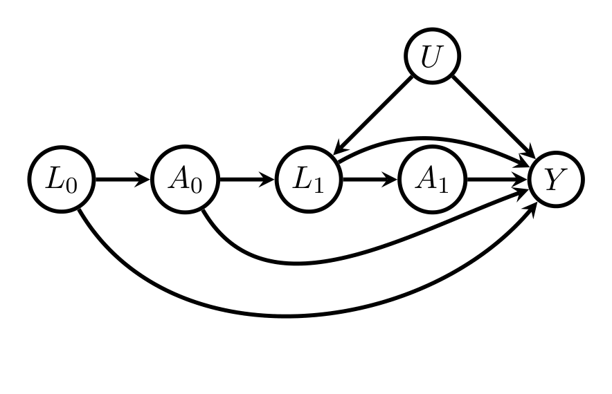
\(\mathcal{G}\)를 정점 집합 \(\mathbf{V}\)의 DAG, \(\mathbf{A} \subset \mathbf{V}\), \(Y \in \mathbf{V} \setminus \mathbf{A}\)라 하자. \(\mathbf{Z} \subset \mathbf{V} \setminus \{\mathbf{A}, Y\}\)가 \(\mathcal{G}\)에서 \((\mathbf{A}, Y)\)에 대한 최소 시간의존(시간독립) 조정집합이라 함은, \(\mathbf{Z}\)가 시간의존(시간독립) 조정집합이면서 \(\mathbf{Z}\)의 어떤 진부분집합도 조정집합이 아닌 경우를 말한다.
4. 개입 평균의 비모수 추정 (Non-parametric Estimation of an Interventional Mean)
4.1 추정 대상과 추정 전략
\(\mathbf{A}\)가 유한집합 \(\mathcal{A}\)에 값을 갖는 변수 벡터이고, 주어진 상수 \(c_{\mathbf{a}}\)에 대해 다음 대비(contrast)를 추정하고자 한다고 합시다.
\[ \Delta \equiv \sum_{\mathbf{a} \in \mathcal{A}} c_{\mathbf{a}} E[Y_{\mathbf{a}}] \]
\(\mathbf{A} = A\)가 이진이고 \(c_1 = 1\), \(c_0 = -1\)이면 이는 정확히 \(\mathrm{ATE}\)입니다.
인과 그래프 모형을 세운 결과 시간독립 조정집합이 존재함을 알았고 그중 하나 \(\mathbf{Z}\)를 골랐다면, 다음을 추정하게 됩니다.
\[ \Delta(P;\mathcal{G}) \equiv \sum_{\mathbf{a} \in \mathcal{A}} c_{\mathbf{a}} \chi_{\mathbf{a}}(P;\mathcal{G}), \qquad \chi_{\mathbf{a}}(P;\mathcal{G}) \equiv E_P\big[E_P[Y \mid \mathbf{A} = \mathbf{a}, \mathbf{Z}]\big] = E_P\big[\pi_{\mathbf{a}}(\mathbf{Z};P)^{-1} I_{\mathbf{a}}(\mathbf{A}) Y\big] \]
이때 모형 \(\mathcal{M}\)은 다음 두 요소에 대해 매끄러움(smoothness) 또는 복잡도(complexity) 가정만 부과합니다.
\[ b_{\mathbf{a}}(\mathbf{Z};P) \equiv E_P[Y \mid \mathbf{A} = \mathbf{a}, \mathbf{Z}] \quad \text{(결과회귀)}, \qquad \pi_{\mathbf{a}}(\mathbf{Z};P) \equiv P[\mathbf{A} = \mathbf{a} \mid \mathbf{Z}] \quad \text{(성향점수)} \]
해당하는 추정 전략의 예:
| 추정량 | 형태 | 출처 |
|---|---|---|
| IPW | \(\hat\chi_{\mathbf{a},\mathrm{IPW}} = P_n[\hat\pi_{\mathbf{a}}(\mathbf{Z})^{-1} I_{\mathbf{a}}(\mathbf{A}) Y]\), \(\hat\pi\)는 급수/커널 추정량 | Hirano et al. (2003) |
| 결과회귀 | \(P_n[\hat b_{\mathbf{a}}(\mathbf{Z})]\), \(\hat b\)는 매끄러운 추정량 | Hahn (1998) |
| 이중강건 | 위 둘을 결합 | Van der Laan & Robins (2003); Chernozhukov et al.; Smucler et al. (2019) |
이 추정 전략은 인과 모형을 오직 조정집합 선택의 길잡이로만 사용하고, 개입 평균 \(\chi_{\mathbf{a}}(P;\mathcal{G})\)에 대해 인과 모형이 담고 있는 나머지 정보는 무시합니다. 이는 실무에서 매우 흔히 채택되는 전략입니다 (Abadie & Cattaneo, 2018; Bottou et al., 2013; Hernán & Robins, 2019).
§6은 바로 이 “무시”의 대가를 계산하는 절입니다.
4.2 NP-\(\mathbf{Z}\) 추정량과 그 영향함수
Robins et al. (1994)의 잘 알려진 결과에 따르면, \(b_{\mathbf{a}}(\mathbf{Z};P)\)와/또는 \(\pi_{\mathbf{a}}(\mathbf{Z};P)\)에 매끄러움·복잡도 가정만 부과하는 모형 \(\mathcal{M}\) 하에서 정칙이고 점근선형인 \(\chi_{\mathbf{a}}(P;\mathcal{G})\)의 추정량 \(\hat\chi_{\mathbf{a},\mathbf{Z}}\)는 유일한 영향함수
\[ \psi_{P,\mathbf{a}}(\mathbf{Z};\mathcal{G}) \equiv \frac{I_{\mathbf{a}}(\mathbf{A})}{\pi_{\mathbf{a}}(\mathbf{Z};P)}\big(Y - b_{\mathbf{a}}(\mathbf{Z};P)\big) + b_{\mathbf{a}}(\mathbf{Z};P) - \chi_{\mathbf{a}}(P;\mathcal{G}) \tag{4} \]
를 갖습니다. (표기 과부하를 피하기 위해 \(\psi_{P,\mathbf{a}}\)의 \((Y, \mathbf{A})\) 의존성은 명시하지 않습니다.)
식 (4)는 이중강건 추정량의 표준적 형태입니다. 세 항이 각각 다음 역할을 합니다.
- \(b_{\mathbf{a}}(\mathbf{Z};P) - \chi_{\mathbf{a}}(P;\mathcal{G})\): 결과회귀 기반 플러그인 부분
- \(\dfrac{I_{\mathbf{a}}(\mathbf{A})}{\pi_{\mathbf{a}}(\mathbf{Z};P)}\big(Y - b_{\mathbf{a}}(\mathbf{Z};P)\big)\): 성향점수로 가중된 잔차 보정 부분
이 두 부분이 \(\mathbf{Z}\)가 주어졌을 때 직교한다는 점이 이후 모든 분산 분해의 출발점이 됩니다. 실제로 \(E_P[\cdot \mid \mathbf{Z}] = 0\)인 임의의 항은 \(\psi_{P,\mathbf{a}}\)와 무상관이며, Lemma 4의 증명이 정확히 이 성질을 씁니다.
따라서 \(\hat\Delta_{\mathbf{Z}} \equiv \sum_{\mathbf{a} \in \mathcal{A}} c_{\mathbf{a}} \hat\chi_{\mathbf{a},\mathbf{Z}}\)의 영향함수는
\[ \psi_{P,\Delta}(\mathbf{Z};\mathcal{G}) = \sum_{\mathbf{a} \in \mathcal{A}} c_{\mathbf{a}} \psi_{P,\mathbf{a}}(\mathbf{Z};\mathcal{G}) \]
입니다. 영향함수 \(\psi_{P,\mathbf{a}}(\mathbf{Z};\mathcal{G})\)를 갖는 \(\chi_{\mathbf{a}}(P;\mathcal{G})\)의 점근선형 추정량을 이후 조정집합 \(\mathbf{Z}\)를 쓰는 비모수 추정량이라 부르고 NP-\(\mathbf{Z}\)로 줄여 씁니다.
이로부터 다음 점근분포를 얻습니다.
\[ \sqrt{n}\{\hat\chi_{\mathbf{a},\mathbf{Z}} - \chi_{\mathbf{a}}(P;\mathcal{G})\} \xrightarrow{d} N\big(0, \sigma^2_{\mathbf{a},\mathbf{Z}}(P)\big), \qquad \sigma^2_{\mathbf{a},\mathbf{Z}}(P) \equiv \mathrm{var}_P[\psi_{P,\mathbf{a}}(\mathbf{Z};\mathcal{G})] \]
\[ \sqrt{n}\{\hat\Delta_{\mathbf{Z}} - \Delta(P;\mathcal{G})\} \xrightarrow{d} N\big(0, \sigma^2_{\Delta,\mathbf{Z}}\big), \qquad \sigma^2_{\Delta,\mathbf{Z}}(P) \equiv \mathrm{var}_P[\psi_{P,\Delta}(\mathbf{Z};\mathcal{G})] \]
4.3 두 개의 자연스러운 질문
Q1 (비교 가능성). 임의의 두 시간독립 조정집합 \(\mathbf{Z}, \mathbf{Z}'\)은 다음 의미에서 비교 가능(comparable)한가? 즉 모든 \(P \in M(\mathcal{G})\)에 대해 \(\sigma^2_{\Delta,\mathbf{Z}} \le \sigma^2_{\Delta,\mathbf{Z}'}\)이거나, 아니면 모든 \(P\)에 대해 그 반대인가?
Q2 (최적성). 임의의 다른 시간독립 조정집합 \(\mathbf{Z}\)에 대해 \[\sigma^2_{\Delta,\mathbf{O}}(P) \le \sigma^2_{\Delta,\mathbf{Z}}(P) \tag{5}\] 를 만족하는 최적 시간독립 조정집합 \(\mathbf{O}\)가 존재하는가?
Henckel et al. (2019)은 (i) 선형 인과 그래프 모형, (ii) \(\Delta = E[Y_{\mathbf{a}} - Y_{\mathbf{a}'}]\) (단 \(\mathbf{a} - \mathbf{a}'\)은 좌표 \(j\)만 1이고 나머지는 0), (iii) \(\Delta\)가 \(Y\)를 \(\mathbf{A}\)와 \(\mathbf{Z}\)에 회귀시킨 OLS에서 \(A_j\)의 계수로 추정될 때에 한해 이 질문에 답했습니다.
- 모든 조정집합이 비교 가능하지는 않습니다.
- 그러나 특정 쌍들을 비교하는 그래프 기준과, 유효 시간독립 조정집합이 존재할 때 집합 \(\mathbf{O}\)를 특성화하는 그래프 기준을 제시했습니다.
- 특히 점 개입 \(\mathbf{A} = A\)에 대해서는 그 기준이 항상 최적 유효 시간독립 조정집합을 반환합니다.
§5.1에서 이 논문이 증명하는 것: 위와 동일한 그래프 기준이 선형성을 가정하지 않는 임의의 인과 그래프 모형과 임의의 대비 \(\Delta\)에 대한 NP-\(\mathbf{Z}\) 추정량에 대해서도 유효합니다. 나아가 점 개입 \(\mathbf{A} = A\)에 대해서는 \(\mathbf{O}\)에 포함되는 최소 조정집합 \(\mathbf{O}_{\min}\)이 존재하여, 임의의 다른 최소 조정집합 \(\mathbf{Z}_{\min}\)에 대해
\[ \sigma^2_{\Delta,\mathbf{O}_{\min}}(P) \le \sigma^2_{\Delta,\mathbf{Z}_{\min}}(P) \tag{6} \]
가 성립합니다. 여기서 \(\sigma^2_{\Delta,\mathbf{Z}_{\min}}(P)\)는 NP-\(\mathbf{Z}_{\min}\) 추정량의 점근분산이든, Henckel et al. (2019)의 OLS 처치효과 추정량의 점근분산이든 상관없이 성립합니다. 또한 van der Zander & Liskiewicz (2019)의 도구를 쓰면 \(\mathbf{O}\)와 \(\mathbf{O}_{\min}\)을 다항시간에 계산할 수 있습니다.
4.4 결합 개입에서의 대응물
\(\mathbf{A} = (A_0, \dots, A_p)\)가 \(p > 0\)인 결합 개입인 경우도 유사하게 설정합니다. 예컨대 \(p = 1\)일 때 다음을 추정합니다.
\[ \begin{aligned} \chi_{a_0,a_1}(P;\mathcal{G}) &\equiv E_P\big\{ E_P[E_P[Y \mid A_0 = a_0, A_1 = a_1, \mathbf{Z}_0, \mathbf{Z}_1] \mid A_0 = a_0, \mathbf{Z}_0] \big\} \\ &= E_P\left[ \frac{I_{a_0}(A_0)}{P[A_0 = a_0 \mid \mathbf{Z}_0]} \cdot \frac{I_{a_1}(A_1)}{P[A_1 = a_1 \mid A_0 = a_0, \mathbf{Z}_0, \mathbf{Z}_1]} Y \right] \end{aligned} \]
모형 \(\mathcal{M}\)은 다음 요소들에 대해서만 가정을 둡니다 (Van der Laan & Robins, 2003).
\[ \begin{aligned} b_{a_0,a_1}(\mathbf{Z}_0, \mathbf{Z}_1;P) &\equiv E_P[Y \mid A_0 = a_0, A_1 = a_1, \mathbf{Z}_0, \mathbf{Z}_1] \\ b_{a_0}(\mathbf{Z}_0;P) &\equiv E_P[b_{a_0,a_1}(\mathbf{Z}_0, \mathbf{Z}_1;P) \mid A_0 = a_0, \mathbf{Z}_0] \\ \pi_{a_0,a_1}(\mathbf{Z}_0, \mathbf{Z}_1;P) &\equiv P[A_1 = a_1 \mid A_0 = a_0, \mathbf{Z}_0, \mathbf{Z}_1], \qquad \pi_{a_0}(\mathbf{Z}_0;P) \equiv P[A_0 = a_0 \mid \mathbf{Z}_0] \end{aligned} \]
시간독립 경우와 마찬가지로 모든 시간의존 조정집합이 균일하게 비교 가능하지는 않습니다. §5.2에서 특정 쌍을 비교하는 기준을 일반화하되, 시간의존 조정집합은 항상 존재함에도 불구하고 균일 최적 조정집합이 존재하지 않는 DAG가 있음을 예시로 보입니다.
5. 조정집합의 비교 (Comparison of Adjustment Sets)
§5.1에서는 Henckel et al. (2019)의 시간독립 조정집합 비교 기준과 최적 조정집합 식별 기준이 비모수 추정에서도 유효함을 보이고, §5.2에서는 시간의존 조정집합에 대한 결과를 제시합니다.
5.1 시간독립 조정집합 (Time Independent Adjustment Sets)
논증의 뼈대는 다음 두 보조정리입니다. 조정집합을 바꾸는 행위는 언제나 정밀 변수를 더하는 것과 과대조정 변수를 빼는 것의 합으로 분해되며, 두 연산 모두 분산을 줄인다는 것이 요지입니다.
5.1.1 Lemma 4 — 시간독립 정밀 변수의 보충
\(\mathcal{G}\)를 정점 집합 \(\mathbf{V}\)의 DAG, \(\mathbf{A} \subset \mathbf{V}\), \(Y \in \mathbf{V} \setminus \mathbf{A}\)라 하고 \(\mathbf{A}\)는 유한집합에 값을 갖는 확률벡터라 하자. \(\mathbf{B} \subset \mathbf{V} \setminus \{\mathbf{A}, Y\}\)가 \(\mathcal{G}\)에서 \((\mathbf{A}, Y)\)에 대한 시간독립 조정집합이고, \(\mathbf{B}\)와 서로소인 집합 \(\mathbf{G}\)가
\[ \mathbf{A} \perp\!\!\!\perp_{\mathcal{G}} \mathbf{G} \mid \mathbf{B} \]
를 만족한다고 하자. 그러면 \((\mathbf{G}, \mathbf{B})\) 역시 \((\mathbf{A}, Y)\)에 대한 시간독립 조정집합이며, 모든 \(P \in M(\mathcal{G})\)에 대해
\[ \sigma^2_{\mathbf{a},\mathbf{B}}(P) - \sigma^2_{\mathbf{a},\mathbf{G},\mathbf{B}}(P) = E_P\left[ \left\{ \frac{1}{\pi_{\mathbf{a}}(\mathbf{B};P)} - 1 \right\} \mathrm{var}_P\big[b_{\mathbf{a}}(\mathbf{G}, \mathbf{B};P) \mid \mathbf{B}\big] \right] \ge 0 \tag{7} \]
이 성립한다. 나아가 \(\mathbf{c} \equiv (c_{\mathbf{a}})_{\mathbf{a} \in \mathcal{A}}\), \(\mathbf{Q} \equiv [Q_{\mathbf{a}}]_{\mathbf{a} \in \mathcal{A}}\)에 대해
\[ \sigma^2_{\Delta,\mathbf{B}}(P) - \sigma^2_{\Delta,\mathbf{G},\mathbf{B}}(P) = \mathbf{c}^T \mathrm{var}_P(\mathbf{Q})\, \mathbf{c} \ge 0 \]
이며, 여기서
\[ Q_{\mathbf{a}} \equiv \left\{ \frac{I_{\mathbf{a}}(\mathbf{A})}{\pi_{\mathbf{a}}(\mathbf{G}, \mathbf{B};P)} - 1 \right\} \{b_{\mathbf{a}}(\mathbf{G}, \mathbf{B};P) - b_{\mathbf{a}}(\mathbf{B};P)\} \]
\[ \mathrm{var}_P(Q_{\mathbf{a}}) = E_P\left[ \left\{\frac{1}{\pi_{\mathbf{a}}(\mathbf{B};P)} - 1\right\} \mathrm{var}_P\big(b_{\mathbf{a}}(\mathbf{G},\mathbf{B};P) \mid \mathbf{B}\big) \right], \quad \mathrm{cov}_P[Q_{\mathbf{a}}, Q_{\mathbf{a}'}] = -E_P\big[\mathrm{cov}_P\{b_{\mathbf{a}}(\mathbf{G},\mathbf{B};P), b_{\mathbf{a}'}(\mathbf{G},\mathbf{B};P) \mid \mathbf{B}\}\big] \ (\mathbf{a} \ne \mathbf{a}') \]
이다. 특히 ATE의 경우
\[ \begin{aligned} \sigma^2_{\mathrm{ATE},\mathbf{B}}(P) - \sigma^2_{\mathrm{ATE},\mathbf{G},\mathbf{B}}(P) &= E_P\left[\left\{\frac{1}{\pi_{a=1}(\mathbf{B};P)} - 1\right\} \mathrm{var}_P(b_{a=1}(\mathbf{G},\mathbf{B};P) \mid \mathbf{B})\right] \\ &\quad + E_P\left[\left\{\frac{1}{\pi_{a=0}(\mathbf{B};P)} - 1\right\} \mathrm{var}_P(b_{a=0}(\mathbf{G},\mathbf{B};P) \mid \mathbf{B})\right] \\ &\quad - 2 E_P\big[\mathrm{cov}_P\{b_{a=1}(\mathbf{G},\mathbf{B};P), b_{a=0}(\mathbf{G},\mathbf{B};P) \mid \mathbf{B}\}\big] \ \ge 0 \end{aligned} \]
이다.
식 (7)의 단계별 유도
원문은 부록 A.1에 증명을 두고 있으니, 가정 → 정의 → 중간 단계 → 최종식 흐름으로 풀어 보겠습니다.
1단계 (가정을 성향점수로 번역). \(\mathbf{A} \perp\!\!\!\perp_{\mathcal{G}} \mathbf{G} \mid \mathbf{B}\)이므로 \(\mathbf{G}\)는 \(\mathbf{B}\)가 주어졌을 때 처치 배정에 아무런 추가 정보를 주지 않습니다. 즉
\[ \pi_{\mathbf{a}}(\mathbf{G}, \mathbf{B};P) = \pi_{\mathbf{a}}(\mathbf{B};P) \tag{24} \]
2단계 (\((\mathbf{G},\mathbf{B})\)도 조정집합임). (24)에 의해 모든 \(P \in M(\mathcal{G})\)에 대해
\[ E_P\left[\frac{I_{\mathbf{a}}(\mathbf{A})Y}{\pi_{\mathbf{a}}(\mathbf{G},\mathbf{B};P)}\right] = E_P\left[\frac{I_{\mathbf{a}}(\mathbf{A})Y}{\pi_{\mathbf{a}}(\mathbf{B};P)}\right] = \chi_{\mathbf{a}}(P;\mathcal{G}) \]
이며, 마지막 등식은 \(\mathbf{B}\)가 조정집합이라는 가정에서 옵니다. 따라서 \((\mathbf{G},\mathbf{B})\)도 조정집합입니다.
3단계 (영향함수의 분해). (4)의 정의에 (24)를 대입하면
\[ \psi_{P,\mathbf{a}}(\mathbf{B};\mathcal{G}) = \psi_{P,\mathbf{a}}(\mathbf{G},\mathbf{B};\mathcal{G}) + \left[\frac{I_{\mathbf{a}}(\mathbf{A})}{\pi_{\mathbf{a}}(\mathbf{G},\mathbf{B};P)} - 1\right]\big[b_{\mathbf{a}}(\mathbf{G},\mathbf{B};P) - b_{\mathbf{a}}(\mathbf{B};P)\big] \]
4단계 (두 항의 직교성). \(E_P[g(\mathbf{A}, \mathbf{G}, \mathbf{B}) \mid \mathbf{G}, \mathbf{B}] = 0\)인 임의의 \(g\)에 대해
\[ E_P\{\psi_{P,\mathbf{a}}[\mathbf{G},\mathbf{B};\mathcal{G}]\, g(\mathbf{A}, \mathbf{G}, \mathbf{B})\} = 0 \tag{25} \]
이 성립하고, 3단계 두 번째 항은 \(\mathbf{G},\mathbf{B}\)가 주어졌을 때 조건부 평균이 0이므로 두 항은 무상관입니다. 따라서 분산이 그대로 더해집니다.
\[ \sigma^2_{\mathbf{a},\mathbf{B}}(P) = \sigma^2_{\mathbf{a},\mathbf{G},\mathbf{B}}(P) + \mathrm{var}_P\left[\left\{\frac{I_{\mathbf{a}}(\mathbf{A})}{\pi_{\mathbf{a}}(\mathbf{G},\mathbf{B};P)} - 1\right\}\{b_{\mathbf{a}}(\mathbf{G},\mathbf{B};P) - b_{\mathbf{a}}(\mathbf{B};P)\}\right] \tag{26} \]
5단계 (두 번째 항의 계산). \(b_{\mathbf{a}}(\mathbf{B};P) = E_P[b_{\mathbf{a}}(\mathbf{G},\mathbf{B};P) \mid \mathbf{A} = \mathbf{a}, \mathbf{B}] = E_P[b_{\mathbf{a}}(\mathbf{G},\mathbf{B};P) \mid \mathbf{B}]\) (마지막 등식은 다시 \(\mathbf{A} \perp\!\!\!\perp_{\mathcal{G}} \mathbf{G} \mid \mathbf{B}\))임을 이용해 조건부 분산으로 반복 기댓값을 취하면
\[ \sigma^2_{\mathbf{a},\mathbf{B}}(P) - \sigma^2_{\mathbf{a},\mathbf{G},\mathbf{B}}(P) = E_P\left\{ \mathrm{var}_P\big(b_{\mathbf{a}}(\mathbf{G},\mathbf{B};P) \mid \mathbf{B}\big)\left[\frac{1}{\pi_{\mathbf{a}}(\mathbf{B};P)} - 1\right] \right\} \]
를 얻습니다. 두 인자 모두 비음이므로 차이는 항상 \(\ge 0\)입니다. \(\blacksquare\)
\(\mathbf{B} = \emptyset\)인 특수한 경우의 (7)은 Robins & Rotnitzky (1992)와 Hahn (1998)에서 유도되었습니다. 이 공식은 조정집합에 ‘정밀(precision)’ 변수 — 처치 수준 내에서 결과를 예측하는 데 도움이 되지만, 이미 존재하는 조정집합을 통제한 뒤에는 처치와 무관한 변수 — 를 보충함으로써 얻는 분산 감소를 정량화합니다.
- \(\mathrm{var}_P[b_{\mathbf{a}}(\mathbf{G},\mathbf{B};P) \mid \mathbf{B}]\)는 \(\mathbf{B}\)로 조정한 뒤 \(\mathbf{G}\)가 \(Y\)에 대해 추가로 지니는 설명력을 재는 양입니다.
- \(\{1/\pi_{\mathbf{a}}(\mathbf{B};P) - 1\}\)은 항상 0보다 크며, \(\mathbf{B}\)와 \(\mathbf{A}\)의 주변 연관이 강할수록 변동이 커지고 따라서 큰 값을 갖는 경향이 있습니다.
Figure 2의 DAG에서 \(\mathbf{B} = \{B\}\), \(\mathbf{G} = \{G\}\)가 Lemma 4의 조건을 만족합니다. 그 DAG에서 \(\mathrm{var}_P[b_{\mathbf{a}}(\mathbf{G},\mathbf{B};P) \mid \mathbf{B}]\)는 빨간 엣지의 연관이 강해지고 초록 엣지의 연관이 약해질수록 증가하며, \(\{1/\pi_{\mathbf{a}}(\mathbf{B};P) - 1\}\)은 파란 엣지의 연관이 강할수록 커집니다.
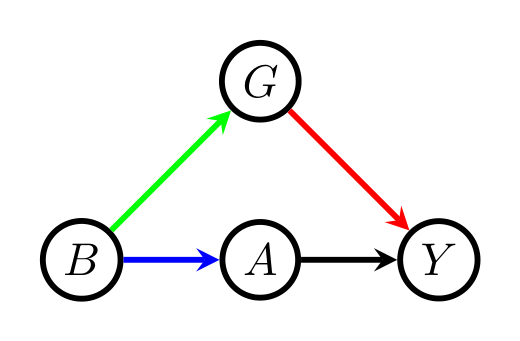
5.1.2 Lemma 5 — 시간독립 과대조정 변수의 제거
\(\mathcal{G}\)를 정점 집합 \(\mathbf{V}\)의 DAG, \(\mathbf{A} \subset \mathbf{V}\), \(Y \in \mathbf{V} \setminus \mathbf{A}\)라 하고 \(\mathbf{A}\)는 유한집합에 값을 갖는다고 하자. \((\mathbf{G} \cup \mathbf{B}) \subset \mathbf{V} \setminus \{\mathbf{A}, Y\}\)가 \((\mathbf{A}, Y)\)에 대한 시간독립 조정집합이고 \(\mathbf{G}\)와 \(\mathbf{B}\)가 서로소이며
\[ Y \perp\!\!\!\perp_{\mathcal{G}} \mathbf{B} \mid \mathbf{G}, \mathbf{A} \]
라 하자. 그러면 \(\mathbf{G}\) 역시 \((\mathbf{A}, Y)\)에 대한 조정집합이며, 모든 \(P \in M(\mathcal{G})\)에 대해
\[ \sigma^2_{\mathbf{a},\mathbf{G},\mathbf{B}}(P) - \sigma^2_{\mathbf{a},\mathbf{G}}(P) = E_P\left[ \pi_{\mathbf{a}}(\mathbf{G};P)\, \mathrm{var}_P(Y \mid \mathbf{A} = \mathbf{a}, \mathbf{G})\, \mathrm{var}_P\left( \frac{1}{\pi_{\mathbf{a}}(\mathbf{G}, \mathbf{B};P)} \,\middle|\, \mathbf{A} = \mathbf{a}, \mathbf{G} \right) \right] \ge 0 \tag{8} \]
가 성립한다. 나아가
\[ \sigma^2_{\Delta,\mathbf{G},\mathbf{B}}(P) - \sigma^2_{\Delta,\mathbf{G}}(P) = \sum_{\mathbf{a} \in \mathcal{A}} c_{\mathbf{a}}^2\, E_P\left\{ \pi_{\mathbf{a}}(\mathbf{G};P)\, \mathrm{var}_P(Y \mid \mathbf{A} = \mathbf{a}, \mathbf{G})\, \mathrm{var}_P\left[ \frac{1}{\pi_{\mathbf{a}}(\mathbf{G},\mathbf{B};P)} \,\middle|\, \mathbf{A} = \mathbf{a}, \mathbf{G} \right] \right\} \ge 0 \]
이며, ATE의 경우 \(\mathbf{a} = 0\)과 \(\mathbf{a} = 1\)에 해당하는 두 항의 합이 된다.
원문 Lemma 5의 “Furthermore” 이하 디스플레이에서 좌변이 \(\sigma^2_{\Delta,\mathbf{G},\mathbf{B}}(P) - \sigma^2_{\Delta,\mathbf{B}}(P)\)로 인쇄되어 있고, 이어지는 ATE 디스플레이에서도 좌변의 첨자 순서와 우변 둘째 항의 \(\pi_{a=0}\)이 각각 \(\sigma^2_{\mathrm{ATE},\mathbf{G},\mathbf{B}} - \sigma^2_{\mathrm{ATE},\mathbf{G}}\) 및 \(\pi_{a=1}\)이어야 문맥과 맞습니다. 위 정리 상자에는 문맥상 옳은 형태로 적었습니다. 원문의 형태와 다르게 쓴 자리는 이 지점뿐입니다.
식 (8)의 단계별 유도
1단계 (가정을 결과회귀로 번역). \(Y \perp\!\!\!\perp_{\mathcal{G}} \mathbf{B} \mid \mathbf{A}, \mathbf{G}\)이므로
\[ b_{\mathbf{a}}(\mathbf{G}, \mathbf{B};P) \equiv E_P(Y \mid \mathbf{A} = \mathbf{a}, \mathbf{G}, \mathbf{B}) = E_P(Y \mid \mathbf{A} = \mathbf{a}, \mathbf{G}) \equiv b_{\mathbf{a}}(\mathbf{G};P) \tag{27} \]
2단계 (\(\mathbf{G}\)도 조정집합임). (27)에서 \(E_P[b_{\mathbf{a}}(\mathbf{G};P)] = E_P[b_{\mathbf{a}}(\mathbf{G},\mathbf{B};P)] = \chi_{\mathbf{a}}(P;\mathcal{G})\)이고, 마지막 등식은 \((\mathbf{G},\mathbf{B})\)가 조정집합이라는 가정에서 옵니다.
3단계 (조건부 기댓값이 더 작은 조정집합의 영향함수).
\[ \begin{aligned} E_P[\psi_{P,\mathbf{a}}(\mathbf{G},\mathbf{B};\mathcal{G}) \mid \mathbf{A}, Y, \mathbf{G}] &= I_{\mathbf{a}}(\mathbf{A})\{Y - b_{\mathbf{a}}(\mathbf{G};P)\} E_P\left[\frac{1}{\pi_{\mathbf{a}}(\mathbf{G},\mathbf{B};P)} \,\middle|\, \mathbf{A} = \mathbf{a}, \mathbf{G}\right] + \{b_{\mathbf{a}}(\mathbf{G};P) - \chi_{\mathbf{a}}(P;\mathcal{G})\} \\ &= \frac{I_{\mathbf{a}}(\mathbf{A})}{\pi_{\mathbf{a}}(\mathbf{G};P)}\{Y - b_{\mathbf{a}}(\mathbf{G};P)\} + \{b_{\mathbf{a}}(\mathbf{G};P) - \chi_{\mathbf{a}}(P;\mathcal{G})\} = \psi_{P,\mathbf{a}}(\mathbf{G};\mathcal{G}) \end{aligned} \tag{28} \]
여기서 마지막 등식은 부록 A.4의 Lemma 27(\(\mathbf{A} \perp\!\!\!\perp_{\mathcal{G}} \mathbf{Z}_1 \setminus \mathbf{Z}_2 \mid \mathbf{Z}_2\)이면 \(E_P[1/\pi_{\mathbf{a}}(\mathbf{Z}_2;P) \mid \mathbf{A} = \mathbf{a}, \mathbf{Z}_1] = 1/\pi_{\mathbf{a}}(\mathbf{Z}_1;P)\))을 적용해 얻습니다.
4단계 (조건부 분산의 기댓값).
\[ E_P\big[\mathrm{var}_P[\psi_{P,\mathbf{a}}(\mathbf{G},\mathbf{B};\mathcal{G}) \mid \mathbf{A}, Y, \mathbf{G}]\big] = E_P\left\{ \pi_{\mathbf{a}}(\mathbf{G};P)\, \mathrm{var}_P(Y \mid \mathbf{A} = \mathbf{a}, \mathbf{G})\, \mathrm{var}_P\left[\frac{1}{\pi_{\mathbf{a}}(\mathbf{G},\mathbf{B};P)} \,\middle|\, \mathbf{A} = \mathbf{a}, \mathbf{G}\right] \right\} \]
5단계 (전분산 공식). \(\mathrm{var} = \mathrm{var}(E[\cdot \mid \cdot]) + E[\mathrm{var}(\cdot \mid \cdot)]\)에 3·4단계를 대입하면
\[ \sigma^2_{\mathbf{a},\mathbf{G},\mathbf{B}}(P) = \sigma^2_{\mathbf{a},\mathbf{G}}(P) + E_P\left\{ \pi_{\mathbf{a}}(\mathbf{G};P)\, \mathrm{var}_P(Y \mid \mathbf{A} = \mathbf{a}, \mathbf{G})\, \mathrm{var}_P\left[\frac{1}{\pi_{\mathbf{a}}(\mathbf{G},\mathbf{B};P)} \,\middle|\, \mathbf{A}, \mathbf{G}\right] \right\} \]
를 얻어 (8)이 증명됩니다. \(\blacksquare\)
식 (8)은 ‘과대조정(overadjustment)’ 변수 — 처치와는 주변적으로 연관되어 있으나 처치 수준과 나머지 조정 변수를 통제한 뒤에는 결과를 예측하는 데 도움이 되지 않는 변수 — 를 남겨 둠으로써 증가하는 분산을 정량화합니다. 이는 선형회귀에서 결과와 부분상관이 없는 공변량을 추가할 때 분산이 커진다는 잘 이해된 현상 (Cochran, 1968)의 비모수적 확장이며, 여러 비선형 회귀 상황에서도 관찰되어 왔습니다 (Mantel & Haenszel, 1959; Breslow, 1982; Gail, 1988; Robinson & Jewell, 1991; Neuhaeuser & Becher, 1997; De Stavola & Cox, 2008).
- \(\mathrm{var}_P(Y \mid \mathbf{A} = \mathbf{a}, \mathbf{G})\)가 0이면 — 즉 \(\mathbf{G}\)가 \(Y\)의 완벽한 예측자이면 — 공식은 과대조정 변수 \(\mathbf{B}\)를 남기든 말든 무관함을 알려 줍니다.
- 일반적으로 \(\mathbf{B}\)는 처치 수준 내에서 \(\mathbf{G}\)와 \(Y\)의 연관이 약할수록 더 해롭습니다. Figure 2에서는 빨간 화살표의 연관이 약해질수록 벌칙이 커집니다.
- \(\mathrm{var}_P(1/\pi_{\mathbf{a}}(\mathbf{G},\mathbf{B};P) \mid \mathbf{A} = \mathbf{a}, \mathbf{G})\)는 \(\mathbf{G}\)와 \(\mathbf{B}\)의 연관이 약할수록, \(\mathbf{B}\)와 \(\mathbf{A}\)의 연관이 강할수록 \(\mathbf{B}\)가 더 해로움을 보여 줍니다. Figure 2에서는 초록 화살표가 약하고 파란 화살표가 강할수록 그렇습니다.
5.1.3 Theorem 6 — 두 조정집합을 비교하는 그래프 기준
\(\mathcal{G}\)를 정점 집합 \(\mathbf{V}\)의 DAG, \(\mathbf{A} \subset \mathbf{V}\), \(Y \in \mathbf{V} \setminus \mathbf{A}\)라 하고 \(\mathbf{A}\)는 유한집합에 값을 갖는다고 하자. \(\mathbf{G}, \mathbf{B} \subset \mathbf{V} \setminus \{\mathbf{A}, Y\}\)가 \((\mathbf{A}, Y)\)에 대한 두 시간독립 조정집합으로서
\[ \mathbf{A} \perp\!\!\!\perp_{\mathcal{G}} [\mathbf{G} \setminus \mathbf{B}] \mid \mathbf{B} \tag{9} \] \[ Y \perp\!\!\!\perp_{\mathcal{G}} [\mathbf{B} \setminus \mathbf{G}] \mid \mathbf{G}, \mathbf{A} \tag{10} \]
를 만족한다고 하자. 그러면 모든 \(P \in M(\mathcal{G})\)에 대해 \(\sigma^2_{\mathbf{a},\mathbf{B}}(P) - \sigma^2_{\mathbf{a},\mathbf{G}}(P) \ge 0\)이며, 구체적으로
\[ \begin{aligned} \sigma^2_{\mathbf{a},\mathbf{B}}(P) - \sigma^2_{\mathbf{a},\mathbf{G}}(P) &= E_P\left[\left\{\frac{1}{\pi_{\mathbf{a}}(\mathbf{B};P)} - 1\right\} \mathrm{var}_P[b_{\mathbf{a}}(\mathbf{G},\mathbf{B};P) \mid \mathbf{B}]\right] \\ &\quad + E_P\left[\pi_{\mathbf{a}}(\mathbf{G};P)\,\mathrm{var}_P(Y \mid \mathbf{A} = \mathbf{a}, \mathbf{G})\,\mathrm{var}_P\left(\frac{1}{\pi_{\mathbf{a}}(\mathbf{G},\mathbf{B};P)} \,\middle|\, \mathbf{A} = \mathbf{a}, \mathbf{G}\right)\right] \end{aligned} \]
이다. 나아가 모든 \(P \in M(\mathcal{G})\)에 대해 \(\sigma^2_{\Delta,\mathbf{B}}(P) - \sigma^2_{\Delta,\mathbf{G}}(P) \ge 0\)이고
\[ \sigma^2_{\Delta,\mathbf{B}}(P) - \sigma^2_{\Delta,\mathbf{G}}(P) = \mathbf{c}^T \mathrm{var}_P(\mathbf{Q})\mathbf{c} + \sum_{\mathbf{a} \in \mathcal{A}} c_{\mathbf{a}}^2 E_P\left\{\pi_{\mathbf{a}}(\mathbf{G};P)\mathrm{var}_P(Y \mid \mathbf{A} = \mathbf{a}, \mathbf{G})\mathrm{var}_P\left[\frac{1}{\pi_{\mathbf{a}}(\mathbf{G},\mathbf{B};P)} \,\middle|\, \mathbf{A} = \mathbf{a}, \mathbf{G}\right]\right\} \]
이다 (\(\mathbf{Q}\)는 Lemma 4에서와 같이 정의). ATE의 경우도 대응하는 공식이 성립한다.
증명 (원문 그대로). 다음과 같이 쓰고
\[ \sigma^2_{\mathbf{a},\mathbf{B}}(P) - \sigma^2_{\mathbf{a},\mathbf{G}}(P) = \underbrace{\sigma^2_{\mathbf{a},\mathbf{B}}(P) - \sigma^2_{\mathbf{a},\mathbf{B} \cup (\mathbf{G} \setminus \mathbf{B})}(P)}_{\text{Lemma 4}} + \underbrace{\sigma^2_{\mathbf{a},\mathbf{G} \cup (\mathbf{B} \setminus \mathbf{G})}(P) - \sigma^2_{\mathbf{a},\mathbf{G}}(P)}_{\text{Lemma 5}} \]
Lemma 4와 Lemma 5를 각각 적용하면 됩니다. \(\blacksquare\)
\(\mathbf{B} \cup (\mathbf{G} \setminus \mathbf{B}) = \mathbf{G} \cup (\mathbf{B} \setminus \mathbf{G}) = \mathbf{G} \cup \mathbf{B}\)이므로, 두 조정집합의 비교는 “합집합을 경유하는” 두 걸음으로 분해됩니다.
- \(\sigma^2_{\mathbf{a},\mathbf{B}} - \sigma^2_{\mathbf{a},\mathbf{B} \cup (\mathbf{G}\setminus\mathbf{B})}\): \(\mathbf{B}\)에 정밀 성분 \(\mathbf{G} \setminus \mathbf{B}\)를 보충하여 얻는 이득
- \(\sigma^2_{\mathbf{a},\mathbf{G} \cup (\mathbf{B}\setminus\mathbf{G})} - \sigma^2_{\mathbf{a},\mathbf{G}}\): \(\mathbf{G} \cup \mathbf{B}\)에서 과대조정 성분 \(\mathbf{B} \setminus \mathbf{G}\)를 제거하여 얻는 이득
즉 (9)는 “\(\mathbf{G}\)의 추가분은 순수한 정밀 변수다”, (10)은 “\(\mathbf{B}\)의 추가분은 순수한 과대조정 변수다”를 각각 그래프 조건으로 표현한 것입니다.
선행 연구와의 대응관계:
| 이 논문 | Henckel et al. (2019)의 대응 결과 | 차이 |
|---|---|---|
| Theorem 6 | Theorem 3.10 | 선형 모형 → 임의의 인과 그래프 모형, OLS → NP-\(\mathbf{Z}\) 추정량 |
| Lemma 4 | Corollary 3.4 | 동일 |
| Lemma 5 | Corollary 3.5 | 동일 |
가지치기 절차의 확장: Henckel et al. (2019)은 Corollary 3.5 위에서, 유효 조정집합을 받아 점근분산이 더 작은 OLS 추정량을 주는 가지친 유효 조정집합을 반환하는 간단한 절차를 제시했습니다. 그 절차의 타당성은 Corollary 3.5의 d-분리 가정이 함의하는 두 조정집합의 점근분산 순서에만 의존하고, 이 논문이 그 순서가 NP-\(\mathbf{Z}\) 추정량의 분산에 대해서도 성립함을 보였으므로, 가지치기 알고리즘 역시 NP-\(\mathbf{Z}\) 추정량의 점근분산을 줄이는 가지친 유효 조정집합을 반환한다는 결론이 따라 나옵니다.
5.1.4 모든 쌍이 비교 가능한 것은 아니다 (Example 2)
Henckel et al. (2019)이 지적했듯, Theorem 6의 d-분리 조건으로 모든 유효 시간독립 조정집합 쌍을 순서 지을 수는 없습니다. 실제로 어떤 \(P \in M(\mathcal{G})\)에 대해서는 \(\sigma^2_{\mathbf{a},\mathbf{Z}}(P) > \sigma^2_{\mathbf{a},\tilde{\mathbf{Z}}}(P)\)이고 다른 \(P' \in M(\mathcal{G})\)에 대해서는 \(\sigma^2_{\mathbf{a},\tilde{\mathbf{Z}}}(P') > \sigma^2_{\mathbf{a},\mathbf{Z}}(P')\)인 DAG가 존재합니다.
Example 2. Figure 3의 DAG에서 \(\mathbf{Z} = \{O_1, W_2\}\)와 \(\tilde{\mathbf{Z}} = \{O_2, W_1\}\)은 \((A, Y)\)에 대한 시간독립 조정집합입니다. 초록 엣지의 연관이 갈색 엣지보다 강하고, 파란 엣지의 연관이 빨간 엣지보다 약하면 \(\mathbf{Z}\)가 \(\tilde{\mathbf{Z}}\)보다 작은 점근분산을 줍니다. 대칭성에 의해 앞 문장에서 “강하다”와 “약하다”를 맞바꾸면 \(\tilde{\mathbf{Z}}\)가 \(\mathbf{Z}\)보다 효율적입니다.
Henckel et al. (2019)도 모든 시간독립 조정집합을 점근분산으로 순서 지을 수 없음을 예시했으나, 그들의 다이어그램은 처치가 교란되지 않은(unconfounded) 것이어서 Figure 3과 다릅니다.
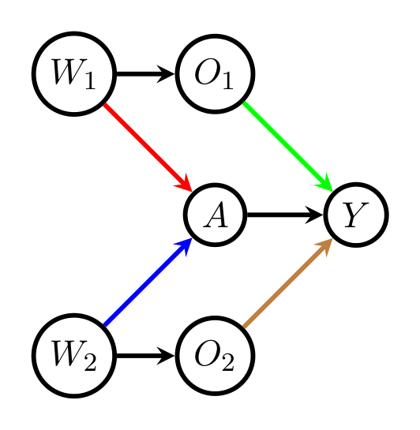
5.1.5 최적 조정집합 \(\mathbf{O}(\mathbf{A}, Y, \mathcal{G})\)
Henckel et al. (2019)을 따라, \(\mathrm{cn}(\mathbf{A}, Y, \mathcal{G})\)를 \(\mathbf{A}\)의 어떤 노드와 \(Y\) 사이의 인과 경로 위에 놓이면서 \(\mathbf{A}\)의 어떤 노드와도 같지 않은 모든 노드의 집합이라 하고, 금지 집합(forbidden set)과 최적 조정집합을 다음으로 정의합니다.
\[ \mathrm{forb}(\mathbf{A}, Y, \mathcal{G}) \equiv \mathrm{de}_{\mathcal{G}}\big(\mathrm{cn}(\mathbf{A}, Y, \mathcal{G})\big) \cup \{\mathbf{A}\} \]
\[ \mathbf{O}(\mathbf{A}, Y, \mathcal{G}) \equiv \mathrm{pa}_{\mathcal{G}}\big(\mathrm{cn}(\mathbf{A}, Y, \mathcal{G})\big) \setminus \mathrm{forb}(\mathbf{A}, Y, \mathcal{G}) \]
Henckel et al. (2019)은 (i) \((\mathbf{A}, Y)\)에 대한 시간독립 조정집합이 존재하면 \(\mathbf{O}(\mathbf{A},Y,\mathcal{G})\)가 Shpitser et al. (2010)의 필요충분 그래프 조건을 만족함을, (ii) 그들의 Lemmas E.4와 E.5에서 \(\mathbf{G} = \mathbf{O}(\mathbf{A},Y,\mathcal{G})\)와 임의의 조정집합 \(\mathbf{B}\)에 대해 조건 (9)와 (10)이 성립함을 보였습니다. 이로부터 Theorem 6의 중요한 따름정리를 얻습니다.
\(\mathcal{G}\)를 정점 집합 \(\mathbf{V}\)의 DAG, \(\mathbf{A} \subset \mathbf{V}\), \(Y \in \mathbf{V} \setminus \mathbf{A}\)라 하고 \(\mathbf{A}\)는 유한집합에 값을 갖는다고 하자. \((\mathbf{A}, Y)\)에 대한 유효 시간독립 조정집합 \(\mathbf{Z}\)가 존재하면, \(\mathbf{O} = \mathbf{O}(\mathbf{A},Y,\mathcal{G})\)는 시간독립 조정집합이며 모든 \(P \in M(\mathcal{G})\)에 대해 \(\sigma^2_{\mathbf{a},\mathbf{Z}}(P) - \sigma^2_{\mathbf{a},\mathbf{O}}(P) \ge 0\)이다. 구체적으로
\[ \begin{aligned} \sigma^2_{\mathbf{a},\mathbf{Z}}(P) - \sigma^2_{\mathbf{a},\mathbf{O}}(P) &= E_P\left[\left\{\frac{1}{\pi_{\mathbf{a}}(\mathbf{Z};P)} - 1\right\}\mathrm{var}_P[b_{\mathbf{a}}(\mathbf{O}, \mathbf{Z};P) \mid \mathbf{Z}]\right] \\ &\quad + E_P\left[\pi_{\mathbf{a}}(\mathbf{O};P)\,\mathrm{var}_P(Y \mid \mathbf{A} = \mathbf{a}, \mathbf{O})\,\mathrm{var}_P\left(\frac{1}{\pi_{\mathbf{a}}(\mathbf{O},\mathbf{Z};P)} \,\middle|\, \mathbf{A} = \mathbf{a}, \mathbf{O}\right)\right] \end{aligned} \]
이며, \(\Delta\)와 ATE에 대해서도 대응하는 공식이 성립한다.
Corollary 8. \(\mathbf{A} = A\)가 점 개입이면 \(\mathbf{O}(A, Y, \mathcal{G})\)는 최적 유효 시간독립 조정집합이다.
Corollary 8은 Theorem 7과 \(\mathrm{pa}_{\mathcal{G}}(A)\)가 항상 \((A,Y)\)에 대한 유효 시간독립 조정집합이라는 사실로부터 즉시 따라 나옵니다. (즉 점 개입에서는 유효 조정집합의 존재가 보장되므로 Theorem 7의 전제가 자동으로 충족됩니다.)
Example 3. Figure 3의 DAG에서 \(\mathbf{O}(A, Y, \mathcal{G}) = (O_1, O_2)\)가 최적 조정집합입니다.
계산 복잡도: van der Zander & Liskiewicz (2019)는 DAG \(\mathcal{G} = (\mathbf{V}, \mathbf{E})\)가 주어졌을 때 \(\mathbf{O}(A,Y,\mathcal{G})\)를 최악 복잡도 \(O(|\mathbf{V}| + |\mathbf{E}|)\)로 계산하는 알고리즘을 제안했습니다. 이후 혼동의 여지가 없을 때는 \(\mathbf{O} \equiv \mathbf{O}(A,Y,\mathcal{G})\)로 줄여 씁니다.
5.1.6 Theorem 9 — 최소 조정집합 중의 최적 집합 \(\mathbf{O}_{\min}\)
자연스러운 다음 질문은 최소 조정집합들 가운데 최적인 것을 찾을 수 있는가입니다. 점 개입에 대해서는 존재합니다.
\(\mathbf{O}_{\min}\)의 정의: \(\mathbf{A} = A\)를 점 개입이라 하고, \(\mathbf{O}_{\min} \subset \mathbf{O}\)를
\[ A \perp\!\!\!\perp_{\mathcal{G}} [\mathbf{O} \setminus \mathbf{O}_{\min}] \mid \mathbf{O}_{\min} \]
를 만족하는 \(\mathbf{O}\)의 부분집합 중 정점 수가 가장 적은 것으로 정의합니다.
- d-분리의 그래포이드(graphoid) 성질 (Lauritzen, 1996)에 의해 \(\mathbf{O}_{\min}\)은 유일합니다(부록의 Lemma 22).
- 공집합이 유효 시간독립 조정집합이면 \(\mathbf{O}_{\min}\)은 공집합입니다.
\(\mathcal{G}\)를 정점 집합 \(\mathbf{V}\)의 DAG라 하고, \(A\)와 \(Y\)를 \(\mathbf{V}\)의 서로 다른 두 정점, \(A\)는 점 개입에 대응한다고 하자.
- 위에서 정의한 \(\mathbf{O}_{\min}\)은 \(\mathcal{G}\)에서 \((A, Y)\)에 대한 최소 조정집합이다.
- \(\mathbf{Z}_{\min}\)이 \((A,Y)\)에 대한 또 다른 최소 조정집합이면 \[A \perp\!\!\!\perp_{\mathcal{G}} [\mathbf{O}_{\min} \setminus \mathbf{Z}_{\min}] \mid \mathbf{Z}_{\min} \quad \text{그리고} \quad Y \perp\!\!\!\perp_{\mathcal{G}} [\mathbf{Z}_{\min} \setminus \mathbf{O}_{\min}] \mid \mathbf{O}_{\min}, A\] 가 성립한다. 따라서 모든 \(P \in M(\mathcal{G})\)에 대해 \(\sigma^2_{\mathbf{a},\mathbf{Z}_{\min}}(P) - \sigma^2_{\mathbf{a},\mathbf{O}_{\min}}(P) \ge 0\)이며, 구체적으로
\[ \begin{aligned} \sigma^2_{\mathbf{a},\mathbf{Z}_{\min}}(P) - \sigma^2_{\mathbf{a},\mathbf{O}_{\min}}(P) &= E_P\left[\left\{\frac{1}{\pi_{\mathbf{a}}(\mathbf{Z}_{\min};P)} - 1\right\}\mathrm{var}_P[b_{\mathbf{a}}(\mathbf{O}_{\min}, \mathbf{Z}_{\min};P) \mid \mathbf{Z}_{\min}]\right] \\ &\quad + E_P\left[\pi_{\mathbf{a}}(\mathbf{O}_{\min};P)\mathrm{var}_P(Y \mid A = a, \mathbf{O}_{\min})\mathrm{var}_P\left(\frac{1}{\pi_{\mathbf{a}}(\mathbf{O}_{\min},\mathbf{Z}_{\min};P)} \,\middle|\, A = a, \mathbf{O}_{\min}\right)\right] \end{aligned} \]
이다. \(\Delta\)와 ATE에 대해서도 대응하는 공식이 성립한다. 3. 임의의 최소 조정집합 \(\mathbf{Z}_{\min}\)에 대해 \(\mathbf{Z}_{\min} \cap [\mathbf{O} \setminus \mathbf{O}_{\min}] = \emptyset\)이다.
Remark 10. Theorem 9의 결론 1과 2는 순전히 그래프적(purely graphical)입니다. 따라서 Henckel et al. (2019)의 Theorem 3.1을 원용하면, \(\mathbf{O}_{\min}\)은 최소 조정집합을 통제하는 모든 조정 OLS 처치효과 추정량 가운데 분산이 가장 작은 것을 주는 최소 조정집합이기도 합니다.
\(\mathbf{O}\)가 최적이라면 굳이 최소 조정집합을 볼 이유가 있을까요? 측정 비용이 이유입니다. 관측 연구를 설계할 때 변수 하나를 더 측정하는 데 실제 비용이 듭니다. \(\mathbf{O}\)는 분산 면에서 최적이지만 크기가 클 수 있고, “꼭 필요한 변수만 측정하되 그중에서는 최선”이라는 제약을 두면 답이 \(\mathbf{O}_{\min}\)이 됩니다.
Theorem 9의 3번 결론이 이를 잘 보여 줍니다. 어떤 최소 조정집합도 \(\mathbf{O} \setminus \mathbf{O}_{\min}\)의 원소를 포함하지 않습니다. 즉 \(\mathbf{O} \setminus \mathbf{O}_{\min}\)의 변수들은 순수한 정밀 변수로서, 넣으면 분산이 줄지만 유효성에는 전혀 필요하지 않은 변수들입니다.
5.2 시간의존 조정집합 (Time Dependent Adjustment Sets)
\(\mathbf{A} = (A_0, \dots, A_p)\)가 결합 개입이고 시간의존 조정집합 \(\mathbf{Z} = (\mathbf{Z}_0, \dots, \mathbf{Z}_p)\)가 주어졌을 때, 대비 \(\Delta(P;\mathcal{G}) \equiv \sum_{\mathbf{a}} c_{\mathbf{a}} E[Y_{\mathbf{a}}]\)를 추정하기 위해 각 개입 평균
\[ E[Y_{\mathbf{a}}] = E_P\Big\{ E_P\big\{ E_P\big[E_P[Y \mid \mathbf{a}, \overline{\mathbf{Z}}] \mid \overline{\mathbf{a}}_{p-1}, \overline{\mathbf{Z}}_{p-1}\big] \mid \overline{\mathbf{a}}_{p-2}, \overline{\mathbf{Z}}_{p-2}\big\} \cdots \mid a_0, \mathbf{Z}_0 \Big\} \equiv \chi_{\mathbf{a}}(P;\mathcal{G}) \]
를, 인과 그래프 모형의 조건부 독립성을 무시한 채 추정합니다. 이때 모형은 반복 조건부 평균
\[ b_{\overline{\mathbf{a}}_j}(\overline{\mathbf{Z}}_j;P) \equiv E_P\Big\{ E_P\big\{E_P[E_P[Y \mid \mathbf{a}, \overline{\mathbf{Z}}] \mid \overline{\mathbf{a}}_{p-1}, \overline{\mathbf{Z}}_{p-1}] \mid \overline{\mathbf{a}}_{p-2}, \overline{\mathbf{Z}}_{p-2}\big\} \cdots \mid \overline{\mathbf{a}}_j, \overline{\mathbf{Z}}_j \Big\} \]
와 조건부 처치 확률
\[ \pi_{\overline{\mathbf{a}}_j}(\overline{\mathbf{Z}}_j;P) \equiv P\big(A_j = a_j \mid \overline{\mathbf{A}}_{j-1} = \overline{\mathbf{a}}_{j-1}, \overline{\mathbf{Z}}_j\big) \]
에만 가정을 부과합니다.
5.2.1 시간의존 영향함수
Robins & Rotnitzky (1995)의 결과에 따르면, 위 모형 하에서 정칙·점근선형인 \(\chi_{\mathbf{a}}(P;\mathcal{G})\)의 추정량 \(\hat\chi_{\mathbf{a},\mathbf{Z}}\)는 유일한 영향함수
\[ \psi_{P,\mathbf{a}}(\mathbf{Z};P) \equiv \frac{I_{\mathbf{a}}(\mathbf{A})}{\lambda_{\overline{\mathbf{a}}_p}(\overline{\mathbf{Z}};P)}\{Y - \chi_{\mathbf{a}}(P;\mathcal{G})\} - \sum_{k=0}^{p} g_k(\overline{\mathbf{A}}_k, \overline{\mathbf{Z}}_k;P) \tag{11} \]
를 갖습니다. 여기서
\[ g_k(\overline{\mathbf{A}}_k, \overline{\mathbf{Z}}_k;P) = \frac{I_{\overline{\mathbf{a}}_{k-1}}(\overline{\mathbf{A}}_{k-1})}{\lambda_{\overline{\mathbf{a}}_{k-1}}(\overline{\mathbf{Z}}_{k-1};P)}\left\{\frac{I_{a_k}(A_k)}{\pi_{\overline{\mathbf{a}}_k}(\overline{\mathbf{Z}}_k;P)} - 1\right\}\big\{b_{\overline{\mathbf{a}}_k}(\overline{\mathbf{Z}}_k;P) - \chi_{\mathbf{a}}(P;\mathcal{G})\big\} \]
이고 \(\lambda_{\overline{\mathbf{a}}_{k-1}}(\overline{\mathbf{Z}}_{k-1};P) \equiv \prod_{j=0}^{k-1} \pi_{\overline{\mathbf{a}}_j}(\overline{\mathbf{Z}}_j;P)\), 그리고 관례로 \(I_{\overline{\mathbf{a}}_{-1}}(\overline{\mathbf{A}}_{-1})[\lambda_{\overline{\mathbf{a}}_{-1}}(\overline{\mathbf{Z}}_{-1};P)]^{-1} \equiv 1\)입니다. 시간독립 경우와 마찬가지로 \(\sqrt{n}\{\hat\chi_{\mathbf{a},\mathbf{Z}} - \chi_{\mathbf{a}}\} \xrightarrow{d} N(0, \sigma^2_{\mathbf{a},\mathbf{Z}}(P))\) 등이 성립합니다.
5.2.2 Lemma 11과 Lemma 12 — 시간의존 버전
\(\mathcal{G}\)를 정점 집합 \(\mathbf{V}\)의 DAG, \(\mathbf{A} = (A_0, \dots, A_p)\)를 \(Y \in \mathbf{V}\)와 서로소인 위상 정렬된 정점 집합이라 하고 각 \(A_j\)는 유한값 확률변수라 하자. \(\mathbf{B} = (\mathbf{B}_0, \dots, \mathbf{B}_p) \subset \mathbf{V} \setminus \{\mathbf{A}, Y\}\)가 시간의존 조정집합이고, \(\mathbf{B}\)와 서로소인 \(\mathbf{G} = (\mathbf{G}_0, \dots, \mathbf{G}_p)\)가
\[ A_j \perp\!\!\!\perp_{\mathcal{G}} \overline{\mathbf{G}}_j \mid \overline{\mathbf{B}}_j, \overline{\mathbf{A}}_{j-1} \quad \text{for } j = 0, \dots, p \tag{12} \]
(\(\overline{\mathbf{A}}_{-1} = \emptyset\))를 만족하면, \((\mathbf{G}, \mathbf{B}) = [(\mathbf{G}_0, \mathbf{B}_0), \dots, (\mathbf{G}_p, \mathbf{B}_p)]\) 역시 시간의존 조정집합이며 모든 \(P \in M(\mathcal{G})\)에 대해
\[ \sigma^2_{\mathbf{a},\mathbf{B}}(P) - \sigma^2_{\mathbf{a},\mathbf{G},\mathbf{B}}(P) \ge 0 \quad \text{그리고} \quad \sigma^2_{\Delta,\mathbf{B}}(P) - \sigma^2_{\Delta,\mathbf{G},\mathbf{B}}(P) \ge 0 \]
이 성립한다. (차이의 명시적 공식은 부록에 있다.)
같은 설정에서 \((\mathbf{G}, \mathbf{B}) \equiv [(\mathbf{G}_0, \mathbf{B}_0), \dots, (\mathbf{G}_p, \mathbf{B}_p)] \subset \mathbf{V} \setminus \{\mathbf{A}, Y\}\)가 시간의존 조정집합이고 \(\mathbf{G}\)와 \(\mathbf{B}\)가 서로소이며
\[ Y \perp\!\!\!\perp_{\mathcal{G}} \mathbf{B} \mid \mathbf{G}, \mathbf{A} \tag{13} \]
\[ \mathbf{G}_j \perp\!\!\!\perp_{\mathcal{G}} \overline{\mathbf{B}}_{j-1} \mid \overline{\mathbf{G}}_{j-1}, \overline{\mathbf{A}}_{j-1} \quad \text{for } j = 1, \dots, p \tag{14} \]
를 만족하면, \(\mathbf{G} = (\mathbf{G}_0, \dots, \mathbf{G}_p)\) 역시 시간의존 조정집합이며 모든 \(P \in M(\mathcal{G})\)에 대해
\[ \sigma^2_{\mathbf{a},\mathbf{G},\mathbf{B}}(P) - \sigma^2_{\mathbf{a},\mathbf{G}}(P) \ge 0 \quad \text{그리고} \quad \sigma^2_{\Delta,\mathbf{G},\mathbf{B}}(P) - \sigma^2_{\Delta,\mathbf{G}}(P) \ge 0 \]
이 성립한다.
왜 (14)라는 추가 조건이 필요한가 — \(p = 1\)로 따라가 보기
Lemma 12는 Lemma 5와 달리 중간 공변량 \(\mathbf{G}_j\)에 대한 조건부 독립 (14)를 추가로 요구합니다. \(p = 1\)의 경우로 직관을 잡아 보겠습니다.
조정집합 \(\mathbf{Z} = (\mathbf{Z}_0, \mathbf{Z}_1)\), \(\mathbf{Z}_0 = (\mathbf{G}_0, \mathbf{B}_0)\), \(\mathbf{Z}_1 = (\mathbf{G}_1, \mathbf{B}_1)\)에 대해 관심 범함수는
\[ \chi_{(a_0,a_1)}(P;\mathcal{G}) = E_P\big[E_P[E_P[Y \mid A_0 = a_0, A_1 = a_1, \mathbf{G}_0, \mathbf{B}_0, \mathbf{G}_1, \mathbf{B}_1] \mid A_0 = a_0, \mathbf{G}_0, \mathbf{B}_0]\big] \]
입니다. 이를 두 개의 추정 문제가 연달아 붙은 것으로 볼 수 있습니다.
첫 번째 문제: \(E_P[E_P[Y \mid A_0 = a_0, A_1 = a_1, \mathbf{G}_0, \mathbf{B}_0, \mathbf{G}_1, \mathbf{B}_1] \mid A_0 = a_0, \mathbf{G}_0, \mathbf{B}_0]\)의 추정. \(\mathbf{G}_0, \mathbf{B}_0\)와 \(A_0 = a_0\)의 수준 안에서 보면, 이는 \(A_1\)을 \(a_1\)로 설정하는 점 노출 처치의 개입 평균을 시간독립 조정집합 \((\mathbf{G}_1, \mathbf{B}_1)\)로 추정하는 문제와 동일합니다. Lemma 5에 의해, \(Y \perp\!\!\!\perp \mathbf{B}_1 \mid \mathbf{G}_1, \mathbf{G}_1, \mathbf{B}_0, A_0, A_1\)이면 \(\mathbf{G}_1\)도 조정집합이며 \((\mathbf{G}_1, \mathbf{B}_1)\)보다 효율적입니다.
두 번째 문제: \(Y \perp\!\!\!\perp \mathbf{B}_0, \mathbf{B}_1 \mid \mathbf{G}_1, \mathbf{G}_1, A_0, A_1\)일 때, 위 식은
\[ E_P[E_P[Y \mid A_0 = a_0, A_1 = a_1, \mathbf{G}_0, \mathbf{G}_1] \mid A_0 = a_0, \mathbf{G}_0, \mathbf{B}_0] = E_P[h(\mathbf{G}_0, \mathbf{G}_1) \mid A_0 = a_0, \mathbf{G}_0, \mathbf{B}_0] \]
와 같아지고(\(h(\mathbf{G}_0, \mathbf{G}_1) = E_P[Y \mid A_0 = a_0, A_1 = a_1, \mathbf{G}_0, \mathbf{G}_1]\)), 두 번째 문제는
\[ E_P\big[E_P[h(\mathbf{G}_0, \mathbf{G}_1) \mid A_0 = a_0, \mathbf{G}_0, \mathbf{B}_0]\big] \tag{15} \]
의 추정이 됩니다. 이는 \(A_0\)를 \(a_0\)로 설정하는 점 노출 처치의 개입 평균을, 시간독립 조정집합 \((\mathbf{G}_0, \mathbf{B}_0)\)과 유사결과(pseudo-outcome) \(h(\mathbf{G}_0, \mathbf{G}_1)\)으로 추정하는 또 하나의 문제입니다.
여기서 (14)의 역할: \(p = 1\)일 때 조건 (14)는 \(\mathbf{G}_1 \perp\!\!\!\perp \mathbf{B}_0 \mid A_0, \mathbf{G}_0\)입니다. 이것이 \(h(\mathbf{G}_0, \mathbf{G}_1) \perp\!\!\!\perp \mathbf{B}_0 \mid A_0, \mathbf{G}_0\)을 함의하고, 그제서야 Lemma 5를 다시 적용하여 (15)의 개입 평균에 대해 \(\mathbf{G}_0\)이 \((\mathbf{G}_0, \mathbf{B}_0)\)보다 효율적임을 얻습니다. 두 결과를 합치면 \((\mathbf{G}_0, \mathbf{G}_1)\)이 \([(\mathbf{G}_0, \mathbf{B}_0), (\mathbf{G}_1, \mathbf{B}_1)]\)보다 효율적입니다.
즉 (14)는 “유사결과 단계에서도 \(\mathbf{B}\)가 여전히 순수한 과대조정 변수로 남아 있음”을 보장하는 조건입니다.
5.2.3 Theorem 13 — 시간의존 조정집합의 비교 기준
\(\mathcal{G}\)를 정점 집합 \(\mathbf{V}\)의 DAG, \(\mathbf{A} = (A_0, \dots, A_p)\)를 \(Y \in \mathbf{V}\)와 서로소인 위상 정렬된 정점 집합이라 하고 각 \(A_j\)는 유한값 확률변수라 하자. \(\mathbf{B} = (\mathbf{B}_0, \dots, \mathbf{B}_p)\)와 \(\mathbf{G} = (\mathbf{G}_0, \dots, \mathbf{G}_p)\)가 \((\mathbf{A}, Y)\)에 대한 두 시간의존 조정집합으로서
\[ A_j \perp\!\!\!\perp_{\mathcal{G}} [\overline{\mathbf{G}}_j \setminus \overline{\mathbf{B}}_j] \mid \overline{\mathbf{B}}_j, \overline{\mathbf{A}}_{j-1} \quad (j = 0, \dots, p) \] \[ Y \perp\!\!\!\perp_{\mathcal{G}} [\mathbf{B} \setminus \mathbf{G}] \mid \mathbf{G}, \mathbf{A} \] \[ \mathbf{G}_j \perp\!\!\!\perp_{\mathcal{G}} [\overline{\mathbf{B}}_{j-1} \setminus \overline{\mathbf{G}}_{j-1}] \mid \overline{\mathbf{G}}_{j-1}, \overline{\mathbf{A}}_{j-1} \quad (j = 1, \dots, p) \]
를 만족한다고 하자. 그러면 모든 \(P \in M(\mathcal{G})\)에 대해
\[ \sigma^2_{\mathbf{a},\mathbf{B}}(P) - \sigma^2_{\mathbf{a},\mathbf{G}}(P) \ge 0 \quad \text{그리고} \quad \sigma^2_{\Delta,\mathbf{B}}(P) - \sigma^2_{\Delta,\mathbf{G}}(P) \ge 0 \]
이 성립한다.
증명: Theorem 6과 동일하게 \(\sigma^2_{\mathbf{a},\mathbf{B}} - \sigma^2_{\mathbf{a},\mathbf{G}} = [\sigma^2_{\mathbf{a},\mathbf{B}} - \sigma^2_{\mathbf{a},\mathbf{B} \cup (\mathbf{G}\setminus\mathbf{B})}] + [\sigma^2_{\mathbf{a},\mathbf{G} \cup (\mathbf{B}\setminus\mathbf{G})} - \sigma^2_{\mathbf{a},\mathbf{G}}]\)로 쓰고 Lemma 11과 Lemma 12를 적용합니다. \(\blacksquare\)
5.2.4 Example 4 — 균일 최적 시간의존 조정집합이 없는 DAG
점 개입에서는 최적 조정집합이 항상 존재합니다. 반면 결합 개입에서는 시간의존 조정집합이 항상 존재함에도 최적 시간의존 조정집합이 없는 DAG가 존재합니다. 나아가 최적 시간독립 조정집합이 존재하더라도 그것이 모든 조정집합 가운데 균일 최적일 필요는 없습니다.
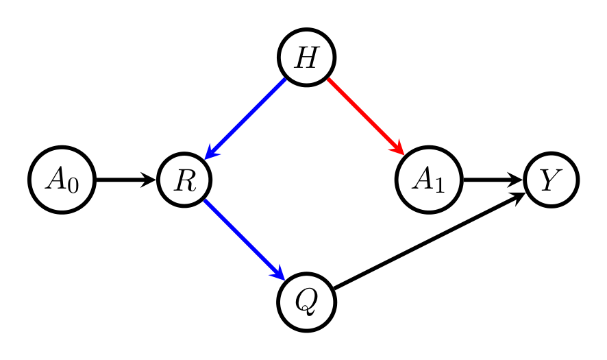
Example 4. Figure 4의 DAG에 대해 Table 1은 \(\mathbf{A} = (A_0, A_1)\)에 대한 모든 유효 시간의존 조정집합을 나열합니다. 이들은 Pearl & Robins (1995)의 충분조건을 적용해 찾을 수 있습니다.
다른 유효 조정집합이 존재할 수 없는 이유는 다음과 같습니다. §3.1에서 언급했듯 \(\mathbf{Z}_0 = \mathrm{pa}_{\mathcal{G}}(A_0)\), \(\mathbf{Z}_1 = \mathrm{pa}_{\mathcal{G}}(A_1) \setminus \overline{\mathrm{pa}}_{\mathcal{G}}(A_1)\)이 유효 조정집합이므로
\[E[Y_{\mathbf{a}}] = E_P\big[E_P[Y \mid A_0 = a_0, A_1 = a_1, H]\big] \tag{16}\]
가 성립합니다. (16)의 우변이 \(E_P[E_P[Y \mid A_0 = a_0, A_1 = a_1]]\)과 같지 않으므로 \(\mathbf{Z}_0 = \emptyset\), \(\mathbf{Z}_1 = \emptyset\)은 유효하지 않습니다. 그리고 Table 1의 1–11번이 \(\mathbf{Z}_0\)가 \(R\)과 \(Q\)를 배제하는 모든 가능한 조정집합을 망라하는데, \(R\)과 \(Q\)는 \(A_0\)와 \(Y\) 사이의 인과 경로 위에 있어 \(\mathbf{Z}_0\)에 포함될 수 없으므로 다른 유효 조정집합은 존재할 수 없습니다.
| # | \(\mathbf{Z}_0\) | \(\mathbf{Z}_1\) | 지배하는 조정집합 |
|---|---|---|---|
| 1 | \(\emptyset\) | \(Q\) | — |
| 2 | \(\emptyset\) | \(R\) | 1 |
| 3 | \(\emptyset\) | \(H\) | 1 |
| 4 | \(\emptyset\) | \(\{Q, R\}\) | 1 |
| 5 | \(\emptyset\) | \(\{Q, H\}\) | 1 |
| 6 | \(\emptyset\) | \(\{R, H\}\) | 1 |
| 7 | \(\emptyset\) | \(\{Q, R, H\}\) | 1 |
| 8 | \(H\) | \(Q\) | — |
| 9 | \(H\) | \(R\) | 8 |
| 10 | \(H\) | \(\{R, Q\}\) | 8 |
| 11 | \(H\) | \(\emptyset\) | 8 |
Table 1: Figure 4의 DAG에 대한 모든 가능한 시간의존 조정집합. 마지막 열은 각 조정집합에 대해, 모든 \(P \in M(\mathcal{G})\)에서 더 작은 점근분산의 NP-\(\mathbf{Z}\) 추정량을 주는 지배 조정집합을 표시합니다(Theorem 13으로 찾습니다).
Table 1에서 1번(\(\mathbf{Z}^*\))과 8번(\(\mathbf{Z}^{**}\))은 지배 조정집합 칸이 비어 있습니다. 실제로 어떤 \(P\)에서는 \(\mathbf{Z}^*\)가, 다른 \(P'\)에서는 \(\mathbf{Z}^{**}\)가 우월합니다.
- 빨간 화살표의 연관이 약하고 파란 화살표들의 연관이 강하면 8번 \(\mathbf{Z}^{**}\)가 1번 \(\mathbf{Z}^*\)보다 낫습니다.
- 빨간 화살표가 강하고 파란 화살표들이 약하면 \(\mathbf{Z}^*\)가 낫습니다.
- 모든 변수가 이진일 때, \(\mathbf{a} = (1,1)\)에 대해 \(\sigma^2_{\mathbf{a},\mathbf{Z}^*}(P)/\sigma^2_{\mathbf{a},\mathbf{Z}^{**}}(P) = 0.675\)인 \(P\)와 \(\sigma^2_{\mathbf{a},\mathbf{Z}^*}(P')/\sigma^2_{\mathbf{a},\mathbf{Z}^{**}}(P') = 1.08\)인 \(P'\)가 둘 다 \(M(\mathcal{G})\) 안에 존재합니다. (검증용 R 스크립트: https://github.com/esmucler/optimal_adjustment)
또 하나의 교훈: 11번(\(\mathbf{Z}_0 = \{H\}\), \(\mathbf{Z}_1 = \emptyset\))은 유일한 시간독립 조정집합이므로 시간독립 조정집합들 가운데서는 자동으로 최적입니다. 그런데 이것이 8번 시간의존 조정집합에 지배당합니다. 즉 최적 시간독립 조정집합이 전체 조정집합 부류에서 최적일 필요는 없습니다.
열린 문제: 최적 시간의존 조정집합이 존재하는 DAG의 부류를 특성화하는 것은 흥미로운 미해결 문제입니다.
5.3 잠재변수가 있는 비모수 인과 그래프 모형에서 균일 최적 조정집합의 부재
DAG의 일부 정점이 관측 불가능하지만 일부 조정집합은 관측 가능한 상황을 생각해 봅시다. 관측 가능한 것들 가운데 최적 조정집합을 찾을 수 있을까요? DAG의 위상에 제한을 두지 않으면 답은 부정적입니다.
Henckel et al. (2019)은 선형 인과 그래프 모형과 OLS 추정량에 대해 관측 가능한 조정집합들 사이에 균일 최적이 없을 수 있음을 보였습니다. 다음 예시는 비선형 인과 그래프 모형과 NP-\(\mathbf{O}\) 추정량에서도 같은 부정적 결과가 성립함을 보여 줍니다. (여기서 NP-\(\mathbf{O}\) 추정량이란 \(\mathbf{Z} = \mathbf{O}\)를 쓰는 NP-\(\mathbf{Z}\) 추정량을 뜻합니다.)
Example 5. Figure 5의 DAG에서 \(U\)가 유일한 비관측 변수라고 합시다. 그러면 \(\mathbf{Z}^* = \emptyset\), \(\mathbf{Z}^{**} = \{Z_1, Z_2\}\), \(\mathbf{Z}^{***} = \{Z_1\}\)이 모두 \((A, Y)\)에 대한 관측 가능한 조정집합입니다.
- Lemma 5를 쓰면 \(\mathbf{Z}^*\)가 \(\mathbf{Z}^{***}\)보다 균일하게 우월함을 쉽게 보일 수 있습니다.
- 그러나 \(\mathbf{Z}^*\)와 \(\mathbf{Z}^{**}\)는 비교 불가능합니다. 파란 엣지의 연관이 강하고 빨간 엣지의 연관이 약하면 \(\mathbf{Z}^*\)가 낫고, 파란 엣지가 약하고 빨간 엣지가 강하면 \(\mathbf{Z}^{**}\)가 낫습니다.
- 모든 변수가 이진일 때 \(\sigma^2_{1,\mathbf{Z}^*}(P)/\sigma^2_{1,\mathbf{Z}^{**}}(P) = 0.04\)인 \(P\)와 \(\sigma^2_{1,\mathbf{Z}^*}(P')/\sigma^2_{1,\mathbf{Z}^{**}}(P') = 1.44\)인 \(P'\)가 둘 다 \(M(\mathcal{G})\) 안에 존재합니다.
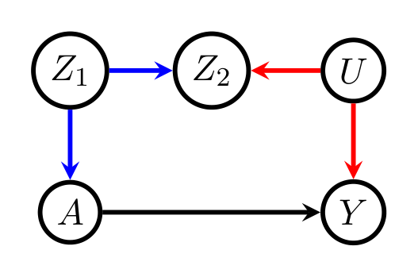
열린 문제: \(\mathbf{O}(\mathbf{A}, Y, \mathcal{G})\)가 관측되지 않지만 관측 가능한 최적 조정집합이 존재하는 상황을 특성화하는 것 역시 흥미로운 미해결 문제입니다.
6. 베이지안 네트워크의 가정을 활용한 점 개입 인과효과 추정 (Estimation of Point Intervention Causal Effects Exploiting the Assumptions of the Bayesian Network)
점 개입 \(\mathbf{A} = A\)에 대해, 개별 개입 평균과 그 대비의 NP-\(\mathbf{O}\) 추정량은 NP-\(\mathbf{Z}\) 추정량들 가운데서는 효율적이지만, 인과 그래프 모형이 데이터 생성 법칙 \(P\)에 대해 부호화한 조건부 독립 가정들은 무시합니다. 그런데 그 가정들이 관심 모수에 대한 정보를 담고 있을 수 있습니다.
6.1 무시되는 정보의 세 가지 예
6.1.1 조정집합 성분들 사이의 독립 (Figure 6)
Figure 6의 DAG \(\mathcal{G}\)가 표현하는 베이지안 네트워크를 봅시다. 모형 \(M(\mathcal{G})\) 하에서 조정집합 \(\mathbf{O} = \{O_1, O_2\}\)의 두 성분은 주변적으로 독립입니다. 이 독립성이 \(\chi_a(P;\mathcal{G}) = E_P[E_P[Y \mid A = a, O_1, O_2]]\)에 대한 정보를 담고 있습니다. \(O_1, O_2\)의 결합분포가 \(\chi_a\)에 대해 보조적(ancillary)이지 않기 때문입니다. 구체적으로
\[ E_P[E_P[Y \mid A = a, O_1, O_2]] = \iiint y\, p(y \mid a, o_1, o_2)\, p(o_1, o_2)\, dy\, do_1\, do_2 = \iiint y\, p(y \mid a, o_1, o_2)\, p(o_1)\, p(o_2)\, dy\, do_1\, do_2 \]
이며, 마지막 등식은 오직 \(M(\mathcal{G})\) 하에서만 참입니다.
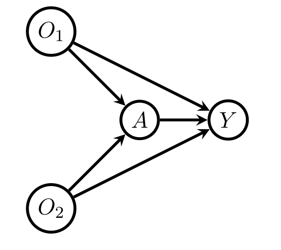
§6.4의 Algorithm 2를 적용하면, Figure 6의 베이지안 네트워크 하에서 준모수 Cramér–Rao 하한이 다음 확률변수의 분산과 같음을 쉽게 보일 수 있습니다.
\[ \chi^1_{P,a,\mathrm{eff}}(A, Y, \mathbf{O};\mathcal{G}) = \psi_{P,a}(\mathbf{O};\mathcal{G}) - \Delta_P(\mathbf{O}) \]
여기서 \(\mathbf{O} = (O_1, O_2)\)이고 \(\psi_{P,a}(\mathbf{O};\mathcal{G})\)는 (4)에서 정의된 NP-\(\mathbf{O}\) 추정량의 영향함수이며
\[ \Delta_P(\mathbf{O}) \equiv b_a(\mathbf{O};P) - E_P[b_a(\mathbf{O};P) \mid O_1] - E_P[b_a(\mathbf{O};P) \mid O_2] + E_P[b_a(\mathbf{O};P)] \]
입니다 (\(b_a(\mathbf{O};P) \equiv E_P[Y \mid A = a, \mathbf{O}]\)).
\(P_\alpha \in M(\mathcal{G})\)가 다음을 만족한다고 하자.
- \(b_a(\mathbf{O};P_\alpha) = O_1 + O_2 + \alpha O_1 O_2\)
- \(E_{P_\alpha}(O_1) = E_{P_\alpha}(O_2) = 0\)
- \(E_{P_\alpha}(O_1^2) = E_{P_\alpha}(O_2^2) = 1\)
- \(\alpha\)와 무관한 고정 상수 \(C > 0\)이 존재하여 \(\mathrm{var}_{P_\alpha}(Y \mid A = a, \mathbf{O}) \le C\)이고 \(\pi_a(\mathbf{O}_{\min};P_\alpha) \ge 1/C\)
그러면 \(\Delta_{P_\alpha}(\mathbf{O}) = \alpha O_1 O_2\)이고
\[ \frac{\mathrm{var}_{P_\alpha}[\psi_{P_\alpha,a}(\mathbf{O};\mathcal{G})]}{\mathrm{var}_{P_\alpha}[\chi^1_{P,a,\mathrm{eff}}(\mathbf{V};\mathcal{G})]} \xrightarrow[|\alpha| \to \infty]{} \infty \]
이다. 즉 NP-\(\mathbf{O}\) 추정량은 베이지안 네트워크가 담은 정보의 상당 부분을 무시할 수 있습니다.
Lemma 23의 유도 흐름
1단계 (사영 관계). \(\mathbf{O}\)가 조정집합이므로 모든 \(P \in M(\mathcal{G})\)에 대해 \(\chi_a(P;\mathcal{G}) = E_P[E_P(Y \mid A = a, \mathbf{O})]\)이고, 따라서 \(\psi_{P,a}(\mathbf{O};\mathcal{G})\)는 \(M(\mathcal{G})\) 하에서 \(\chi_a\)의 (효율적이지는 않은) 영향함수입니다. 그러므로
\[ \chi^1_{P,a,\mathrm{eff}} = \Pi[\psi_{P,a}(\mathbf{O};\mathcal{G}) \mid \Lambda(P)], \qquad \Delta_{P_\alpha}(\mathbf{O}) = \Pi[\psi_{P_\alpha,a}(\mathbf{O};\mathcal{G}) \mid \Lambda(P_\alpha)^{\perp}] \]
2단계 (피타고라스). 위 두 식과 피타고라스 정리에서
\[ \mathrm{var}_{P_\alpha}[\chi^1_{P_\alpha,a,\mathrm{eff}}] = \mathrm{var}_{P_\alpha}[\psi_{P_\alpha,a}(\mathbf{O};\mathcal{G})] - \mathrm{var}_{P_\alpha}[\Delta_{P_\alpha}(\mathbf{O})] \]
3단계 (\(\Delta_{P_\alpha}\)의 계산). \(O_1 \perp\!\!\!\perp O_2\)이고 평균이 0이므로 \(E_{P_\alpha}[b_a \mid O_1] = O_1\), \(E_{P_\alpha}[b_a \mid O_2] = O_2\), \(E_{P_\alpha}[b_a] = 0\)입니다. 따라서 \(\Delta_{P_\alpha}(\mathbf{O}) = \alpha O_1 O_2\)이고 \(\mathrm{var}_{P_\alpha}[\Delta_{P_\alpha}(\mathbf{O})] = \alpha^2 E_{P_\alpha}[O_1^2 O_2^2] = \alpha^2\)입니다.
4단계 (분모의 계산). \(E_{P_\alpha}[b_a^2] = E_{P_\alpha}[(O_1 + O_2 + \alpha O_1 O_2)^2] = 2 + \alpha^2\)이고, 가정 4에 의해 나머지 항은 \(C^3\)으로 유계이므로
\[ \frac{\mathrm{var}_{P_\alpha}[\Delta_{P_\alpha}(\mathbf{O})]}{\mathrm{var}_{P_\alpha}[\psi_{P_\alpha,a}(\mathbf{O};\mathcal{G})]} = \frac{\alpha^2}{E_{P_\alpha}[I_a(A)\pi_a^{-2}(\mathbf{O}_{\min};P_\alpha)\mathrm{var}_{P_\alpha}(Y \mid A = a, \mathbf{O})] + 2 + \alpha^2} \xrightarrow[|\alpha| \to \infty]{} 1 \]
5단계 (결론). 2단계와 4단계에서 \(\mathrm{var}_{P_\alpha}[\chi^1_{P_\alpha,a,\mathrm{eff}}]/\mathrm{var}_{P_\alpha}[\psi_{P_\alpha,a}] \to 0\)이므로 역수는 \(\infty\)로 발산합니다. \(\blacksquare\)
6.1.2 마르코프 사슬 구조 (Figure 7)
조정집합 내부의 독립성만이 정보의 담지자는 아닙니다. Figure 7의 DAG처럼 \(A\)가 무작위 배정되었지만 \(A\)의 \(Y\)에 대한 효과를 모두 매개하는 변수 \(M\)이 측정된 모형을 생각해 봅시다. 그러면
\[ \chi_a(P;\mathcal{G}) = E_P[Y \mid A = a] = \iint y\, p(y, m \mid a)\, dy\, dm = \iint y\, p(y \mid m)\, p(m \mid a)\, dy\, dm \]
이고 마지막 등식은 그래프가 부호화한 마르코프 사슬 구조 때문에 성립합니다. 이 예에서 \(A = a\)가 주어졌을 때 \(Y\)의 경험평균은 \(\mathbf{O} = \emptyset\)인 NP-\(\mathbf{O}\) 추정량으로 볼 수 있는데, 이 추정량은 마르코프 사슬 구조를 활용하지 않으므로 준모수 Cramér–Rao 하한에 도달하지 못합니다.
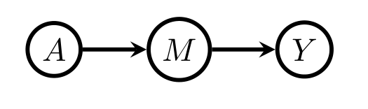
6.1.3 앞문 그래프 (Figure 8)
세 번째로 Figure 8의 DAG를 봅시다. 이 모형에서 \(\mathbf{O}\)는 유일한, 따라서 최적인 공변량 조정집합입니다. 그럼에도 불구하고 모형 하에서 \(\chi_a(P;\mathcal{G}) = E_P[E_P[Y \mid A = a, O]]\)는 이른바 앞문 범함수(front-door functional)
\[ \beta(P) \equiv \int y \left\{ \int p(m \mid a) \left[\sum_{a'} p(y \mid m, a')\, p(a')\right] dm \right\} dy \tag{17} \]
와도 같습니다 (Pearl, 2000).
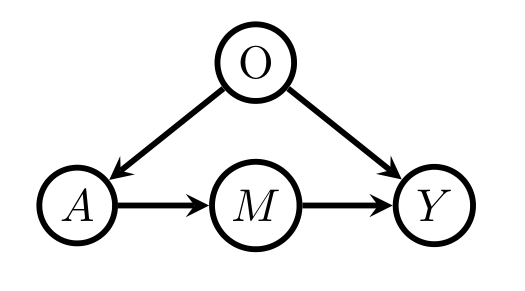
이 예는 문헌에서 \(\mathbf{O}\)가 비관측일 때 공변량 조정이 불가능해도 \(\chi_a\)의 식별이 가능한 사례로 쓰여 왔습니다. 정칙조건 하에서 (17)의 우변의 모든 밀도를 매끄러운 비모수 추정량으로 대체하여 얻는 \(\beta(P)\)의 비모수 추정량은 \(\chi_a(P;\mathcal{G})\)의 또 하나의 정칙 점근선형 추정량입니다. 그러나 Example 7에서 보듯 두 추정량 어느 쪽도 준모수 Cramér–Rao 하한을 달성하지 못합니다 (인과 선형 모형에서의 관련 논의는 Hayashi & Kuroki (2014) 참조). §6.1의 일단계(one-step) 추정 기법을 쓰면 정칙조건 하에서 하한을 달성하는 추정량을 얻을 수 있습니다.
이후 절의 전제: DAG \(\mathcal{G}\) 하에서 인과효과 추정이 의미를 가지려면 \(A\)와 \(Y\) 사이에 적어도 하나의 인과 경로가 있어야 하므로, 이후로는 그러한 DAG가 표현하는 베이지안 네트워크만 다룹니다.
6.2 준모수 효율 추정 (Semiparametric Efficient Estimation)
문제 설정: 임의의 \(P \in M(\mathcal{G})\) 하에서 정칙이고 점근선형인 모든 추정량 가운데 분산이 가장 작은 \(\chi_a(P;\mathcal{G}) \equiv E_P[E_P[Y \mid A = a, \mathrm{pa}_{\mathcal{G}}(A)]]\)와 \(\Delta(P;\mathcal{G})\)의 추정량을 찾는 것입니다.
\(\mathcal{G}\)의 모든 변수가 이산이 아니면 \(M(\mathcal{G})\)의 접공간은 유클리드 공간의 부분집합이 아니므로 모형 \(M(\mathcal{G})\)는 준모수적입니다. 부록의 Lemma 24는 접공간이 다음과 같음을 보입니다.
\[ \Lambda \equiv \bigoplus_{j=1}^{s} \Lambda_j, \qquad \Lambda_j \equiv \Big\{ G \equiv g\big(V_j, \mathrm{pa}_{\mathcal{G}}(V_j)\big) \in L_2(P) : E_P\big[G \mid \mathrm{pa}_{\mathcal{G}}(V_j)\big] = 0 \Big\} \tag{44} \]
여기서 \(\oplus\)는 \(L_2(P)\)-직교 공간들의 합입니다. 따라서 \(\mathcal{G}\)가 완전(complete) DAG가 아닌 한 \(\Lambda\)는 \(L^0_2(P) \equiv \{g \in L_2(P) : \int g\, dP = 0\}\)의 진부분집합입니다.
\(M(\mathcal{G})\)의 법칙은 \(p(\mathbf{v}) = \prod_k p_k(v_k \mid \mathrm{pa}_{\mathcal{G}}(V_k))\)로 인수분해되고, 모형은 각 조건부 밀도 \(p_j\)에 아무 제약도 두지 않습니다. 따라서 각 인수에 대한 점수들의 폐포가 \(\Lambda_j\)가 되고(Van der Laan & Robins, 2003, Lemma 1.6; Tsiatis, 2007, Theorem 4.5), 서로 다른 인수의 점수는 직교하므로 접공간은 이들의 직합입니다.
직관: DAG가 부과하는 제약은 “각 노드가 자기 부모에만 의존한다”는 것이고, 접공간이 \(L^0_2(P)\)보다 작아지는 정도가 바로 그 제약의 정보량입니다. 완전 DAG는 아무 제약도 없으므로 \(\Lambda = L^0_2(P)\)가 되어 비모수 모형이 됩니다.
선형성: 미분 연산의 선형성에 의해, \(\chi^1_{P,a}(\mathbf{V};\mathcal{G})\)가 \(\chi_a\)의 영향함수이면 \(\Delta^1_P(\mathbf{V};\mathcal{G}) = \sum_{\mathbf{a}} c_{\mathbf{a}} \chi^1_{P,a}(\mathbf{V};\mathcal{G})\)는 \(\Delta\)의 영향함수이며, 효율적 영향함수에 대해서도
\[ \Delta^1_{P,\mathrm{eff}}(\mathbf{V};\mathcal{G}) = \sum_{\mathbf{a} \in \mathcal{A}} c_{\mathbf{a}} \chi^1_{P,a,\mathrm{eff}}(\mathbf{V};\mathcal{G}) \]
가 성립합니다.
6.2.1 Theorem 14 — 효율적 영향함수의 첫 번째 표현과 불필요 변수
먼저 몇 가지 표기를 도입합니다.
\[ J_{P,a,\mathcal{G}} \equiv \frac{I_a(A)Y}{P\big(A = a \mid \mathrm{pa}_{\mathcal{G}}(A)\big)} \]
\[ \mathrm{indir}(A,Y,\mathcal{G}) \equiv \{V_j \in \mathbf{V} : V_j \in \mathrm{an}_{\mathcal{G}}(A) \setminus \{A\} \text{ 이고 } V_j \text{와 } Y \text{ 사이의 모든 인과 경로가 } A \text{와 만난다}\} \]
\[ \mathrm{irrel}(A,Y,\mathcal{G}) \equiv \mathrm{indir}(A,Y,\mathcal{G}) \cup \mathrm{an}_{\mathcal{G}}(Y)^c \]
- \(\mathrm{indir}(A,Y,\mathcal{G})\)는 자신의 부모들을 조건화했을 때 \(A\)의 \(Y\)에 대한 인과효과에 대한 도구변수(instrumental variable)가 되는 노드들로 구성됩니다. 즉 \(A\)에는 영향을 주지만 \(Y\)에는 오직 \(A\)를 통해서만 도달하는 변수들입니다.
- \(\mathrm{irrel}(A,Y,\mathcal{G}) = [\mathrm{an}_{\mathcal{G}_{\mathbf{V} \setminus \{A\}}}(Y)]^c\)로도 쓸 수 있습니다 (Perković, 2019 참조). 즉 \(A\)를 제거한 그래프에서 \(Y\)의 조상이 아닌 모든 노드입니다.
도구변수가 왜 “불필요”한가가 처음에는 반직관적일 수 있습니다. 도구변수는 식별을 위해서는 유용하지만, 이미 \(\mathbf{O}\)를 통해 식별이 되어 있는 상황에서 효율성에는 기여하지 않는다는 것이 Theorem 14의 내용입니다. 도구변수는 \(Y\)에 대한 정보를 \(A\)를 통하지 않고는 전달하지 못하기 때문입니다.
\(M(\mathcal{G})\)를 DAG \(\mathcal{G}\)가 표현하는 베이지안 네트워크, \(Y\)와 \(A\)를 서로 다른 두 정점이라 하자. 그러면 \(M(\mathcal{G})\) 하에서 \(P\)에서의 \(\chi_a(P;\mathcal{G})\)의 효율적 영향함수는
\[ \chi^1_{P,a,\mathrm{eff}}(\mathbf{V};\mathcal{G}) = \sum_{j : V_j \notin [\mathrm{irrel}(A,Y,\mathcal{G}) \cup \{A\}]} \Big\{ E_P\big[J_{P,a,\mathcal{G}} \mid V_j, \mathrm{pa}_{\mathcal{G}}(V_j)\big] - E_P\big[J_{P,a,\mathcal{G}} \mid \mathrm{pa}_{\mathcal{G}}(V_j)\big] \Big\} \tag{18} \]
이다. 나아가 \(\chi^1_{P,a,\mathrm{eff}}(\mathbf{V};\mathcal{G})\)는 \(\mathbf{V}\)에 오직 \(\mathbf{V}_{\mathrm{marg}} \equiv \mathbf{V} \setminus \mathrm{irrel}(A,Y,\mathcal{G})\)를 통해서만 의존한다.
(18)의 유도 흐름
1단계 (출발 영향함수). \(R_{P,a,\mathcal{G}} \equiv \{I_a(A)/\pi_a(\mathrm{pa}_{\mathcal{G}}(A);P) - 1\} b_a(\mathrm{pa}_{\mathcal{G}}(A);P)\)라 놓으면
\[ \psi_{P,a}[\mathrm{pa}_{\mathcal{G}}(A);\mathcal{G}] = J_{P,a,\mathcal{G}} - R_{P,a,\mathcal{G}} - \chi_a(P;\mathcal{G}) \]
는 \(P\)에 아무 제약도 두지 않는 비모수 모형에서 \(\chi_a\)의 유일한 영향함수이므로, \(M(\mathcal{G})\)에서도 (효율적이지는 않은) 영향함수입니다.
2단계 (접공간으로 사영). Lemma 24와 (44)에 의해
\[ \chi^1_{P,a,\mathrm{eff}}(\mathbf{V};\mathcal{G}) = \Pi\big[\psi_{P,a}[\mathrm{pa}_{\mathcal{G}}(A);\mathcal{G}] \mid \Lambda(P)\big] = \sum_{j=1}^{s} \Pi\big[\psi_{P,a}[\mathrm{pa}_{\mathcal{G}}(A);\mathcal{G}] \mid \Lambda_j(P)\big] \]
3단계 (각 성분의 사영 공식). 임의의 확률변수 \(U\)에 대해 \(\Pi[U \mid \Lambda_j(P)] = E_P[U \mid V_j, \mathrm{pa}_{\mathcal{G}}(V_j)] - E_P[U \mid \mathrm{pa}_{\mathcal{G}}(V_j)]\)입니다.
4단계 (사라지는 항들). 다음 세 가지가 (18)을 완성합니다.
- \(V_j = A\)인 항은 0입니다. \(\chi_a(P;\mathcal{G})\)가 \(\mathrm{pa}_{\mathcal{G}}(A)\)가 주어졌을 때 \(A\)의 법칙에 의존하지 않으므로, \(\psi_{P,a}[\mathrm{pa}_{\mathcal{G}}(A);\mathcal{G}]\)는 그 조건부 법칙에 대한 정칙 모수적 하위모형의 모든 점수와 직교하기 때문입니다.
- \(V_j \ne A\)인 항에서는 \(R_{P,a,\mathcal{G}}\)와 \(\chi_a\) 부분이 상쇄되어 \(J_{P,a,\mathcal{G}}\)만 남습니다.
- \(V_j \in \mathrm{indir}(A,Y,\mathcal{G}) \cup \mathrm{an}^c_{\mathcal{G}}(\{A, Y\})\)인 항은 0입니다.
\(\blacksquare\)
6.2.2 Definition 15와 Lemma 16 — 불필요 변수를 그래프에서 지우기
Theorem 14는 \(\mathrm{irrel}(A,Y,\mathcal{G})\)의 변수들이 효율적 영향함수에 나타나지 않음을 보였습니다. 다음 결과는 그 변수들을 DAG에서 아예 주변화해 버려도 모수에 대한 정보 손실이 전혀 없음을 보입니다.
\(\mathcal{G}\)를 정점 집합 \(\mathbf{V}\)의 DAG, \(\mathbf{V}_{\mathrm{marg}} \subset \mathbf{V}\)라 하자. 임의의 \(P \in M(\mathcal{G})\)에 대해 \(P_{\mathrm{marg}}\)를 \(P\) 하의 \(\mathbf{V}_{\mathrm{marg}}\)의 주변분포라 하고, \(\mathcal{G}'\)을 정점 집합 \(\mathbf{V}_{\mathrm{marg}}\)의 DAG, \(\{A, Y\} \subset \mathbf{V}_{\mathrm{marg}}\)라 하자. \((\mathbf{V}_{\mathrm{marg}}, \mathcal{G}')\)이 \((\mathbf{V}, \mathcal{G})\)에 대해 \(\chi_a(P;\mathcal{G})\)의 효율 추정에 충분하다 함은, 모든 \(P \in M(\mathcal{G})\)에 대해 다음이 모두 성립함을 뜻한다.
- \(M(\mathcal{G}, \mathbf{V}_{\mathrm{marg}}) = M(\mathcal{G}')\)
- \(\chi_a(P;\mathcal{G}) = \chi_a(P_{\mathrm{marg}};\mathcal{G}')\)
- \(\mathbf{O}(A,Y,\mathcal{G}) = \mathbf{O}(A,Y,\mathcal{G}')\)
- \(\psi_{P,a}[\mathbf{O}(A,Y,\mathcal{G});\mathcal{G}] = \psi_{P_{\mathrm{marg}},a}[\mathbf{O}(A,Y,\mathcal{G}');\mathcal{G}']\)
- \(\chi^1_{P,a,\mathrm{eff}}(\mathbf{V};\mathcal{G}) = \chi^1_{P_{\mathrm{marg}},a,\mathrm{eff}}(\mathbf{V}_{\mathrm{marg}};\mathcal{G}')\)
이러한 \((\mathbf{V}_{\mathrm{marg}}, \mathcal{G}')\)을 찾으면, \(\mathbf{V} \setminus \mathbf{V}_{\mathrm{marg}}\)를 무시하고 \(\mathbf{V}_{\mathrm{marg}}\)가 베이지안 네트워크 \(M(\mathcal{G}')\)를 따른다고 가정해도 \(\chi_a\)에 대한 정보 손실이 전혀 없습니다. 조건 3에 의해 \(\mathcal{G}'\)이 최적 조정집합을 보존하므로 NP-\(\mathbf{O}\) 추정량도 동일하고, 조건 5에 의해 효율 하한도 동일합니다. 따라서 NP-\(\mathbf{O}\) 추정량의 효율 손실을 연구할 때는 \(\mathbf{V}_{\mathrm{marg}}\)만 있다고 여기고 \(M(\mathcal{G}')\) 하에서 \(\chi_a(P_{\mathrm{marg}};\mathcal{G}')\)를 추정하는 문제로 바꿔 생각해도 됩니다.
Lemma 16. \(\mathcal{G}\)와 \(\mathcal{G}'\)을 Algorithm 1의 입력·출력 DAG라 하고 \(\mathbf{V}\), \(\mathbf{V}_{\mathrm{marg}}\)를 각각의 정점 집합이라 하자. 그러면 \((\mathbf{V}_{\mathrm{marg}}, \mathcal{G}')\)은 \((\mathbf{V}, \mathcal{G})\)에 대해 \(\chi_a(P;\mathcal{G})\)의 효율 추정에 충분하다.
Algorithm 1: 불필요 노드를 제거하는 DAG 가지치기 절차
────────────────────────────────────────────────────────────────────
input : 노드 집합 V를 갖는 DAG G와 서로 다른 두 노드 A, Y ∈ V
output: 정점 집합 V_marg = V \ irrel(A,Y,G)를 갖는 새 DAG G'로서
(V_marg, G')가 (V,G)에 대해 χ_a(P;G)의 효율 추정에 충분한 것
procedure prune(A, Y, G)
G' = G_{an_G(Y)} # Y의 조상이 아닌 노드와 엣지를 삭제
I_1, ..., I_L = topological_sort(indir(A,Y,G'), G')
for j = L, L-1, ..., 1 do
G' = τ(G', I_j) # 외생화(잠재 사영)로 I_j를 제거
return G'
────────────────────────────────────────────────────────────────────Algorithm 1이 하는 일: 먼저 \(\mathrm{an}_{\mathcal{G}}(Y)^c\)의 정점과 엣지를 지우고, 이어서 \(\mathrm{indir}(A,Y,\mathcal{G})\)의 각 노드를 잠재 사영 연산으로 순차적으로 제거합니다.
일반적으로 베이지안 네트워크 \(M(\mathcal{G})\)를 따르는 벡터 \(\mathbf{V}\)의 부분벡터 \(\mathbf{V}'\)의 주변분포 집합은 어떤 DAG \(\mathcal{G}'\)의 베이지안 네트워크 \(M(\mathcal{G}')\)가 아닐 수 있습니다 (Evans, 2016). 그럼에도 \(\mathrm{irrel}(A,Y,\mathcal{G})\)의 특수한 구조 덕분에, \(\mathbf{V}' = \mathbf{V}_{\mathrm{marg}}\)의 주변분포 집합은 Algorithm 1의 출력 \(\mathcal{G}'\)에 대한 베이지안 네트워크 \(M(\mathcal{G}')\)가 됩니다. 이 점이 Lemma 16의 기술적 핵심입니다.
Algorithm 1은 노드를 위상 정렬하는 서브루틴을 가정합니다. Kahn 알고리즘 (Kahn, 1962)이 그런 서브루틴이며 최악 복잡도는 \(O(|\mathbf{V}| + |\mathbf{E}|)\)입니다.
Example 6. Figure 9(a)의 그래프로 Algorithm 1을 예시합니다. 이 그래프에서 \(\mathrm{an}^c_{\mathcal{G}}(Y) = \{D_1, D_2\}\)이고 \(\mathrm{indir}(A,Y,\mathcal{G}) = \{I_1, I_2, I_3\}\)이며 이미 위상 정렬되어 있습니다.
prune의 첫 단계가 \(\mathrm{an}^c_{\mathcal{G}}(Y)\)의 모든 노드와 그로 들어오는 엣지를 제거합니다.- 다음 단계가 \(I_3\)에 대해 주변화합니다. Figure 9(b)가 \(\{D_1, D_2\}\)를 이미 제거한 그래프에 이 주변화를 적용한 결과입니다.
- 다음이 \(I_2\)에 대해 주변화하여 Figure 9(c)를, 마지막이 \(I_1\)에 대해 주변화하여 Figure 9(d)를 얻습니다. (d)가 Algorithm 1의 출력입니다.
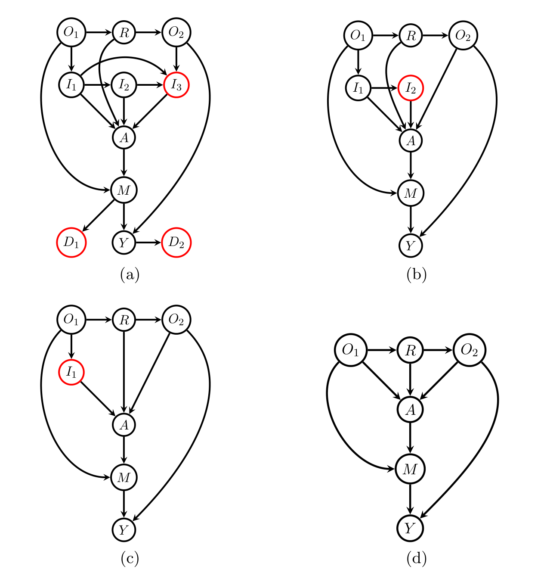
Lemma 16은 부록에서 다음의 중요한 일반 결과를 원용해 증명됩니다.
\(\mathcal{M}\)을 확률벡터 \(\mathbf{V}\)의 법칙에 대한 준모수 모형, \(\mathbf{V}'\)을 \(\mathbf{V}\)의 부분벡터라 하자. \(\mathcal{M}'\)을 \(\mathcal{M}\)이 유도하는 \(\mathbf{V}'\)의 법칙 모형이라 하자. \(\chi(P)\)가 \(\mathcal{M}\)에서 정칙 모수이고 \(P\)에서의 효율적 영향함수가 \(\chi^1_{P,\mathrm{eff}}\)라 하자. \(\chi^1_{P,\mathrm{eff}}\)가 \(\mathbf{V}\)에 오직 \(\mathbf{V}'\)을 통해서만 의존하고, \(\chi(P)\)가 \(P\)에 오직 \(P'\)(= \(P\)의 \(\mathbf{V}'\)에 대한 주변)를 통해서만 의존한다고 하자. \(\nu(P') \equiv \chi(P)\)로 정의하고 \(\nu^1_{P',\mathrm{eff}}\)를 \(\mathcal{M}'\)에서 \(P'\)에서의 \(\nu(P')\)의 효율적 영향함수라 하자. 그러면 \(P' \in \mathcal{M}'\)이 주어졌을 때, 주변법칙이 \(P'\)인 모든 \(P \in \mathcal{M}\)에 대해 \(\chi^1_{P,\mathrm{eff}} = \nu^1_{P',\mathrm{eff}}\)이다.
이후의 표준 가정: Lemma 16과 Proposition 17에 힘입어, 이후로는 일반성을 잃지 않고 \(\mathrm{irrel}(A,Y,\mathcal{G}) = \emptyset\)이라 가정합니다. 이 가정 하에서 정점 집합 \(\mathbf{V}\)를
\[ \mathbf{V} = \mathbf{M} \cup \mathbf{W} \cup \{A, Y\} \]
로 분할할 수 있습니다. 여기서 \(\mathbf{M}\)의 정점들은 \(A\)와 \(Y\) 사이의 적어도 하나의 인과 경로와 교차하는 매개변수들이고, \(\mathbf{W}\)는 \(A\)의 비후손들입니다. 따라서 \(\mathbf{V}\)를
\[ (W_1, \dots, W_J, A, M_1, \dots, M_K, Y) \]
로 위상 정렬할 수 있습니다. 최적 조정집합 \(\mathbf{O}(A,Y,\mathcal{G}) \equiv \mathbf{O} \equiv (O_1, \dots, O_T)\)(역시 위상 정렬됨)는 \(\mathbf{W}\)에 포함됩니다. 관례로 \(\mathbf{O} = \emptyset\)이면 \(T = 0\), \(\mathbf{M} = \emptyset\)이면 \(K = 0\), \(\mathbf{W} = \emptyset\)이면 \(J = 0\)입니다.
6.2.3 Theorem 18 — 효율적 영향함수의 두 번째 표현
\[ T_{P,a,\mathcal{G}} \equiv \frac{I_a(A)Y}{\pi_a(\mathbf{O};P)} \]
라 놓고, 관례로 \(\sum_{k=1}^{0} \cdot \equiv 0\), \(\sum_{j=1}^{0} \cdot \equiv 0\), \(\sum_{j=2}^{1} \cdot \equiv 0\)으로 씁니다.
\(M(\mathcal{G})\)를 DAG \(\mathcal{G}\)가 표현하는 베이지안 네트워크, \(Y\)와 \(A\)를 서로소인 단일 정점, \(\mathrm{irrel}(A,Y,\mathcal{G}) = \emptyset\)이라 하자. 그러면 \(M(\mathcal{G})\) 하에서 \(P\)에서의 \(\chi_a(P;\mathcal{G})\)의 효율적 영향함수는
\[ \begin{aligned} \chi^1_{P,a,\mathrm{eff}}(\mathbf{V};\mathcal{G}) =\ & E_P\big[T_{P,a,\mathcal{G}} \mid Y, \mathrm{pa}_{\mathcal{G}}(Y)\big] - E_P\big[T_{P,a,\mathcal{G}} \mid \mathrm{pa}_{\mathcal{G}}(Y)\big] \\ & + \sum_{k=1}^{K} \Big\{ E_P\big[T_{P,a,\mathcal{G}} \mid M_k, \mathrm{pa}_{\mathcal{G}}(M_k)\big] - E_P\big[T_{P,a,\mathcal{G}} \mid \mathrm{pa}_{\mathcal{G}}(M_k)\big] \Big\} \\ & + \sum_{j=1}^{J} \Big\{ E_P\big[b_a(\mathbf{O};P) \mid W_j, \mathrm{pa}_{\mathcal{G}}(W_j)\big] - E_P\big[b_a(\mathbf{O};P) \mid \mathrm{pa}_{\mathcal{G}}(W_j)\big] \Big\} \end{aligned} \tag{19} \]
이다. 여기서 \(\mathrm{pa}_{\mathcal{G}}(W_1) = \emptyset\)이므로 \(E_P[b_a(\mathbf{O};P) \mid \mathrm{pa}_{\mathcal{G}}(W_1)] = \chi_a(P;\mathcal{G})\)이다.
(18)은 모든 노드에 대한 사영의 합이라는 추상적 형태이고, (19)는 그 각 항을 노드의 종류에 따라 계산 가능한 형태로 정리한 것입니다. 부록의 Lemma 26이 이 변환의 핵심으로, \(J \ge 1\)일 때 \(E_P[J_{P,a,\mathcal{G}} \mid W_j, \mathrm{pa}_{\mathcal{G}}(W_j)] = E_P[b_a(\mathbf{O};P) \mid W_j, \mathrm{pa}_{\mathcal{G}}(W_j)]\)이고, \(K \ge 1\)일 때 \(E_P[J_{P,a,\mathcal{G}} \mid M_k, \mathrm{pa}_{\mathcal{G}}(M_k)] = E_P[T_{P,a,\mathcal{G}} \mid M_k, \mathrm{pa}_{\mathcal{G}}(M_k)]\)임을 보입니다.
즉 비후손 노드 \(W_j\)에서는 결과회귀 \(b_a(\mathbf{O};P)\)가, 매개변수 \(M_k\)와 \(Y\)에서는 IPW 유사결과 \(T_{P,a,\mathcal{G}}\)가 사영의 재료가 됩니다.
Example 7. 다시 Figure 8의 DAG를 봅시다. 이 예에서 \(\mathbf{O} = \mathbf{O}_{\min} = \{O\} \equiv \{W_1\}\), \(J = T = 1\), \(\mathbf{M} = \{M\}\), \(K = 1\)입니다. (19)를 적용하면
\[ \begin{aligned} \chi^1_{P,a,\mathrm{eff}}(\mathbf{V};\mathcal{G}) =\ & b_a(\mathbf{O};P) - \chi_a(\mathcal{G};P) + Y E_P\left[\frac{I_a(A)}{\pi_a(\mathbf{O};P)} \,\middle|\, Y, M\right] - E_P\left[\frac{I_a(A)Y}{\pi_a(\mathbf{O};P)} \,\middle|\, M\right] \\ & + I_a(A) E_P\left[\frac{Y}{\pi_a(\mathbf{O};P)} \,\middle|\, A, M\right] - I_a(A) E_P\left[\frac{Y}{\pi_a(\mathbf{O};P)} \,\middle|\, A\right] \end{aligned} \]
를 얻습니다. DAG에 충실한(faithful) 임의의 법칙에서 \(b_a(\mathbf{O};P)\)는 \(O\)의 비자명한 함수이고 \(E_P[I_a(A)Y\pi_a^{-1}(\mathbf{O};P) \mid M]\)은 \(M\)의 비자명한 함수이며, 이 항들은 나머지 항들과 상쇄될 수 없습니다. 따라서 \(\chi^1_{P,a,\mathrm{eff}}\)는 \(O\)와 \(M\) 둘 다의 비자명한 함수입니다.
- NP-\(\mathbf{O}\) 추정량은 \(M\)에 의존하지 않으므로 모형 \(M(\mathcal{G})\)에서 전역 효율적일 수 없습니다.
- 앞문 공식 (17)의 비모수 추정량은 \(O\)에 의존하지 않으므로 역시 전역 효율적일 수 없습니다.
6.2.4 일단계 추정량 (One-step Estimator)
(19)의 표현은 다음 일단계 추정량(Van der Vaart, 2000; van der Vaart, 2014)의 계산에 쓸 수 있습니다.
\[ \hat\chi_{\mathrm{one-step},a} \equiv \hat\chi_a(P;\mathcal{G}) + P_n\big[\hat\chi^1_{P,a,\mathrm{eff}}(\mathbf{V};\mathcal{G})\big] \]
- \(J = 0\)인 경우: \(\hat\chi_a(P;\mathcal{G}) = P_n[Y I_a(A)]\{P_n[I_a(A)]\}^{-1}\)이고
\[ P_n\big[\hat\chi^1_{P,a,\mathrm{eff}}(\mathbf{V};\mathcal{G})\big] = \sum_{k=1}^{K} P_n\Big\{ \hat E\big[T_{P,a,\mathcal{G}} \mid M_k, \mathrm{pa}_{\mathcal{G}}(M_k)\big] - \hat E\big[T_{P,a,\mathcal{G}} \mid \mathrm{pa}_{\mathcal{G}}(M_k)\big] \Big\} \]
- \(J \ge 1\)인 경우:
\[ \begin{aligned} \hat\chi_{\mathrm{one-step},a} =\ & P_n\Big\{ \hat E\big[T_{P,a,\mathcal{G}} \mid Y, \mathrm{pa}_{\mathcal{G}}(Y)\big] - \hat E\big[T_{P,a,\mathcal{G}} \mid \mathrm{pa}_{\mathcal{G}}(Y)\big] \Big\} \\ & + \sum_{k=1}^{K} P_n\Big\{ \hat E\big[T_{P,a,\mathcal{G}} \mid M_k, \mathrm{pa}_{\mathcal{G}}(M_k)\big] - \hat E\big[T_{P,a,\mathcal{G}} \mid \mathrm{pa}_{\mathcal{G}}(M_k)\big] \Big\} \\ & + \sum_{j=2}^{J} P_n\Big\{ \hat E\big[b_a(\mathbf{O};P) \mid W_j, \mathrm{pa}_{\mathcal{G}}(W_j)\big] - \hat E\big[b_a(\mathbf{O};P) \mid \mathrm{pa}_{\mathcal{G}}(W_j)\big] \Big\} \\ & + P_n\Big\{ \hat E\big[b_a(\mathbf{O};P) \mid W_1, \mathrm{pa}_{\mathcal{G}}(W_1)\big] \Big\} \end{aligned} \]
각 조건부 기댓값의 구체적 계산:
| 항 | 계산 방법 |
|---|---|
| \(\hat E[T_{P,a,\mathcal{G}} \mid M_k, \mathrm{pa}_{\mathcal{G}}(M_k)]\) | 먼저 \(\pi_a(\mathbf{O};P)\)의 비모수 추정량 \(\hat\pi_a(\mathbf{O})\)를 계산 → 유사결과 \(\hat T_i = Y_i I_a(A_i)/\hat\pi_a(\mathbf{O}_i)\)를 \(M_{k,i}, \mathrm{pa}_{\mathcal{G}}(M_{k,i})\)에 비모수 회귀 |
| \(\hat E[b_a(\mathbf{O};P) \mid W_j, \mathrm{pa}_{\mathcal{G}}(W_j)]\) | 먼저 \(A = a\) 하에서 \(Y\)의 \(\mathbf{O}\)에 대한 조건부 평균의 비모수 회귀 추정량 \(\hat b_a(\mathbf{O})\)를 계산 → 유사결과 \(\hat b_a(\mathbf{O}_i)\)를 \(W_{j,i}, \mathrm{pa}_{\mathcal{G}}(W_{j,i})\)에 비모수 회귀 |
| 부모 집합만 조건화하는 항 | 위와 유사하게 계산 |
점근 성질: \(\chi^1_{P,a,\mathrm{eff}}\)에 나타나는 조건부 기댓값들이 속한 함수공간의 복잡도(예: metric entropy)에 대한 제약을 포함한 정칙조건 하에서, 그리고 특정한 비모수 추정량 선택 하에서, 일단계 추정량 \(\hat\chi_{\mathrm{one-step},a}\)는 영향함수가 \(\chi^1_{P,a,\mathrm{eff}}(\mathbf{V};\mathcal{G})\)인 정칙 점근선형 추정량이 되어 (van der Vaart, 2014) \(M(\mathcal{G})\) 하에서 \(\chi_a\)의 준모수 분산 하한을 달성합니다. 따라서 \(\hat\Delta = \sum_{\mathbf{a}} c_{\mathbf{a}} \hat\chi_{\mathrm{one-step},a}\)도 \(\Delta(P;\mathcal{G})\)의 하한을 달성합니다.
6.3 NP-\(\mathbf{O}\) 추정량의 효율성을 판정하는 건전·완전 알고리즘
특정한 \(\mathcal{G}\)의 구성에서는 (19)가 단순화되어
\[ \chi^1_{P,a,\mathrm{eff}}(\mathbf{V};\mathcal{G}) = \psi_{P,a}[\mathbf{O}(A,Y,\mathcal{G});\mathcal{G}] \quad \text{for all } P \in M(\mathcal{G}) \tag{20} \]
이 성립합니다. 이는 곧 NP-\(\mathbf{O}\) 추정량이 준모수 분산 하한을 달성함을 뜻합니다. 그런 DAG 구성에서는
- \(\mathbf{V} \setminus [\mathbf{O} \cup \{Y, A\}]\)의 관측치를 무시해도 효율 손실이 없고,
- 베이지안 네트워크 \(M(\mathcal{G})\)가 \((\mathbf{O}, A, Y)\)의 주변법칙에 부과하는 제약을 무시해도 효율 손실이 없습니다.
\(J \in \{0, 1\}\)이고 \(K = 0\)이면 (20)은 항상 성립한다. 나아가 \(J > 1\)이거나 \(K > 0\)이면, (20)이 성립할 필요충분조건은 다음 넷이 모두 성립하는 것이다.
- \(\mathbf{O} \setminus \{O_T\} \subset \mathrm{pa}_{\mathcal{G}}(O_T)\)
- \(\mathrm{pa}_{\mathcal{G}}(W_{j+1}) \subset \mathrm{pa}_{\mathcal{G}}(W_j) \cup \{W_j\}\) for \(j = 1, \dots, J-1\)
- \(\{A\} \cup \mathbf{O}_{\min} \subset \mathrm{pa}_{\mathcal{G}}(Y)\)
- \(\mathrm{pa}_{\mathcal{G}}(M_k) \subset \mathrm{pa}_{\mathcal{G}}(M_{k-1}) \cup \{M_{k-1}\}\) for \(k = 2, \dots, K+1\)
여기서 \(M_{K+1} \equiv Y\)이다. \(J \in \{0,1\}\)이면 조건 2는 존재하지 않고, \(K = 0\)이면 조건 4는 존재하지 않는다.
조건 2와 4는 형태가 같습니다. “위상 순서상 이웃한 두 노드의 부모 집합이 계단식으로 포개져 있어야 한다”는 것입니다. 조건 1은 \(\mathbf{O}\) 내부에 대해 같은 요구를 하고, 조건 3은 \(\mathbf{O}_{\min}\)과 \(A\)가 \(Y\)의 직접 부모여야 한다는 것입니다.
왜 이런 형태인가? (19)의 각 항 \(E_P[\cdot \mid V_j, \mathrm{pa}_{\mathcal{G}}(V_j)] - E_P[\cdot \mid \mathrm{pa}_{\mathcal{G}}(V_j)]\)이 인접한 항끼리 망원급수(telescoping)처럼 상쇄되어야 \(\psi_{P,a}(\mathbf{O};\mathcal{G})\)만 남습니다. 부모 집합이 계단식으로 포개져 있어야 \(E_P[\cdot \mid W_j, \mathrm{pa}_{\mathcal{G}}(W_j)]\)와 \(E_P[\cdot \mid \mathrm{pa}_{\mathcal{G}}(W_{j+1})]\)이 같은 조건화 집합이 되어 상쇄됩니다.
Remark 20. \(\chi^1_{P,a,\mathrm{eff}}\)가 오직 \(\mathbf{O}, A, Y\)에만 의존하는데도 NP-\(\mathbf{O}\) 추정량이 비효율적인 DAG가 존재합니다. Figure 6의 DAG가 그런 예입니다. 즉 Theorem 19의 조건 1)–4) 중 하나 이상이 깨진다고 해서 반드시 효율적 추정량이 \(\mathbf{O}, A, Y\) 이외의 변수에 의존하게 되는 것은 아닙니다.
6.3.1 확인하기 쉬운 필요조건들
Theorem 19의 조건 1)–4)가 함의하는, 따라서 NP-\(\mathbf{O}\) 효율성에 필요한 조건들입니다. 이들은 확인이 간단해 실무에서 먼저 점검하기 좋습니다.
- (Lemma 30) \(J > 1\)일 때 Theorem 19의 조건 1)과 2)가 성립하면 \[W_j \in \mathrm{pa}_{\mathcal{G}}(W_{j+1}) \quad \text{for all } j \in \{1, \dots, J-1\} \tag{21}\] 따라서 \(J > 1\)이면 (21)은 NP-\(\mathbf{O}\) 효율성의 필요조건입니다.
- (Lemma 31) \(K \ge 1\)일 때 조건 4)가 \(k \in \{2, \dots, K+1\}\)에 대해 성립하면 \[A \in \mathrm{pa}_{\mathcal{G}}(M_1) \quad \text{그리고} \quad M_k \in \mathrm{pa}_{\mathcal{G}}(M_{k+1}) \ \text{ for } k \in \{2, \dots, K+1\} \tag{22}\] 따라서 \(K \ge 1\)이면 (22)는 필요조건입니다.
- 위 둘로부터, \(\mathbf{W}\)의 변수들이나 \(\mathbf{M}\)의 변수들을 위상 정렬하는 방법이 두 가지 이상이면 NP-\(\mathbf{O}\) 추정량은 비효율적입니다. 즉 \(\mathbf{W}\)와 \(\mathbf{M}\)의 위상 순서가 유일하다는 것이 필요조건입니다.
- 조건 3)이 \(\mathbf{O}_{\min} \subset \mathrm{pa}_{\mathcal{G}}(Y)\)를 요구하므로 조건 4)와 결합하면 \[\mathbf{O}_{\min} \subset \mathrm{pa}_{\mathcal{G}}(M_k), \quad k = 1, \dots, K+1 \tag{23}\] 이 필요조건이 됩니다.
6.3.2 Example 8 — 비후손 쪽 조건의 검증 (Figure 10)
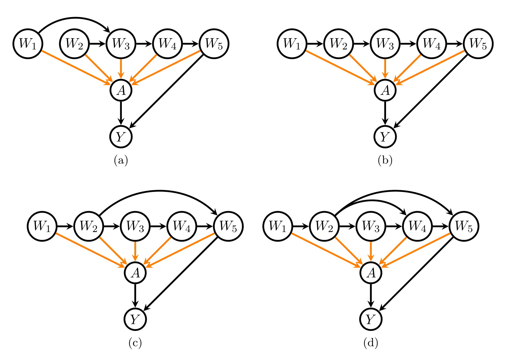
Example 8. Figure 10의 네 그래프를 봅시다. 모두 \(\mathbf{M} = \emptyset\)이고 \(\mathbf{O}\)는 단일 노드 \(W_5\)로 이루어져 있습니다. 따라서 NP-\(\mathbf{O}\) 효율성을 확인하려면 Theorem 19의 조건 2)와 3)만 점검하면 됩니다.
- (a): \(\mathrm{pa}_{\mathcal{G}}(W_3) = \{W_1, W_2\}\)가 \(\mathrm{pa}_{\mathcal{G}}(W_2) \cup \{W_2\} = \{W_2\}\)의 부분집합이 아니므로 조건 2가 \(j = 2\)에서 실패 → 비효율적. 이 그래프에서 \(\mathbf{W}\)는 \((W_1, W_2, W_3, W_4, W_5)\)와 \((W_2, W_1, W_3, W_4, W_5)\)의 두 가지로 위상 정렬될 수 있습니다(위 필요조건 3의 예시).
- (b): 조건 2)와 4)가 성립 → 효율적.
- (c): \(\mathrm{pa}_{\mathcal{G}}(W_5) = \{W_2, W_4\}\)가 \(\{W_4\} \cup \mathrm{pa}_{\mathcal{G}}(W_4)\)의 부분집합이 아니므로 조건 2가 \(j = 4\)에서 실패 → 비효율적. 이 그래프에서는 (21)이 성립하므로, (21)은 필요조건이지만 충분조건은 아님을 보여 줍니다.
- (d): 조건 2)와 3)이 성립 → 효율적.
(c)와 (d)의 비교가 핵심 성질을 드러냅니다. 노드 \(W_j\)가 \(l > 1\)에 대해 \(W_{j+l}\)의 부모이면, \(1 \le h < l\)인 모든 \(W_{j+h}\)의 부모이기도 해야 합니다. (c)에서는 \(W_2\)가 \(W_5\)의 부모지만 \(W_4\)의 부모가 아니어서 이 조건이 깨집니다.
위 모든 주장은 \(\mathbf{W}\)의 노드들에서 \(A\)로 가는 주황색 화살표들이 일부 없더라도 그대로 유효합니다.
6.3.3 Example 9 — 매개변수 쪽 조건의 검증 (Figure 11)
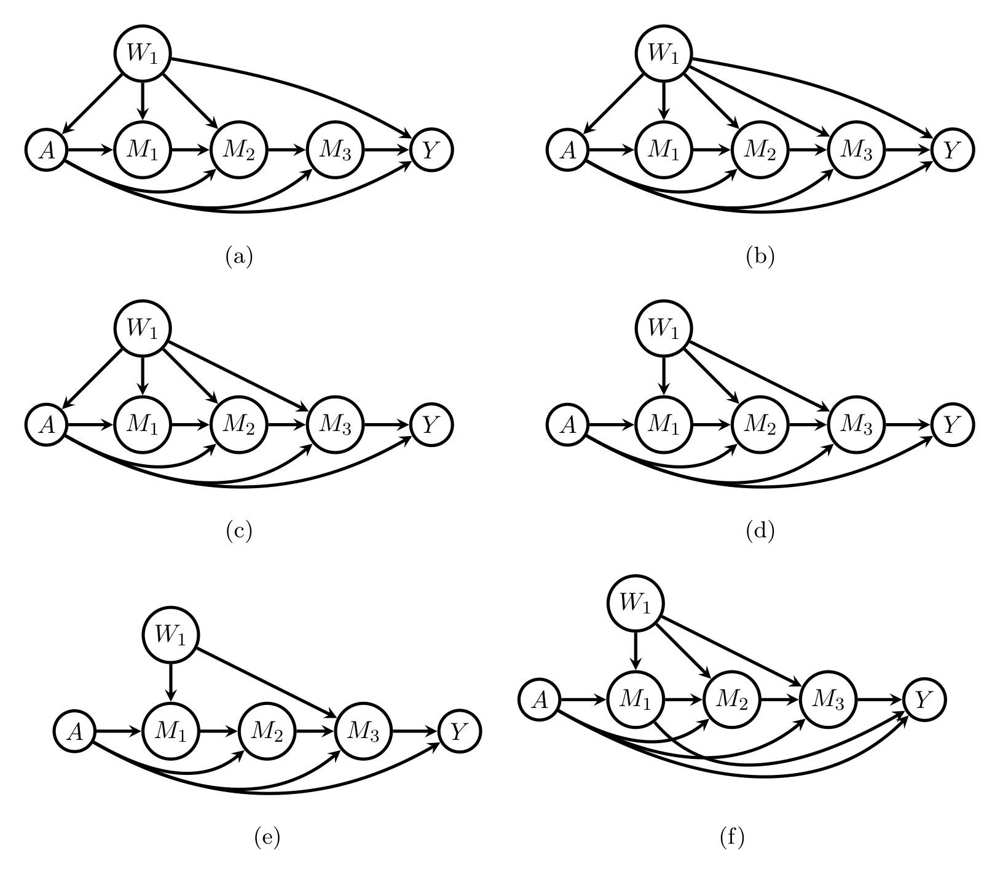
Example 9. Figure 11의 그래프들을 봅시다. 모두 \(\mathbf{W} = \mathbf{O}\)가 단일 노드 \(W_1\)로 이루어져 있고 \(\mathbf{M} = \{M_1, M_2, M_3\}\)입니다. 그래프 (a), (b), (c)에서는 \(\mathbf{O} = \mathbf{O}_{\min}\)이고 (d), (e), (f)에서는 \(\mathbf{O}_{\min} = \emptyset\)입니다. \(J = 1\)이므로 조건 3)과 4)만 점검하면 됩니다.
그래프 판정 이유 (a) 비효율 \(W_1 \notin \mathrm{pa}_{\mathcal{G}}(M_3)\) → 필요조건 (23) 위배 (b) 효율 조건 3)과 4)가 모두 성립 (c) 비효율 \(\mathbf{O}_{\min} = \{W_1\}\)인데 \(W_1 \notin \mathrm{pa}_{\mathcal{G}}(Y)\) → 조건 3) 실패 (d) 효율 \(\mathbf{O}_{\min} = \emptyset\)이고 \(A \in \mathrm{pa}_{\mathcal{G}}(Y)\) → 조건 3) 성립, 조건 4)도 성립 (e) 비효율 \(\mathrm{pa}_{\mathcal{G}}(M_3) = \{W_1, M_2\} \not\subset \{M_2\} \cup \mathrm{pa}_{\mathcal{G}}(M_2) = \{M_1, M_2\}\) → 조건 4) 실패 (f) 비효율 \(\mathrm{pa}_{\mathcal{G}}(Y) = \{A, M_1, M_3\} \not\subset \{M_3\} \cup \mathrm{pa}_{\mathcal{G}}(M_3) = \{W_1, M_2, M_3\}\) → 조건 4) 실패
6.3.4 Example 10 — 종합 예시 (Figure 12)
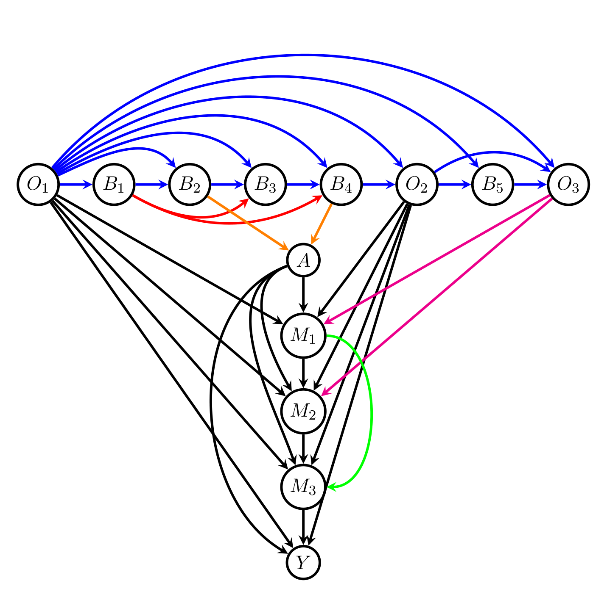
Example 10. Figure 12의 DAG를 봅시다. \(J = 8\), \(T = 3\)이고
\[\mathbf{W} = (W_1, \dots, W_8) = (O_1, B_1, B_2, B_3, B_4, O_2, B_5, O_3), \quad \mathbf{O} = \{O_1, O_2, O_3\}, \quad \mathbf{O}_{\min} = \{O_1, O_2\}\]
입니다. Theorem 19의 조건 1)–4)가 모두 성립하므로 NP-\(\mathbf{O}\) 추정량은 효율적입니다. 엣지별 역할은 다음과 같습니다.
색 엣지 역할 파랑 \(\mathbf{W}\) 내부의 사슬 및 \(O_1\)의 건너뛰기 조건 1)과 2)에 모두 필요. 하나라도 없으면 NP-\(\mathbf{O}\)가 비효율적이 됩니다 빨강 \(B_1 \to B_3\), \(B_1 \to B_4\) 조건 1)은 이들에 아무 제약을 두지 않습니다. 둘 다 없거나 \(B_1 \to B_3\)만 있으면 조건 2)가 성립하지만, \(B_1 \to B_4\)만 있으면 조건 2)가 실패합니다 주황 \(\mathbf{W} \setminus \mathbf{O}\)에서 \(A\)로 조건 1)–4) 어느 것도 이들의 존재·부재에 제약을 두지 않습니다 검정 \(\mathbf{O}\)·\(A\)·\(\mathbf{M}\)·\(Y\) 사이 조건 3)과 4)에 모두 필요 자홍 \(O_3 \to M_1\), \(O_3 \to M_2\) 빨간 화살표와 유사한 요구. \(O_3 \to M_1\)만 있거나 둘 다 없어도 조건 4)는 유효하지만, \(O_3 \to M_2\)가 있으면 \(O_3 \to M_1\)도 있어야 조건 4)가 성립합니다 초록 \(M_1 \to M_3\) 없어도 Theorem 19의 조건들이 유효합니다
6.4 식별과 효율적 NP-\(\mathbf{O}\) 추정 사이의 연결
Theorem 19는 다음의 흥미로운 따름정리를 갖습니다.
\(\mathcal{G}\)를 정점 집합 \(\mathbf{V}\)의 DAG, \(A\)와 \(Y\)를 \(\mathbf{V}\)의 서로 다른 두 정점, \(A\)는 점 개입에 대응한다고 하자. \(\mathbf{O} = \mathbf{O}(A,Y,\mathcal{G})\), \(\mathbf{O}_{\min}\)을 앞서와 같이 정의하고 \(\mathbf{O}_{\min} \ne \emptyset\)이라 하자. \(\mathbf{M} = \mathrm{cn}(A,Y,\mathcal{G}) \setminus \{Y\}\)라 하자.
\(A\), \(Y\), 그리고 매개변수 \(\mathbf{M}\)에만 의존하는 \(\chi_a(P;\mathcal{G})\)의 식별 공식이 존재하면, \(\chi_a(P;\mathcal{G})\)의 NP-\(\mathbf{O}\) 추정량은 베이지안 네트워크 \(M(\mathcal{G})\) 하에서 전역적으로 효율적일 수 없다.
Theorem 21의 증명 흐름 (귀류법)
1단계. Lemma 16에 의해 일반성을 잃지 않고 \(\mathrm{irrel}(A,Y,\mathcal{G}) = \emptyset\)이라 가정합니다.
2단계. NP-\(\mathbf{O}\) 추정량이 \(M(\mathcal{G})\) 하에서 전역 효율적이라고 가정합니다. 그러면 Theorem 19에 의해 \(\mathbf{O}_{\min}\)의 모든 정점이 \(Y\)의 부모이자 \(\mathbf{M}\)의 모든 정점의 부모여야 합니다(조건 3과 (23)).
3단계. 또한 (22)에 의해 \(A\)가 \(M_1\)의 부모이고 각 \(M_k\)가 \(M_{k+1}\)의 부모여야 합니다.
4단계. \(\mathcal{G}[\{A,Y\} \cup \mathbf{M}]\)을 \(\mathcal{G}\)의 정점 집합 \(\{A,Y\} \cup \mathbf{M}\)으로의 잠재 사영 (Evans & Richardson, 2014)이라 합시다. \(\mathbf{O}_{\min}\)이 비어 있지 않으므로, 그 안의 정점이 \(A, M_1, \dots, M_K, Y\) 전체의 공통 부모 역할을 하여 잠재 사영에서 이들을 양방향 엣지로 잇습니다. 따라서 \(\mathcal{G}[\{A,Y\} \cup \mathbf{M}]\)에서 노드 \(A, M_1, M_2, \dots, M_K, Y\)는 모두 같은 지구(district)에 속합니다 (Shpitser et al., 2014).
5단계. ID 알고리즘의 완전성 (Tian & Pearl, 2002; Shpitser & Pearl, 2008)에 의해, \(\{A,Y\} \cup \mathbf{M}\)만 관측될 때 \(\chi_a(P;\mathcal{G})\)는 식별되지 않습니다. 이는 가정에 모순입니다. \(\blacksquare\)
이 정리는 식별의 풍요로움과 추정의 효율성 사이의 긴장을 드러냅니다.
- 어떤 개입 평균이 \(\mathbf{O}\)를 보지 않고도 \(A, Y, \mathbf{M}\)만으로 식별된다는 것은, 그 그래프가 매개 경로 쪽에 풍부한 정보를 담고 있다는 뜻입니다.
- 그런데 NP-\(\mathbf{O}\) 추정량은 정의상 \(\mathbf{M}\)을 전혀 쓰지 않습니다. 따라서 그 정보를 구조적으로 버립니다.
- 결론적으로 “두 갈래로 식별할 수 있는 그래프에서는, 한 갈래만 쓰는 추정량이 효율적일 수 없다”는 것입니다.
Theorem 21은 특히 Figure 8의 앞문 DAG에서 NP-\(\mathbf{O}\) 추정량이 효율적이지 않음을 함의합니다. 앞문 공식이 정확히 “\(A\), \(Y\), \(M\)만으로 이루어진 식별 공식”이기 때문입니다.
6.5 효율 추정에 불필요한 변수를 찾는 건전한 알고리즘
§6.3에서 특정 DAG 구성에 대해 \(\chi^1_{P,a,\mathrm{eff}}(\mathbf{V};\mathcal{G})\)가 \(\mathbf{V}\)에 오직 \(\mathbf{O}, A, Y\)를 통해서만 의존함을 보았습니다. 이 절은 \(\chi^1_{P,a,\mathrm{eff}}\)가 \(\mathbf{V} \setminus [\mathbf{O} \cup \{A,Y\}]\)의 변수에 의존하더라도, \(\mathbf{V}\)의 진부분집합에만 의존할 수 있음을 논합니다. 연구 설계의 관점에서 효율 추정에 무관한 변수는 측정할 필요가 없으므로 이를 알아내는 것이 유용합니다.
동기가 되는 예시: Figure 10 (c)의 DAG를 봅시다. Theorem 18의 (19)를 적용하고 DAG의 d-분리를 이용하면
\[ \begin{aligned} \chi^1_{P,a,\mathrm{eff}}(\mathbf{V};\mathcal{G}) =\ & \frac{I_a(A)}{\pi_a(W_5;P)}Y - \frac{I_a(A)}{\pi_a(W_5;P)}b_a(W_5;P) + b_a(W_5;P) - \chi_a(P;\mathcal{G}) \\ & + E_P[b_a(W_5;P) \mid W_3, W_4] - E_P[b_a(W_5;P) \mid W_2, W_4] \\ & + E_P[b_a(W_5;P) \mid W_2, W_3] - E_P[b_a(W_5;P) \mid W_3] \end{aligned} \]
를 얻습니다(자세한 계산은 부록의 Example 11). \(W_1\)이 이 공식에 나타나지 않으므로, \(W_1\)은 \(\chi_a(P;\mathcal{G})\)의 효율 추정에서 무시할 수 있습니다.
Algorithm 2는 \(\chi^1_{P,a,\mathrm{eff}}(\mathbf{V};\mathcal{G})\)의 가능한 단순화를 건전하게(soundly) 점검합니다. 그런 단순화는 어떤 변수들이 효율적 영향함수 공식에 아예 등장하지 않음을 함의할 수 있습니다.
- 알고리즘이 \(\chi^1_{P,a,\mathrm{eff}}(\mathbf{V};\mathcal{G})\)가 의존하는 가장 작은 \(\mathbf{V}\)의 부분집합을 반환하는지는 미해결 문제로 남아 있습니다.
- 다만 “\(\chi^1_{P,a,\mathrm{eff}}(\mathbf{V};\mathcal{G})\)가 \(\psi_{P,a}[\mathbf{O};\mathcal{G}]\)로 단순화되는가?”라는 질의에 대해서는 건전하고 완전합니다. 즉 Theorem 19의 판정기로서는 완벽하게 작동합니다.
Algorithm 2: χ¹_{P,a,eff}(V;G) = ψ_{P,a}(O;G) 여부에 대한 건전·완전 점검
────────────────────────────────────────────────────────────────────
input : 정점 집합 V를 갖는 DAG G와 A ∈ an_G(Y)인 서로 다른 두 노드 A, Y ∈ V
output: 모든 P ∈ M(G)에 대해 χ¹_{P,a,eff}(V;G) = ψ_{P,a}(O;G)인지에 대한 답과,
답이 부정이면 가능한 한 단순화된 χ¹_{P,a,eff}의 공식
1 procedure checkEfficient(A, Y, G)
2 G = prune(A, Y, G) # Algorithm 1
3 (W, A, M, Y) = (W_1,...,W_J, A, M_1,...,M_K, Y) = topological_sort(V, G)
4 M_{K+1} = Y
5 O = O(A, Y, G)
6 O_1,...,O_T = topological_sort(O)
7 efficient_nondesc = False
8 efficient_desc = False
# ── 비후손(W) 쪽 점검 ──────────────────────────────
9 if O \ {O_T} ⊂ pa_G(O_T) and J > 1 then
10 j = J - 1
11 while pa_G(W_{j+1}) \ {W_j} ⊂ pa_G(W_j) and j ≥ 2 do j = j - 1
12 if j ≥ 2 then
13 offenders_nondesc = {j} ∪ get_offenders_nondesc(G, W, O, j-1)
14 χ¹,non-desc = b_a(O;P) - χ_a(P;G)
+ Σ_{h ∈ offenders_nondesc} { E[b_a(O;P) | pa_G(W_h), W_h]
- E[b_a(O;P) | pa_G(W_{h+1})] }
15 else
16 χ¹,non-desc = b_a(O;P) - χ_a(P;G)
17 efficient_nondesc = True
18 else if J > 1 then
19 offenders_nondesc = get_offenders_nondesc(G, W, O, J-1)
20 χ¹,non-desc = E[b_a(O;P) | W_J, pa_G(W_J)] - χ_a(P;G)
+ Σ_{h ∈ offenders_nondesc} { E[b_a(O;P) | pa_G(W_h), W_h]
- E[b_a(O;P) | pa_G(W_{h+1})] }
21 else if J = 1 then
22 χ¹,non-desc = b_a(O;P) - χ_a(P;G)
23 efficient_nondesc = True
24 else if J = 0 then
25 χ¹,non-desc = 0
26 efficient_nondesc = True
# ── 후손(M) 쪽 점검 ────────────────────────────────
27 if A ∪ O_min ⊂ pa_G(Y) and K ≥ 1 then
28 χ¹,desc = I_a(A) Y π_a(O_min;P)^{-1}
29 k = K + 1
30 while k ≥ 2 and pa_G(M_k) ⊂ pa_G(M_{k-1}) ∪ {M_{k-1}} do k = k - 1
31 if k ≥ 2 then
32 offenders_desc = {k} ∪ get_offenders_desc(G, M, O, O_min, k-1)
33 χ¹,desc += Σ_{h ∈ offenders_desc} { E[T_{P,a,G} | pa_G(M_{h-1}), M_{h-1}]
- E[T_{P,a,G} | pa_G(M_h)] }
34 if {A} ∪ O = pa_G(M_1) then
35 χ¹,desc -= I_a(A) b_a(O;P) π_a(O_min;P)^{-1}
36 else
37 χ¹,desc -= E[T_{P,a,G} | pa_G(M_1)]
38 else
39 χ¹,desc -= I_a(A) b_a(O;P) π_a(O_min;P)^{-1}
40 efficient_desc = True
41 else if K ≥ 1 then
42 offenders_desc = {K+1} ∪ get_offenders_desc(G, M, O, O_min, K)
43 χ¹,desc = Σ_{h ∈ offenders_desc} { E[T_{P,a,G} | pa_G(M_{h-1}), M_{h-1}]
- E[T_{P,a,G} | pa_G(M_h)] }
44 if {A} ∪ O = pa_G(M_1) then
45 χ¹,desc -= I_a(A) b_a(O;P) π_a(O_min;P)^{-1}
46 else
47 χ¹,desc -= E[T_{P,a,G} | pa_G(M_1)]
48 else
49 χ¹,desc = I_a(A) π_a(O_min;P)^{-1} (Y - b_a(O;P)); efficient_desc = True
# ── 결합 ──────────────────────────────────────────
51 χ¹_{P,a,eff} = χ¹,non-desc + χ¹,desc
52 efficient = efficient_desc AND efficient_nondesc
53 return efficient, χ¹_{P,a,eff}
────────────────────────────────────────────────────────────────────Algorithm 3: (66), (69), (70) 중 최소 하나를 만족하지 않는 매개변수 노드를 찾는 서브루틴
────────────────────────────────────────────────────────────────────
input : DAG G, 매개변수 노드 M, 최적 조정집합 O, 최적 최소 조정집합 O_min, 정수 init
output: (66), (69), (70) 중 최소 하나를 만족하지 않는 M의 노드 집합
procedure get_offenders_desc(G, M, O, O_min, init)
offender_desc = ∅
for i = init, ..., 2 do
if {A} ∪ O_min ⊄ pa_G(M_1)
or pa_G(M_i) ⊄ pa_G(M_{i-1}) ∪ {M_{i-1}}
or Y ⊥̸⊥_G pa_G(M_{i-1}) ∪ {M_{i-1}} \ pa_G(M_i) | pa_G(M_i) then
offender_desc = offender_desc ∪ {i}
return offender_desc
────────────────────────────────────────────────────────────────────Algorithm 4: (60)을 만족하지 않는 비매개변수 노드를 찾는 서브루틴
────────────────────────────────────────────────────────────────────
input : DAG G, 비매개변수 노드 W, 최적 조정집합 O, 정수 init
output: (60)을 만족하지 않는 W의 노드 집합
procedure get_offenders_nondesc(G, W, O, init)
offender_nondesc = ∅
for i = init, ..., 1 do
I_i ≡ [pa_G(W_i) ∪ {W_i}] ∩ pa_G(W_{i+1})
if O \ I_i ⊥̸⊥_G [pa_G(W_i) ∪ {W_i}] △ pa_G(W_{i+1}) | I_i then
offender_nondesc = offender_nondesc ∪ {i}
return offender_nondesc
────────────────────────────────────────────────────────────────────7. 논의 (Discussion)
논문은 다음 여덟 개의 열린 문제를 남기며 마무리합니다. 저자들은 이들 중 여럿을 현재 연구 중이라고 밝히고 있습니다.
- Example 4의 1번·8번 조정집합처럼, 서로를 지배하지는 못하지만 나머지 전부를 지배하는 모든 시간의존 조정집합의 부류를 특성화하는 그래프 기준의 유도.
- 결합 개입에 대해 최적 시간의존 조정집합이 존재하는 DAG의 특성화.
- 결합 개입에 대해 최적 시간의존 조정집합이 존재하면서 그 최적 집합이 시간독립인 DAG 부분부류의 특성화.
- 최소 크기의 조정집합들 가운데 최적인 것이 존재하는 DAG의 특성화.
- 최적 시간의존 조정집합이 존재하는 DAG에 대해, 비모수 최적조정 추정량이 베이지안 네트워크 하에서 전역 효율적인지를 판정하는 건전·완전 알고리즘의 유도.
- 관측 가능한 조정집합이 존재하는 잠재변수 DAG에 대해, 관측 가능한 조정집합들 가운데 최적인 것이 존재하는 부분부류의 특성화.
- 잠재변수 DAG에 대한 \(\chi_a(P;\mathcal{G})\)의 효율적 영향함수의 일반 표현식과 비모수 전역 효율 추정량의 유도.
- 관측 가능한 최적 조정집합이 존재하는 잠재변수 DAG에 대해, 비모수 최적조정 추정량이 관측 변수들의 베이지안 네트워크 주변모형 하에서 전역 효율적인지를 판정하는 건전·완전 알고리즘의 유도.
부록 A. 증명 (Appendix A. Main proofs)
부록은 네 부분으로 구성됩니다. A.1 §5 결과의 증명, A.2 §6 결과의 증명, A.3 Algorithm 2의 건전성 증명과 예시, A.4 보조 결과들입니다. Lemma 4·5·23·24 및 Theorem 14·21의 증명 흐름은 이미 본문 해당 절에 풀어 두었으므로, 여기서는 아직 다루지 않은 결과들을 정리합니다.
A.1 §5 결과의 증명에서 등장하는 보조 결과
DAG \(\mathcal{G}\)와 서로소인 정점 \(A\), \(\mathbf{B}\)가 주어졌을 때, \(A \perp\!\!\!\perp_{\mathcal{G}} \mathbf{B} \setminus \mathbf{C} \mid \mathbf{C}\)이면서 어떤 진부분집합 \(\mathbf{C}'\)도 \(A \perp\!\!\!\perp_{\mathcal{G}} \mathbf{B} \setminus \mathbf{C}' \mid \mathbf{C}'\)을 만족하지 않는 \(\mathbf{B}\)의 부분집합 \(\mathbf{C}\)가 유일하게 존재한다.
증명 흐름 (그래포이드 공리의 활용): 이 결과는 d-분리가 그래포이드(graphoid)라는 사실의 귀결입니다 (Geiger et al., 1990). 서로 다른 두 최소 집합 \(\mathbf{C}_1\), \(\mathbf{C}_2\)가 있다고 가정하고 \(\mathbf{I} = \mathbf{C}_1 \cap \mathbf{C}_2\), \(\mathbf{W}_1 = \mathbf{C}_1 \setminus \mathbf{I}\), \(\mathbf{W}_2 = \mathbf{C}_2 \setminus \mathbf{I}\), \(\mathbf{R} = \mathbf{B} \setminus (\mathbf{C}_1 \cup \mathbf{C}_2)\)라 놓습니다.
- \(A \perp\!\!\!\perp_{\mathcal{G}} (\mathbf{R}, \mathbf{W}_2) \mid \mathbf{W}_1, \mathbf{I}\) 및 \(A \perp\!\!\!\perp_{\mathcal{G}} (\mathbf{R}, \mathbf{W}_1) \mid \mathbf{W}_2, \mathbf{I}\)
- 약결합(weak union) 공리 → \(A \perp\!\!\!\perp_{\mathcal{G}} \mathbf{R} \mid (\mathbf{W}_1, \mathbf{W}_2), \mathbf{I}\) … (29)
- 분해(decomposition) 공리 → \(A \perp\!\!\!\perp_{\mathcal{G}} \mathbf{W}_2 \mid \mathbf{W}_1, \mathbf{I}\) 및 \(A \perp\!\!\!\perp_{\mathcal{G}} \mathbf{W}_1 \mid \mathbf{W}_2, \mathbf{I}\) … (30)
- 교차(intersection) 공리 → \(A \perp\!\!\!\perp_{\mathcal{G}} (\mathbf{W}_1, \mathbf{W}_2) \mid \mathbf{I}\) … (31)
- 수축(contraction) 공리 ((29) + (31)) → \(A \perp\!\!\!\perp_{\mathcal{G}} \mathbf{B} \setminus \mathbf{I} \mid \mathbf{I}\)
\(\mathbf{C}_1 \ne \mathbf{C}_2\)이면 \(\mathbf{I}\)는 둘 모두의 진부분집합이 되어 최소성에 모순입니다. \(\blacksquare\)
A.1.1 Theorem 9의 증명에서 쓰이는 성질 (O)
Theorem 9의 파트 (2)를 증명하는 데 다음 성질이 반복적으로 원용됩니다.
성질 (O). 임의의 \(O \in \mathbf{O}\)에 대해, \(O\)에서 \(Y\)로 가는 유향 경로가 존재하여, \((A,Y)\)에 대한 임의의 조정집합 \(\mathbf{Z}\)에 대해 그 경로가 \(\mathbf{Z}\)의 노드와 (많아야 노드 \(O\)에서를 제외하고는) 만나지 않는다.
증명: \(\mathbf{O}\)의 정의상 \(O\)는 \(\mathrm{cn}(A,Y;\mathcal{G})\)의 어떤 노드의 부모입니다. 그 노드가 \(Y\)이면 경로 \(O \to Y\)에 대해 자명하게 성립합니다. 그렇지 않으면, \(\mathrm{cn}(A,Y;\mathcal{G}) \setminus \{Y\}\)의 임의 노드 \(M\)에서 \(Y\)로 가면서 오직 \(\mathrm{cn}(A,Y;\mathcal{G})\)의 노드만 지나는 유향 경로가 존재합니다. 임의의 조정집합 \(\mathbf{Z}\)에 대해 \(\mathbf{Z} \cap \mathrm{cn}(A,Y;\mathcal{G}) = \emptyset\)이므로 주장이 성립합니다. \(\blacksquare\)
성질 (O)를 이용한 \(A \perp\!\!\!\perp_{\mathcal{G}} [\mathbf{O}_{\min} \setminus \mathbf{Z}_{\min}] \mid \mathbf{Z}_{\min}\)의 증명: \(\mathbf{Z}_{\min}\)이 주어졌을 때 \(A\)와 d-분리되지 않는 \(O \in \mathbf{O}_{\min} \setminus \mathbf{Z}_{\min}\)가 있다고 가정합시다. \(\alpha\)를 \(\mathbf{Z}_{\min}\) 하에서 열려 있는 \(A\)–\(O\) 경로라 하면, 성질 (O)에 의해 \(\mathbf{Z}_{\min}\) 하에서 열려 있는 \(O\)–\(Y\) 유향 경로 \(\phi\)가 존재합니다. \(\alpha\)와 \(\phi\)를 이으면 \(\mathbf{Z}_{\min}\) 하에서 열려 있는 \(A\)–\(Y\) 비인과 경로가 되는데, 이는 \(\mathbf{Z}_{\min}\)이 조정집합이라는 사실에 모순입니다. \(\blacksquare\)
두 번째 주장 \(Y \perp\!\!\!\perp_{\mathcal{G}} [\mathbf{Z}_{\min} \setminus \mathbf{O}_{\min}] \mid \mathbf{O}_{\min}, A\)의 증명은 훨씬 깁니다. 귀류법으로 \(Y \not\perp\!\!\!\perp_{\mathcal{G}} X^* \mid \mathbf{O}_{\min}, A\)인 \(X^* \in \mathbf{Z}_{\min} \setminus \mathbf{O}_{\min}\)이 있다고 두면, Shpitser et al. (2010)의 Theorem 5에 의해 \(X^* \notin \mathrm{de}_{\mathcal{G}}(A)\)이고 \(X^* \notin \mathrm{forb}(A,Y;\mathcal{G})\)입니다. 이후 열려 있는 경로 \(\eta^*\)가 반드시 \(\mathbf{O} \setminus \mathbf{O}_{\min}\)의 정점과 만남을 보이고, 그로부터 모순을 이끌어 냅니다.
A.2 §6 결과의 증명에서 등장하는 정의와 보조정리
\[ F(A,Y,\mathcal{G}) \equiv \{V_j \in \mathbf{V} : \mathcal{G} \text{에서 } A \text{와 } Y \text{ 사이에 } V_j \text{를 유일한 분기점으로 갖는 경로가 존재}\} \]
\[ \mathrm{dir}(A,Y,\mathcal{G}) \equiv \{Y\} \cup \{V_j \in \mathbf{V} : V_j \text{가 } \mathcal{G} \text{에서 } A \text{와 만나지 않는 } Y \text{로의 유향 경로를 가짐}\} \setminus F(A,Y,\mathcal{G}) \]
\(M(\mathcal{G})\)를 DAG \(\mathcal{G}\)가 표현하는 베이지안 네트워크, \(Y\)와 \(A\)를 서로소인 단일 정점, \(\mathrm{irrel}(A,Y,\mathcal{G}) = \emptyset\)이라 하자. 그러면
- \(J \ge 1\)이면 모든 \(j \in \{1, \dots, J\}\)에 대해 \[E_P\big[J_{P,a,\mathcal{G}} \mid W_j, \mathrm{pa}_{\mathcal{G}}(W_j)\big] = E_P\big[b_a(\mathbf{O};P) \mid W_j, \mathrm{pa}_{\mathcal{G}}(W_j)\big]\]
- \(K \ge 1\)이면 모든 \(k \in \{1, \dots, K\}\)에 대해 \[E_P\big[J_{P,a,\mathcal{G}} \mid M_k, \mathrm{pa}_{\mathcal{G}}(M_k)\big] = E_P\big[T_{P,a,\mathcal{G}} \mid M_k, \mathrm{pa}_{\mathcal{G}}(M_k)\big]\]
- \(Y\)와 그 부모에 대해서도 대응하는 치환이 성립한다.
Lemma 26의 역할: 이 보조정리가 (18) → (19)의 변환을 가능하게 합니다. 비후손 쪽에서는 \(J_{P,a,\mathcal{G}}\)를 결과회귀 \(b_a(\mathbf{O};P)\)로, 후손(매개변수) 쪽에서는 \(T_{P,a,\mathcal{G}}\)로 바꿔 쓸 수 있다는 것이 요지입니다.
A.2.1 A.4의 보조 결과들
\(\mathbf{A} \perp\!\!\!\perp_{\mathcal{G}} \mathbf{Z}_1 \setminus \mathbf{Z}_2 \mid \mathbf{Z}_2\)이면 모든 \(P \in M(\mathcal{G})\)에 대해
\[ E_P\left[\frac{1}{\pi_{\mathbf{a}}(\mathbf{Z}_2;P)} \,\middle|\, \mathbf{A} = \mathbf{a}, \mathbf{Z}_1\right] = \frac{1}{\pi_{\mathbf{a}}(\mathbf{Z}_1;P)} \]
증명: 양변에 \(\pi_{\mathbf{a}}(\mathbf{Z}_1;P) = P(\mathbf{A} = \mathbf{a} \mid \mathbf{Z}_1)\)을 곱하면
\[ E_P\left[\frac{1}{\pi_{\mathbf{a}}(\mathbf{Z}_2;P)} \,\middle|\, \mathbf{A} = \mathbf{a}, \mathbf{Z}_1\right] P(\mathbf{A} = \mathbf{a} \mid \mathbf{Z}_1) = E_P\left[\frac{I_{\mathbf{a}}(\mathbf{A})}{\pi_{\mathbf{a}}(\mathbf{Z}_2;P)} \,\middle|\, \mathbf{Z}_1\right] = E_P\left[\frac{E_P(I_{\mathbf{a}}(\mathbf{A}) \mid \mathbf{Z}_2, \mathbf{Z}_1)}{\pi_{\mathbf{a}}(\mathbf{Z}_2;P)} \,\middle|\, \mathbf{Z}_1\right] = 1 \]
마지막 등식은 \(\mathbf{A} \perp\!\!\!\perp \mathbf{Z}_1 \setminus \mathbf{Z}_2 \mid \mathbf{Z}_2\)가 \(E_P(I_{\mathbf{a}}(\mathbf{A}) \mid \mathbf{Z}_2, \mathbf{Z}_1) = \pi_{\mathbf{a}}(\mathbf{Z}_2;P)\)를 함의하기 때문입니다. \(\blacksquare\)
\(\mathbf{Z}\)가 DAG \(\mathcal{G}\)에서 \((A,Y)\)에 대한 최소 조정집합이면, \(\mathbf{Z}\)의 모든 \(W\)에 대해 \(\mathbf{Z} \setminus W\)가 주어졌을 때 열려 있는 \(W\)–\(A\) 경로 \(\delta\)가 존재한다.
증명 흐름: \(\mathbf{Z}\)가 최소이므로 (Shpitser et al., 2010) \(\mathbf{Z} \setminus W\)로 조건화하면 열리지만 \(\mathbf{Z}\)로 조건화하면 차단되는 비인과 \(A\)–\(Y\) 경로 \(\gamma\)가 존재합니다. \(\gamma\)는 반드시 \(W\)와 만나야 합니다(만나지 않으면 \(\mathbf{Z}\)로 조건화해도 열려 있을 것이기 때문). \(\delta\)를 \(A\)에서 \(\gamma\) 위 \(W\)의 첫 출현까지의 부분경로로 잡으면 됩니다. \(\blacksquare\)
\(V \in \mathrm{dir}(A,Y,\mathcal{G})\)이고 \(W \in \mathrm{indir}(A,Y,\mathcal{G})\)이면 \(V \perp\!\!\!\perp_{\mathcal{G}} W \mid A, F(A,Y,\mathcal{G})\)이다.
증명 흐름: \(V\)와 \(W\) 사이의 어떤 경로도 \((A, \mathbf{F})\) 하에서 열릴 수 없음을, (i) 유향 경로, (ii) 비유향이면서 분기점이 정확히 하나인 경로, (iii) 비유향이면서 충돌자가 최소 하나 있는 경로의 세 경우로 나누어 각각 모순을 이끌어 냅니다. 핵심 도구는 “\(W\)가 \(A\)의 조상”이라는 사실과 “\(V\)가 \(Y\)이거나 \(A\)와 만나지 않는 \(Y\)로의 유향 경로를 가진다”는 사실을 결합해 문제의 분기점이 \(F(A,Y,\mathcal{G})\)에 속함을 보이는 것입니다.
\(\mathcal{G}\)가 DAG이고 \(A \in \mathrm{an}_{\mathcal{G}}(Y)\)인 서로 다른 두 정점 \(A\), \(Y\)가 있으며 \(\mathrm{irrel}(A,Y,\mathcal{G}) = \emptyset\)이라 하자. \(\mathbf{W} \equiv \mathrm{de}^c_{\mathcal{G}}(A) = (W_1, \dots, W_J)\)(\(J \ge 1\)), \(\mathbf{O} \equiv \mathbf{O}(A,Y,\mathcal{G}) = (O_1, \dots, O_T)\)를 위상 정렬하고 \(\mathbf{O} \setminus O_T \subset \mathrm{pa}_{\mathcal{G}}(O_T)\)라 가정하자. \(j \in \{1, \dots, J-1\}\)에 대해 \(\mathbf{I}_j \equiv [\mathrm{pa}_{\mathcal{G}}(W_j) \cup \{W_j\}] \cap \mathrm{pa}_{\mathcal{G}}(W_{j+1})\)이라 하자. 그러면
- \(W_J = O_T\)이고, \(J \ge 2\)이면 \(W_{J-1} \in \mathrm{pa}_{\mathcal{G}}(W_J)\)이다.
- \(J \ge 2\)이고 어떤 \(1 < j^* \le J-1\)에 대해 \(j \in \{j^*, \dots, J-1\}\)에서 \(\mathrm{pa}_{\mathcal{G}}(W_{j+1}) \setminus \{W_j\} \subset \mathrm{pa}_{\mathcal{G}}(W_j)\)가 성립하면, \(W_j \in \mathrm{pa}_{\mathcal{G}}(W_{j+1})\) (\(j \in \{j^*-1, \dots, J-1\}\))이고 \(j \in \{j^*, \dots, J-1\}\)에서 (60)이 성립한다.
- \(J \ge 2\)이고 어떤 \(j^* \in \{2, \dots, J-1\}\)에서 위 포함관계가 실패하며 \(j^* < J-1\)일 때 \(j \in \{j^*+1, \dots, J-1\}\)에서는 성립하면, \(j = j^*\)에서 (60)이 실패한다.
\(\mathrm{irrel}(A,Y;\mathcal{G}) = \emptyset\)이고 \(\mathbf{M} \equiv \mathrm{de}_{\mathcal{G}}(A) \setminus \{A, Y\} \ne \emptyset\)이라 하고 \((M_1, \dots, M_K)\)를 위상 정렬, \(M_0 \equiv A\), \(M_{K+1} \equiv Y\)라 하자. 어떤 \(k^* \ge 2\)에 대해 \(k \in \{k^*, \dots, K+1\}\)에서
\[ \mathrm{pa}_{\mathcal{G}}(M_k) \subset \mathrm{pa}_{\mathcal{G}}(M_{k-1}) \cup \{M_{k-1}\} \tag{82} \]
이 성립하면, \(M_K \in \mathrm{pa}_{\mathcal{G}}(Y)\)이고 모든 \(k \in \{k^*, \dots, K+1\}\)에 대해
- (i) \(M_{k-2} \in \mathrm{pa}(M_{k-1})\)
- (ii) \(Y \perp\!\!\!\perp_{\mathcal{G}} [M_{k-1}, \mathrm{pa}_{\mathcal{G}}(M_{k-1})] \setminus \mathrm{pa}_{\mathcal{G}}(M_k) \mid \mathrm{pa}_{\mathcal{G}}(M_k)\)
가 성립한다.
\(\mathcal{G}\)가 DAG이고 \(A \in \mathrm{an}_{\mathcal{G}}(Y)\), \(\mathrm{irrel}(A,Y,\mathcal{G}) = \emptyset\)이라 하자. \(\mathbf{W} \equiv \mathrm{de}^c_{\mathcal{G}}(A)\), \(\mathbf{O} \equiv \mathbf{O}(A,Y,\mathcal{G})\)를 위상 정렬한다. 그러면 \(M(\mathcal{G})\) 하에서 \(\mathbf{W}\)가 주어졌을 때의 \(Y\)의 법칙은 \((A, \mathbf{O})\)가 주어졌을 때의 \(Y\)의 법칙과 같고, 후자는 아무런 제약을 받지 않는다. 특히 조건부 기댓값 \(E(Y \mid \mathbf{W}) = E(Y \mid A, \mathbf{O})\)는 제약을 받지 않는다. 나아가 \((A, \mathbf{O})\)가 주어졌을 때의 \(Y\)의 법칙과 \(\mathbf{W} \cup \{A\}\)의 법칙은 변동 독립(variation independent)이다.
Theorem 19의 필요성(즉 완전성) 방향은 “조건이 깨지면 실제로 (20)이 성립하지 않는 \(P^*\)가 존재한다”를 보여야 합니다. 그런데 반례가 될 \(P^*\)를 만들려면 \(b_a(\mathbf{O};P)\)를 원하는 함수로 자유롭게 지정할 수 있어야 합니다. Lemma 32의 “\((A,\mathbf{O})\) 하의 \(Y\)의 법칙이 제약받지 않고, \(\mathbf{W} \cup \{A\}\)의 법칙과 변동 독립”이라는 결론이 바로 그 자유도를 보장합니다. Lemma 33과 Lemma 34가 이 자유도를 활용해 반례를 구성합니다.
Lemma 33은 \(J > 1\)이고 어떤 \(j\)에서 d-분리 기준 (60)이 실패하면 \(\chi^1_{P^*,a,\mathrm{eff}}\)가 (20)의 형태로 단순화되지 않는 \(P^* \in M(\mathcal{G})\)가 실제로 존재함을 보이고, Lemma 34는 매개변수 쪽에 대해 대응하는 결과를 보입니다. 구체적으로 Lemma 34의 첫 주장은
모든 \(P \in M(\mathcal{G})\)에 대해 \(E_P[T_{P,a,\mathcal{G}} \mid Y, \mathrm{pa}_{\mathcal{G}}(Y)] = T_{P,a,\mathcal{G}}\)일 필요충분조건은 \(\{A\} \cup \mathbf{O}_{\min} \subseteq \mathrm{pa}_{\mathcal{G}}(Y)\)인 것
이며, 이것이 Theorem 19의 조건 3의 필요성을 준다는 점에서 핵심적입니다.
A.3 Algorithm 2의 건전성과 두 개의 상세 예시
A.3.1 비후손 쪽의 상쇄 판정 기준 (60)
\(J > 1\)일 때 각 \(j \in \{1, \dots, J-1\}\)에 대해 \(\mathbf{I}_j \equiv [\mathrm{pa}_{\mathcal{G}}(W_j) \cup \{W_j\}] \cap \mathrm{pa}_{\mathcal{G}}(W_{j+1})\)이라 정의합니다. 만약
\[ \mathbf{O} \setminus \mathbf{I}_j \perp\!\!\!\perp_{\mathcal{G}} \Big[[\mathrm{pa}_{\mathcal{G}}(W_j) \cup \{W_j\}] \triangle \mathrm{pa}_{\mathcal{G}}(W_{j+1})\Big] \,\Big|\, \mathbf{I}_j \tag{60} \]
가 성립하면
\[ E_P[b_a(\mathbf{O};P) \mid \mathrm{pa}_{\mathcal{G}}(W_{j+1})] = E_P[b_a(\mathbf{O};P) \mid \mathbf{I}_j] = E_P[b_a(\mathbf{O};P) \mid \mathrm{pa}_{\mathcal{G}}(W_j), W_j] \]
가 되어, (19)에서 나오는 차이
\[ E_P[b_a(\mathbf{O};P) \mid \mathrm{pa}_{\mathcal{G}}(W_j), W_j] - E_P[b_a(\mathbf{O};P) \mid \mathrm{pa}_{\mathcal{G}}(W_{j+1})] \tag{61} \]
가 모든 \(P \in M(\mathcal{G})\)에 대해 상쇄됩니다. 즉 (60)은 (61)의 소거 여부를 판정하는 그래프 기준입니다.
중요한 단순화: Theorem 19의 증명에서 \(W_J = O_T\)임이 밝혀지므로, 만약
\[ \mathbf{O} \setminus O_T \subset \mathrm{pa}_{\mathcal{G}}(W_J) \tag{62} \]
가 성립하면 상황이 크게 단순해집니다. Lemma 30은 (62) 하에서 \(j = J-1\)에 대한 (60)이 \(\mathrm{pa}_{\mathcal{G}}(W_j) \setminus \{W_{j-1}\} \subset \mathrm{pa}_{\mathcal{G}}(W_{j-1})\)과 동치임을 보이며, 나아가 어떤 \(1 < j^* \le J-1\)에 대해
\[ \mathrm{pa}_{\mathcal{G}}(W_{j+1}) \subset \mathrm{pa}_{\mathcal{G}}(W_j) \cup \{W_j\} \tag{63} \]
가 \(j \in \{j^*, \dots, J-1\}\)에서 유효하면 그 구간에서 (60)이 성립하고, \(j = j^*-1\)에서는 (60)과 (63)이 동치임을 보입니다.
(60)은 d-분리를 확인해야 하지만 (63)은 집합의 포함관계만 확인하면 됩니다. 알고리즘이 먼저 (62)를 점검하고, 성립하면 값싼 (63)만으로 뒤에서부터 훑어 나가다가 처음 실패하는 지점에서만 비싼 (60) 검사로 전환하는 이유가 여기에 있습니다.
또한 (62)가 성립하면 \(E_P[b_a(\mathbf{O};P) \mid W_J, \mathrm{pa}_{\mathcal{G}}(W_J)] = b_a(\mathbf{O};P)\)가 되어 공식이 한 번 더 간결해집니다.
Algorithm 2의 9–26행이 하는 일을 정리하면 다음과 같습니다.
- 9행: \(J > 1\)과 (62)가 모두 성립하는지 확인.
- \(J > 1\)이지만 (62)가 성립하지 않으면 → 각 \(j \in \{1, \dots, J-1\}\)에 대해 (60)을 확인(Algorithm 4)하고 다음 공식을 저장.
\[ \chi^{1,\mathrm{non\text{-}desc}}_{P,a,\mathrm{eff}}(\mathbf{V};\mathcal{G}) = E_P[b_a(\mathbf{O};P) \mid W_J, \mathrm{pa}_{\mathcal{G}}(W_J)] - \chi_a(P;\mathcal{G}) + \sum_{\substack{j \in \{1,\dots,J-1\}: \\ \text{(60) 실패}}} \Big\{ E_P[b_a(\mathbf{O};P) \mid \mathrm{pa}_{\mathcal{G}}(W_j), W_j] - E_P[b_a(\mathbf{O};P) \mid \mathrm{pa}_{\mathcal{G}}(W_{j+1})] \Big\} \]
- \(J > 1\)이고 (62)도 성립하면 → \(j = J-1\)부터 역순으로 (63)을 확인하다가 처음 실패하는 \(j = j^*\)를 찾습니다(\(\mathbf{W}\)의 위상 순서와 \(\mathrm{irrel}(A,Y,\mathcal{G}) = \emptyset\) 때문에 \(j^* > 1\)입니다). 그 후 \(j \in \{1, \dots, j^*-1\}\)에 대해 (60)을 확인하여 공식을 저장합니다.
A.3.2 Example 11 — Figure 10 (c)에 Algorithm 2 적용
Example 11. Figure 10 (c)의 DAG를 봅시다. 이 DAG에서 \(\mathbf{O} = \mathbf{O}_{\min} = \{O_T\} = \{W_5\}\)이고 \(T = 1\)이므로 조건 (62)는 자명하게 성립합니다. 그러나 \(j = 4\)에서 조건 (63)이 실패합니다. \(W_2\)가 \(W_5\)의 부모이지만 \(W_4\)의 부모는 아니기 때문입니다. 이에 알고리즘은 각 \(j = 1, 2, 3, 4\)에 대해 조건 (60)을 확인합니다.
| \(j\) | \(\mathbf{I}_j\) | \([\mathrm{pa}_{\mathcal{G}}(W_j) \cup \{W_j\}] \triangle \mathrm{pa}_{\mathcal{G}}(W_{j+1})\) | \(\mathbf{O} \setminus \mathbf{I}_j\) | (60) |
|---|---|---|---|---|
| 1 | \(W_1\) | \(\emptyset\) | \(W_5\) | 성립 |
| 2 | \(W_2\) | \(W_1\) | \(W_5\) | 성립 |
| 3 | \(W_3\) | \(W_2\) | \(W_5\) | 실패 |
| 4 | \(W_4\) | \(\{W_2, W_3\}\) | \(W_5\) | 실패 |
알고리즘은 다음 공식을 저장합니다.
\[ \begin{aligned} \chi^{1,\mathrm{non\text{-}desc}}_{P,a,\mathrm{eff}}(\mathbf{V};\mathcal{G}) &= b_a(W_5;P) - \chi_a(P;\mathcal{G}) + E_P[b_a(W_5;P) \mid W_4, \mathrm{pa}_{\mathcal{G}}(W_4)] - E_P[b_a(W_5;P) \mid \mathrm{pa}_{\mathcal{G}}(W_5)] \\ &\quad + E_P[b_a(W_5;P) \mid W_3, \mathrm{pa}_{\mathcal{G}}(W_3)] - E_P[b_a(W_5;P) \mid W_3] \\ &= b_a(W_5;P) - \chi_a(P;\mathcal{G}) + E_P[b_a(\mathbf{O};P) \mid W_3, W_4] - E_P[b_a(W_5;P) \mid W_2, W_4] \\ &\quad + E_P[b_a(W_5;P) \mid W_2, W_3] - E_P[b_a(W_5;P) \mid W_3] \end{aligned} \]
이 DAG에서 \(\mathbf{M} = \emptyset\)이므로 \(K = 0\)이고, 알고리즘은 최종적으로 다음을 반환합니다.
\[ \begin{aligned} \chi^1_{P,a,\mathrm{eff}}(\mathbf{V};\mathcal{G}) &= b_a(W_5;P) - \chi_a(P;\mathcal{G}) + E_P[b_a(W_5;P) \mid W_3, W_4] - E_P[b_a(W_5;P) \mid W_2, W_4] \\ &\quad + E_P[b_a(W_5;P) \mid W_2, W_3] - E_P[b_a(W_5;P) \mid W_3] + \frac{I_a(A)}{\pi_a(W_5;P)}\{Y - b_a(W_5;P)\} \end{aligned} \]
- “항이 사라지는 것”과 “변수가 사라지는 것”은 다르다. \(j = 2\)에서 (60)이 성립하여 항 (61)은 소거되지만, \(W_2\)는 여전히 최종 공식에 등장합니다(\(E_P[b_a(W_5;P) \mid W_2, W_4]\) 등). 즉 \(W_2\)는 \(\chi_a(P;\mathcal{G})\)에 대한 정보를 제공합니다. 반면 \(j = 1\)에서는 항도 사라지고 \(W_1\)도 공식에서 사라집니다. 조건 (63)이 한번 실패한 뒤에는, (60) 검사가 항의 소거를 탐지하는 데는 유용하지만 해당 노드가 모수에 대해 정보를 갖는지를 판정하는 데는 쓸 수 없습니다.
- \(\mathrm{pa}_{\mathcal{G}}(A)\)의 구성은 \(\chi^{1,\mathrm{non\text{-}desc}}_{P,a,\mathrm{eff}}\)의 표현에 영향을 주지 않습니다. Figure 10 (c)의 주황색 엣지가 전부 혹은 일부 없어도 이 공식은 동일합니다.
- 그러나 \(\mathbf{W}\)의 어떤 원소가 \(\mathrm{pa}_{\mathcal{G}}(A)\)에 속하는지는 \(\mathbf{O}_{\min}\)의 구성을 바꿉니다. Figure 10 (c)에서는 \(\mathbf{O}_{\min} = \mathbf{O} = \{W_5\}\)이지만, 주황색 화살표가 모두 없었다면 \(\mathbf{O}_{\min}\)은 공집합이 되었을 것입니다.
A.3.3 Example 12 — Figure 13에 Algorithm 2 적용
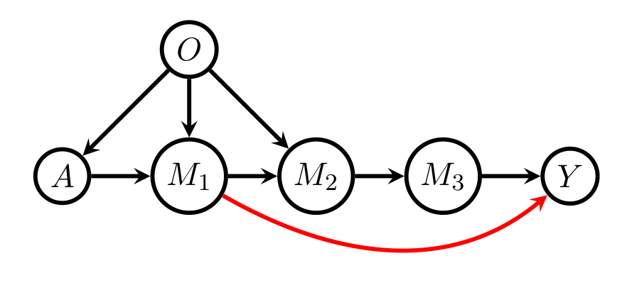
Example 12. Figure 13의 DAG를 봅시다. 이 경우 \(\mathbf{O} = \mathbf{O}_{\min} = \{O\} \equiv \{W_1\}\), \(J = T = 1\), \(\mathbf{M} = \{M_1, M_2, M_3\}\), \(K = 3\)입니다. \(J = 1\)이므로 알고리즘은 비후손 쪽 공식을 곧바로 저장합니다.
매개변수 쪽에서는 \(k = 2\)에 대해 조건 (66), (69), (70)이 모두 성립하므로
\[E_P[T_{P,a,\mathcal{G}} \mid M_1, \mathrm{pa}_{\mathcal{G}}(M_1)] - E_P[T_{P,a,\mathcal{G}} \mid \mathrm{pa}_{\mathcal{G}}(M_2)] \tag{75}\]
는 모든 \(P \in M(\mathcal{G})\)에 대해 소거됩니다. 반면 \(k = 4\)에서 조건 (66)이 실패하고 \(k = 3\)에서 조건 (70)이 실패하며 \(\{A, \mathbf{O}\} = \mathrm{pa}_{\mathcal{G}}(M_1)\)입니다. 따라서 알고리즘은 다음을 저장합니다.
\[ \begin{aligned} \chi^{1,\mathrm{desc}}_{P,a,\mathrm{eff}}(\mathbf{V};\mathcal{G}) &= E_P[T_{P,a,\mathcal{G}} \mid Y, \mathrm{pa}_{\mathcal{G}}(Y)] - E_P[T_{P,a,\mathcal{G}} \mid \mathrm{pa}_{\mathcal{G}}(Y)] \\ &\quad + E_P[T_{P,a,\mathcal{G}} \mid M_3, \mathrm{pa}_{\mathcal{G}}(M_3)] - E_P[T_{P,a,\mathcal{G}} \mid \mathrm{pa}_{\mathcal{G}}(M_3)] \\ &\quad + E_P[T_{P,a,\mathcal{G}} \mid M_2, \mathrm{pa}_{\mathcal{G}}(M_2)] - \frac{I_a(A) b_a(\mathbf{O};P)}{\pi_a(\mathbf{O};P)} \end{aligned} \]
(75)가 소거되었음에도 이 공식은 여전히 \(M_1\)에 의존합니다. 왜냐하면
\[E_P[T_{P,a,\mathcal{G}} \mid Y, \mathrm{pa}_{\mathcal{G}}(Y)] = Y\, E_P\left[\frac{I_a(A) b_a(\mathbf{O};P)}{\pi_a(\mathbf{O};P)} \,\middle|\, M_1, M_3\right]\]
이기 때문입니다.
정리하며 (Closing Remarks)
이 논문의 논리 사슬을 한 장으로 요약하면 다음과 같습니다.
| 단계 | 내용 | 근거 |
|---|---|---|
| ① 두 방향의 분해 | 조정집합의 교체는 언제나 “정밀 변수 보충 + 과대조정 변수 제거”로 분해된다 | Lemma 4, Lemma 5 |
| ② 비교 기준의 탈-선형화 | 그 분해가 성립하는 데 선형성도 OLS도 필요 없고, 오직 (4)의 영향함수 형태만 필요하다 | Theorem 6 (= Henckel et al. Thm 3.10의 비모수판) |
| ③ 최적 집합의 상속 | \(\mathbf{O} = \mathrm{pa}_{\mathcal{G}}(\mathrm{cn}) \setminus \mathrm{forb}\)가 임의의 조정집합에 대해 (9)·(10)을 만족하므로 비모수에서도 최적이다 | Theorem 7, Corollary 8 |
| ④ 최소성 축의 신설 | \(A \perp\!\!\!\perp_{\mathcal{G}} [\mathbf{O} \setminus \mathbf{O}_{\min}] \mid \mathbf{O}_{\min}\)로 정의된 유일한 \(\mathbf{O}_{\min}\)이 최소 조정집합들 가운데 최적이다 | Theorem 9, Lemma 22, Remark 10 |
| ⑤ 시간의존으로의 확장과 그 한계 | 비교 기준은 확장되지만(Theorem 13) 균일 최적은 존재하지 않을 수 있고, 최적 시간독립 집합조차 지배당할 수 있다 | Lemma 11–12, Theorem 13, Example 4 |
| ⑥ 잠재변수 아래에서의 부정적 결과 | 관측 가능한 조정집합들 사이에서도 균일 최적은 없을 수 있다 | Example 5 |
| ⑦ 불필요 변수의 소거 | \(\mathrm{irrel}(A,Y,\mathcal{G})\)는 효율적 영향함수에 등장하지 않으며 정보 손실 없이 주변화할 수 있다 | Theorem 14, Definition 15, Lemma 16, Algorithm 1 |
| ⑧ 효율성의 판정 | (19)의 항들이 망원급수처럼 상쇄될 조건 = 부모 집합들의 계단식 포개짐 | Theorem 18, Theorem 19 |
| ⑨ 식별과 효율의 교환관계 | \(\mathbf{O}_{\min} \ne \emptyset\)인데 \(A,Y,\mathbf{M}\)만의 식별 공식이 있으면 NP-\(\mathbf{O}\)는 결코 전역 효율적이지 않다 | Theorem 21 (+ ID 알고리즘의 완전성) |
| ⑩ 남는 자유도의 활용 | 효율적이지 않더라도 어떤 변수가 불필요한지는 건전하게 점검할 수 있다 | Algorithm 2–4, Example 11–12 |
개인적인 감상 몇 가지를 덧붙입니다.
- 가장 인상적인 지점은 “그래프 기준은 왜 모형에 무관한가”에 대한 이 논문의 답입니다. Henckel et al.의 기준이 선형 세계에서 성립한다는 사실만 놓고 보면 우연처럼 보이지만, 이 논문은 그 기준이 실은 (4)라는 단 하나의 영향함수 형태에만 의존함을 보입니다. 선형성은 그 영향함수를 특정 형태로 고정시켰을 뿐, 순서 관계 자체를 만들어 낸 것이 아니었던 셈입니다. 그래서 CPDAG·maximal PDAG로의 확장도 별도 증명 없이 자동으로 따라옵니다 — 기준이 d-분리에만 기반한다는 점이 그대로 이식성을 보증하기 때문입니다.
- \(\mathbf{O}_{\min}\)이라는 두 번째 축을 세운 것도 실무적으로 값집니다. \(\mathbf{O}\)가 최적이라는 결과는 아름답지만, “그래서 무엇을 측정할 것인가”라는 설계 질문에는 답하지 않습니다. Theorem 9의 3번 결론 — 어떤 최소 조정집합도 \(\mathbf{O} \setminus \mathbf{O}_{\min}\)의 원소를 포함하지 않는다 — 이 그 답의 뼈대를 줍니다. \(\mathbf{O} \setminus \mathbf{O}_{\min}\)은 순수한 정밀 변수이고, 예산이 허락하면 넣고 아니면 뺄 수 있는 선택적 사치품임이 명확해집니다.
- Theorem 21이 가장 미묘하고 아름다운 결과라고 생각합니다. “식별 공식이 하나 더 있다”는 사실이 “그 정보를 쓰지 않는 추정량은 효율적일 수 없다”로 이어지는데, 그 연결고리가 ID 알고리즘의 완전성이라는 점이 인상적입니다. 식별 이론의 완전성 결과를 효율성 이론의 불가능성 논증에 재활용한 셈이고, 두 이론이 이렇게 맞물리는 사례는 흔치 않습니다. 앞문 그래프가 그 대표적 무대가 된다는 점도 상징적입니다 — 앞문 공식이 처음 유명해진 이유가 “조정 없이도 식별된다”였는데, 이 논문은 같은 사실을 뒤집어 “그래서 조정만으로는 효율적일 수 없다”로 읽습니다.
- 부정적 결과들을 정직하게 남긴 점도 좋습니다. Example 4와 Example 5는 각각 시간의존 조정집합과 잠재변수 상황에서 균일 최적이 존재하지 않음을 구체적 수치(\(0.675\) 대 \(1.08\), \(0.04\) 대 \(1.44\))와 재현 가능한 R 스크립트까지 붙여 보입니다. 이론이 어디까지 확장되는지를 보이는 것만큼이나 어디에서 멈추는지를 반례로 못 박는 것이 후속 연구를 위해 유익합니다. §7의 여덟 개 열린 문제 목록도 그 연장선에 있습니다.
- 실용적 한계는 분명합니다. 첫째, 모든 결과가 DAG를 정확히 안다는 전제 위에 있습니다. 구조 학습의 불확실성이 이 기준들에 어떻게 전파되는지는 다루지 않습니다. 둘째, Theorem 19의 조건들은 매우 빡빡합니다. \(\mathbf{W}\)와 \(\mathbf{M}\)의 위상 순서가 유일해야 한다는 필요조건만 보아도, 현실의 복잡한 DAG에서 NP-\(\mathbf{O}\)가 효율적일 가능성은 크지 않아 보입니다. 셋째, 일단계 추정량이 하한을 달성하려면 다수의 비모수 회귀를 중첩해야 하고, 그 유한표본 성능은 논문의 범위 밖입니다. 넷째, Algorithm 2가 가장 작은 필요 변수 집합을 반환하는지가 미해결로 남아 있어, “측정하지 않아도 되는 변수”의 판정은 아직 보수적입니다.
주요 참고문헌 (Selected References)
- Chernozhukov, V., Chetverikov, D., Demirer, M., Duflo, E., Hansen, C., Newey, W., & Robins, J. Double/debiased machine learning for treatment and structural parameters. The Econometrics Journal, 21(1), C1–C68. (비모수 추정 전략의 대표 사례)
- Cochran, W. G. (1968). The effectiveness of adjustment by subclassification in removing bias in observational studies. Biometrics, 295–313. (과대조정의 고전적 논의)
- Evans, R. J. (2016). Graphs for margins of Bayesian networks. Scandinavian Journal of Statistics, 43(3), 625–648. (주변 DAG 모형·외생화, Algorithm 1의 이론적 토대)
- Evans, R. J., & Richardson, T. S. (2014). Markovian acyclic directed mixed graphs for discrete data. The Annals of Statistics, 42(4), 1452–1482. (Theorem 21의 잠재 사영)
- Geiger, D., Verma, T., & Pearl, J. (1990). Identifying independence in Bayesian networks. Networks, 20(5), 507–534. (d-분리와 조건부 독립의 대응, Lemma 22의 그래포이드 성질)
- Hahn, J. (1998). On the role of the propensity score in efficient semiparametric estimation of average treatment effects. Econometrica, 315–331. (결과회귀 추정량, 식 (7)의 특수 경우)
- Henckel, L., Perković, E., & Maathuis, M. H. (2019). Graphical criteria for efficient total effect estimation via adjustment in causal linear models. arXiv:1907.02435. (이 논문이 비모수로 확장하는 대상)
- Hirano, K., Imbens, G. W., & Ridder, G. (2003). Efficient estimation of average treatment effects using the estimated propensity score. Econometrica, 71(4), 1161–1189. (IPW 추정량)
- Kahn, A. B. (1962). Topological sorting of large networks. Communications of the ACM, 5(11), 558–562. (Algorithm 1의 위상 정렬 서브루틴)
- Lauritzen, S. L. (1996). Graphical Models. Clarendon Press. (\(\mathbf{O}_{\min}\) 유일성의 그래포이드 근거)
- Maathuis, M. H., & Colombo, D. (2015). A generalized back-door criterion. The Annals of Statistics, 43(3), 1060–1088. (Definition 2)
- Newey, W. K. (1990). Semiparametric efficiency bounds. Journal of Applied Econometrics, 5(2), 99–135. (정칙성과 영향함수의 연결, Theorem 2.2)
- Pearl, J. (2000). Causality: Models, Reasoning and Inference. Springer. (뒷문 기준, d-분리, 앞문 공식)
- Pearl, J., & Robins, J. M. (1995). Probabilistic evaluation of sequential plans from causal models with hidden variables. UAI’95, 444–453. (시간의존 조정집합의 충분조건, Example 4에서 사용)
- Perković, E. (2019). Identifying causal effects in maximally oriented partially directed acyclic graphs. arXiv:1910.02997. (\(\mathrm{irrel}\)의 대안적 표현)
- Richardson, T. S., & Robins, J. M. (2013). Single world intervention graphs (SWIGs). Working Paper 128(30). (NPSEM-IE / FFRCISTG 비교)
- Robins, J. (1986). A new approach to causal inference in mortality studies with a sustained exposure period. Mathematical Modelling, 7(9–12), 1393–1512. (g-공식)
- Robins, J. M. (1987a; 1987b). Addendum to a new approach to causal inference… Computers & Mathematics with Applications, 14(9–12), 923–945. (반복 조건부 기댓값 표현, Theorem AD.1)
- Robins, J. M., & Richardson, T. S. (2010). Alternative graphical causal models and the identification of direct effects. (인과 불가지론 그래프 모형)
- Robins, J. M., & Rotnitzky, A. (1992). Recovery of information and adjustment for dependent censoring using surrogate markers. In AIDS Epidemiology, 297–331. (식 (7)의 특수 경우)
- Robins, J. M., & Rotnitzky, A. (1995). Semiparametric efficiency in multivariate regression models with missing data. JASA, 90(429), 122–129. (시간의존 영향함수 (11))
- Robins, J. M., Rotnitzky, A., & Zhao, L. P. (1994). Estimation of regression coefficients when some regressors are not always observed. JASA, 89(427), 846–866. (영향함수 (4))
- Shpitser, I., & Pearl, J. (2008). Complete identification methods for the causal hierarchy. JMLR, 9(Sep), 1941–1979. (ID 알고리즘의 완전성, Theorem 21의 핵심 도구)
- Shpitser, I., VanderWeele, T., & Robins, J. M. (2010). On the validity of covariate adjustment for estimating causal effects. UAI’10, 527–536. (조정집합의 필요충분 그래프 기준)
- Shpitser, I., Evans, R. J., Richardson, T. S., & Robins, J. M. (2014). Introduction to nested Markov models. Behaviormetrika, 41(1), 3–39. (지구(district) 개념, Theorem 21)
- Smucler, E., Rotnitzky, A., & Robins, J. M. (2019). A unifying approach for doubly-robust \(\ell_1\) regularized estimation of causal contrasts. arXiv:1904.03737. (이중강건 추정)
- Spirtes, P., Glymour, C., Scheines, R., et al. (2000). Causation, Prediction, and Search. MIT Press. (조작 밀도 공식)
- Tian, J., & Pearl, J. (2002). On the testable implications of causal models with hidden variables. UAI’02, 519–527. (ID 알고리즘)
- Tsiatis, A. (2007). Semiparametric Theory and Missing Data. Springer. (Lemma 24의 Theorem 4.5)
- Van der Laan, M. J., & Robins, J. M. (2003). Unified Methods for Censored Longitudinal Data and Causality. Springer. (접공간 분해 Lemma 1.6, 시간의존 추정)
- van der Vaart, A. (2014). Higher order tangent spaces and influence functions. Statistical Science, 679–686. (일단계 추정량의 점근 이론)
- Van der Vaart, A. W. (2000). Asymptotic Statistics. Cambridge University Press. (정칙성, 접공간, 일단계 추정)
- van der Zander, B., & Liskiewicz, M. (2019). Finding minimal d-separators in linear time and applications. UAI’19, 637–647. (\(\mathbf{O}\)와 \(\mathbf{O}_{\min}\)의 다항시간 계산)
- VanderWeele, T. J., & Shpitser, I. (2011). A new criterion for confounder selection. Biometrics, 67(4), 1406–1413. (가지치기 절차의 원 추측)
- Verma, T., & Pearl, J. (1990). Causal networks: Semantics and expressiveness. In Machine Intelligence and Pattern Recognition, 9, 69–76. (잠재 사영)
- Witte, J., Henckel, L., Maathuis, M. H., & Didelez, V. (2020). On efficient adjustment in causal graphs. arXiv e-prints. (Henckel et al.과 함께 참조되는 후속 연구)